生成时间：2026-08-05T11:36:22+08:00
今日保留论文数：8
内容构成：今日新文 8 篇；补充推荐 0 篇；经典旧文精读 0 篇
数据源警告
- 本次有 1 个数据源访问异常；完整错误已保留在运行日志中，日报只显示摘要。
- arXiv API：1 个分类访问异常，候选池可能不完整；程序会基于已成功获取的数据继续兜底。
- 主要错误类型：超时 1 次。
高能天体物理重点
1. Revisiting the XMM-Newton Observations of the Galactic Microquasar SS 433: Implications for the Origin of the Ultrahigh-Energy Emission Detected by LHAASO
- 来源：arXiv / astro-ph.HE
- 链接：https://arxiv.org/abs/2608.03683v1
- 作者：Chao-Nan Tong, Hong-Bin Tan, Ruo-Yu Liu
- 评分：novelty 8/10，importance 8/10，relevance 10/10，final 9.70/10
- 推荐理由：直接针对LHAASO在SS 433方向探测到的100 TeV以上伽马射线和PeVatron候选问题，结合XMM空间分辨X射线再分析约束UHE辐射起源，优先级很高。
中文题目：重新分析 XMM-Newton 对银河系微类星体 SS 433 的观测：对 LHAASO 探测到超高能辐射起源的含义
做了什么：这篇文章重新处理了 XMM-Newton 对 SS 433/W50 系统双极喷流及北侧热壳层的档案观测，提取沿喷流方向的非热 X 射线亮度和光子指数空间剖面。作者发现喷流辐射随离核心距离整体变软，但靠近喷流基部存在较硬的电子成分；在近似均匀磁场假设下，这些电子可通过逆康普顿散射解释 LHAASO 在 SS 433 方向看到的 \(E>100\,\mathrm{TeV}\) 伽马射线。然而结论强烈依赖磁场沿喷流的分布：若磁场随喷流膨胀按磁通守恒下降，内区较强磁场会减少所需高能电子数并压低逆康普顿通量。电子输运计算还显示，仅从喷流基部注入粒子无法同时解释 X 射线强度、谱软化和下游再增亮，因此喷流内部很可能存在额外注入或再加速。
为什么重要：SS 433 是少数能把相对论性喷流、星云尺度非热辐射和 \(100\,\mathrm{TeV}\) 以上伽马射线联系起来的银河系实验室。若 LHAASO 信号确实来自喷流中的电子或强子加速，它将直接影响我们对银河系 PeVatron 的分类：微类星体是否也能像超新星遗迹、脉冲星风云或年轻星团一样把粒子推到 PeV 能区。本文的重要性在于，它没有只做多波段能谱拟合，而是把 XMM-Newton 的空间分辨谱信息用于约束粒子输运和磁场结构，从而检验“SS 433 是超高能源”的物理可行性。
理论 / 观测 / 仪器方法价值：对理论而言，文章把同步辐射 X 射线剖面、逆康普顿超高能伽马射线和电子输运统一到同一套约束中，指出磁场剖面是判断轻子模型能否成立的关键退化量。对观测而言，它提醒读者不能只用一个整体 X 射线通量点去拟合 LHAASO 谱点，而要看喷流不同位置的光子指数、亮度再增强和热壳层污染。对方法而言，本文展示了档案 XMM-Newton 数据在 PeVatron 研究中的价值：高角分辨率 X 射线谱图可以为 \(\gamma\) 射线角分辨率不足的问题提供物理定位。
为什么应该关注：如果你关心银河系 PeVatron，这篇文章告诉你 SS 433 的超高能辐射解释并不只是“电子还是质子”的二选一，而是受磁场、注入位置、冷却和输运共同控制。如果你做 X 射线或 TeV 观测，它给出一个可操作的路线：用空间分辨 X 射线谱检验超高能 \(\gamma\) 射线模型。如果你做喷流理论，它明确指出单次基部注入模型的失败位置，提示喷流内部激波、湍流或与 W50 介质相互作用导致的再加速可能不可忽略。
展开详细解读：文章讲解、背景、理论、重点章节、图表与相关工作
文章详细讲解
科学问题：LHAASO 在 SS 433 方向探测到 \(E>100\,\mathrm{TeV}\) 的超高能 \(\gamma\) 射线后，一个核心问题是这些光子到底来自哪里、由什么粒子产生。SS 433 本身是一个有稳定双极喷流的微类星体，位于 W50 星云内部；喷流在 X 射线、无线电和 TeV 能段都显示出延展结构。若超高能光子来自电子逆康普顿散射，则需要多百 TeV 乃至 PeV 量级电子；若来自强子 \(pp\) 相互作用，则需要足够的气体靶物质和质子加速效率。本文聚焦于 XMM-Newton 能解析的非热 X 射线喷流，因为这些 X 射线同步辐射直接追踪高能电子和磁场。
作者怎么做：作者重新分析覆盖 SS 433 双极喷流和北侧热 X 射线壳层的 XMM-Newton 档案数据，沿喷流方向划分空间区域，分别提取 X 射线表面亮度和光子指数剖面。他们特别区分非热喷流成分与热壳层成分，避免把 W50 壳层热辐射误当成喷流同步辐射。随后，作者把空间分辨的 X 射线谱与电子同步辐射模型相连，并估计这些电子在不同磁场假设下可产生的逆康普顿 \(\gamma\) 射线通量。
关键结果：X 射线喷流整体表现出随离 SS 433 核心距离增加而谱变软的趋势，这符合高能电子在输运过程中因同步辐射和逆康普顿冷却而损失能量的图像。但在靠近喷流基部的区域，作者识别出较硬的电子成分；在磁场沿喷流近似均匀的假设下，这一硬成分的逆康普顿辐射可以达到解释 LHAASO 超高能信号所需的水平。问题在于，若采用更接近膨胀喷流的磁通守恒磁场剖面，内区磁场会更强，同步辐射效率更高，给定 X 射线通量所需电子数更少，因而逆康普顿通量会被压低。
局限和下一步：本文最重要的局限不是 XMM-Newton 数据本身，而是磁场剖面和三维几何仍缺乏直接测量。X 射线同步辐射只约束电子数密度与磁场的组合，无法单独决定两者；LHAASO 的角分辨率又不足以精确定位 \(100\,\mathrm{TeV}\) 以上辐射在喷流中的位置。因此下一步需要更高质量的 X 射线偏振、深度 Chandra/XMM 空间谱图、CTA 或 LHAASO 后续形态测量，以及把轻子和强子输运放入同一喷流-星云动力学模型中检验。
关键结果是怎么做出来的
本文的证据链从样本选择开始：作者没有把 SS 433/W50 当作一个点源处理，而是选取 XMM-Newton 覆盖双极喷流和北侧热壳层的档案观测，对喷流轴向分区。每个分区的谱拟合给出非热 X 射线强度和光子指数，热壳层区域则用于识别和扣除可能污染喷流谱的热等离子体成分。读者应特别注意这些区域划分是否与已知喷流方向、W50 壳层结构和仪器视场边缘相容，因为空间分区决定了后续“谱软化”和“再增亮”的物理解释。
核心观测结果是沿喷流的非热 X 射线亮度和光子指数剖面。作者报告喷流光子指数随距离整体增大，即谱变软，这通常意味着发射电子分布在高能端变陡。与此同时，剖面中存在下游再增亮或局部增强结构，说明辐射不是简单地从核心注入后单调冷却。若只看总体能谱，很容易把这些局部结构平均掉；本文的价值正是把空间信息保留下来，迫使模型同时解释强度和谱形的距离演化。
显著性和置信度主要体现在谱拟合误差、不同区域光子指数差异以及模型能否复现剖面，而不是一个单独的“发现显著性”数字。作者使用非热同步辐射成分描述喷流 X 射线，并把拟合得到的电子谱转换为逆康普顿 \(\gamma\) 射线预期。关键模型比较是两类磁场假设：近似均匀磁场与随喷流膨胀下降的磁通守恒磁场。前者允许基部硬电子成分贡献 LHAASO 超高能通量，后者则因内区磁场增强而降低所需电子数，从而削弱逆康普顿输出。
支撑结论的图表应包括 XMM-Newton 图像与区域划分、沿喷流 X 射线表面亮度剖面、光子指数剖面、多波段谱能量分布以及电子输运模型与观测剖面的比较。最关键的检验不是模型能否穿过某个 LHAASO 谱点，而是同一组电子和磁场参数能否同时解释 X 射线亮度、X 射线谱指数、下游再增亮和超高能 \(\gamma\) 射线强度。
系统误差方面，至少有四类需要关注：背景和热壳层扣除、XMM-Newton 不同观测的交叉定标、喷流几何投影和磁场剖面假设。稳健性检验应看作者是否改变背景区、空间分区、吸收柱密度或热成分模型后仍得到相同的谱软化趋势。本文的物理结论中最稳健的是“仅基部注入难以解释全部 X 射线空间演化”；较不稳健的是“轻子逆康普顿是否足以解释全部 LHAASO 超高能辐射”，因为后者强烈依赖磁场和电子最高能量。
展开背景、理论、公式、模型、章节和图表导读
背景知识
SS 433 是银河系中最著名的微类星体之一，由紧致星与伴星组成，具有接近 \(0.26c\) 的双极喷流，并嵌在大型射电星云 W50 中。喷流的进动、宽角相互作用和与周围介质的冲击使它成为研究恒星质量黑洞或中子星喷流反馈的近邻实验室。与活动星系核相比，SS 433 的尺度更小、演化更快，但许多喷流-介质相互作用物理是相通的。
历史上，SS 433/W50 的 X 射线和无线电结构已经显示出喷流在远离核心处仍能维持非热粒子群。HAWC 曾在 SS 433 东西两侧叶瓣方向探测到多 TeV \(\gamma\) 射线，支持喷流终端或叶瓣存在高能电子。LHAASO 进一步把能段推进到 \(100\,\mathrm{TeV}\) 以上，使问题从“是否有 TeV 加速”升级为“是否达到 PeVatron 相关能量”。
为什么现在值得重新看 XMM-Newton 档案数据？因为 \(\gamma\) 射线望远镜在超高能段的角分辨率有限，单靠 LHAASO 很难确认发射区是核心、喷流内段、外侧叶瓣还是 W50 壳层。X 射线同步辐射的寿命短、对最高能电子敏感，因此空间分辨 X 射线谱能提供比宽波段总能谱更直接的粒子加速位置线索。
该领域常见误区之一是把 PeVatron 与强子加速自动等同。实际上，\(100\,\mathrm{TeV}\) 伽马射线既可能来自 PeV 质子，也可能来自数百 TeV 电子逆康普顿散射，只是后者受 Klein-Nishina 效应和快速冷却限制更强。另一个误区是认为 X 射线亮就必然对应强逆康普顿辐射；在给定同步辐射通量下，磁场越强，所需电子数越少，逆康普顿通量反而可能越低。
还需避免把喷流看成一维、稳态、单次注入的简单管道。SS 433 喷流会进动、膨胀，并与 W50 内部不均匀介质相互作用，局部激波和湍流可能在远离核心处重新加速粒子。本文正是利用亮度再增强和光谱演化指出这种复杂性。
基础理论 / 方法脉络
基本物理图像是：相对论电子在磁场中螺旋运动产生同步辐射，典型辐射频率随电子洛伦兹因子和磁场增强而升高；同一批电子还能把宇宙微波背景、红外或星光光子逆康普顿散射到 GeV--PeV 能段。因此，X 射线同步辐射和 TeV--PeV \(\gamma\) 射线常被用来共同约束高能电子谱。
在 SS 433 中，喷流提供粒子输运通道，W50 星云和喷流终端提供可能的冲击或湍流环境。若电子只在喷流基部注入，它们沿喷流传播时会因同步辐射和逆康普顿损失而冷却，最高能端首先减少，导致 X 射线谱逐渐变软。若下游出现再增亮或谱重新变硬，则通常需要额外注入、再加速、磁场增强或几何投影变化。
本文使用的关键观测量包括 X 射线非热表面亮度、光子指数、吸收柱密度、热壳层温度以及各区域的谱归一化。光子指数越小表示谱越硬；若用幂律电子谱近似，X 射线光子指数可映射到电子谱指数。这个映射在单一区域、单一磁场和纯同步辐射假设下较直观，但在多成分混合和冷却断裂存在时会变得退化。
磁场是最重要的隐藏变量。同步辐射通量大致依赖电子数和磁场强度的组合，而逆康普顿通量主要依赖电子数和目标光子场。因而相同的 X 射线亮度可以由“较多电子加较弱磁场”或“较少电子加强磁场”产生；两者预言的 \(\gamma\) 射线通量会很不一样。本文比较均匀磁场与磁通守恒下降磁场，正是为了展示这一退化。
观测分析上，XMM-Newton 的优势是有效面积大、适合弥散 X 射线谱；劣势是角分辨率不如 Chandra，且 W50 的热壳层、背景和点源污染需要小心处理。对 SS 433 这类复杂区域，残差结构和空间分区的选择往往比单个最佳拟合参数更重要。
公式与推导
第一步，从电子能量分布出发。若某一区域的相对论电子可近似为带截断的幂律，写作
其中 \(N_{e}(E_{e})\) 是单位能量电子数，\(K_{e}\) 是归一化，\(p\) 是电子谱指数，\(E_{\rm cut}\) 是截断能量。这个式子把 X 射线光子指数和超高能 \(\gamma\) 射线能力连接起来。
第二步，同步辐射的特征频率由电子洛伦兹因子 \(\gamma_{e}\) 和磁场 \(B\) 决定：
这里 \(e\) 是元电荷，\(m_{e}\) 是电子质量，\(c\) 是光速。该式说明 X 射线同步辐射选择的是最高能电子，且对 \(B\) 很敏感。
第三步，若电子谱为幂律且处在未冷却的单一区域，同步辐射光谱指数满足
其中 \(F_{\nu}^{\rm syn}\) 是同步辐射通量密度，\(\alpha\) 是能谱指数，\(\Gamma_{X}\) 是 X 射线光子指数。沿喷流 \(\Gamma_{X}\) 增大意味着电子谱变陡或冷却断裂进入 X 射线能段。
第四步，单个电子的辐射冷却可写为
其中 \(\sigma_{T}\) 是 Thomson 截面，\(U_{B}=B^{2}/8\pi\) 是磁场能量密度，\(U_{\rm rad}\) 是目标光子能量密度。这个式子给出谱软化的基本时间尺度。
第五步，冷却时间为
若 \(t_{\rm cool}\) 短于喷流输运时间，高能电子会在到达下游前损失，导致仅基部注入模型难以产生远处 X 射线再增亮。
第六步，喷流输运可用一维平流-损失方程概括：
其中 \(v_{j}\) 是喷流速度，\(z\) 是沿喷流距离，\(b(E_{e},z)=-dE_{e}/dt\)，\(Q(E_{e},z)\) 是注入或再加速源项。本文的核心物理判断是：若 \(Q(E_{e},z)\) 只在基部非零，难以复现观测剖面。
第七步，逆康普顿光子能量在 Thomson 极限近似为
其中 \(\epsilon_{0}\) 是种子光子能量。对于 \(E_{\gamma}>100\,\mathrm{TeV}\)，所需 \(\gamma_{e}\) 极高，而且常接近或进入 Klein-Nishina 区域，因此实际通量会低于简单 Thomson 估计。
第八步，在同一电子群产生同步辐射和逆康普顿辐射且处于 Thomson 近似时，两者光度比约为
该式直接解释本文为何强调磁场剖面：给定 \(L_{\rm syn}\)，较大的 \(B\) 会提高 \(U_{B}\)，从而降低 \(L_{\rm IC}\) 的相对强度。
第九步，若喷流半径为 \(R(z)\)，磁通守恒的一种标度可写为
其中 \(q\) 取决于磁场几何，例如环向或极向主导。喷流向外膨胀时 \(R(z)\) 增大，\(B(z)\) 下降；反推内区时 \(B\) 更强，因而同样 X 射线通量对应更少电子。
第十步，谱拟合和模型比较通常通过泊松或 \(\chi^{2}\) 统计量实现，例如
其中 \(D_{i}\) 是第 \(i\) 个能道或空间 bin 的数据，\(M_{i}(\boldsymbol{\theta})\) 是参数 \(\boldsymbol{\theta}\) 下的模型预测，\(\sigma_{i}\) 是不确定度。对本文而言，合格模型不仅要降低总 \(\chi^{2}\)，还必须在空间剖面残差上不系统偏离。
模型拟合 / 应用方法
本文的拟合分为两层。第一层是 XMM-Newton 谱拟合：对沿喷流划分的多个区域分别拟合吸收、热等离子体和非热幂律成分，得到非热通量与 \(\Gamma_{X}\)。这里的关键不是某一个区域的最佳拟合值，而是所有区域组成的空间趋势。若热壳层成分处理不当，喷流非热光子指数可能被系统性拉软或拉硬。
第二层是物理模型拟合：把 X 射线同步辐射对应的电子分布用于计算逆康普顿 \(\gamma\) 射线输出，并与 LHAASO 超高能通量比较。拟合量包括电子谱归一化、谱指数、最高能量、磁场强度或磁场剖面，以及可能的注入位置分布。由于 X 射线和 \(\gamma\) 射线角分辨率不同，模型必须把空间积分通量和局部 X 射线剖面同时纳入判断。
主要退化关系是 \(K_{e}\) 与 \(B\) 的退化。同步辐射通量可以由较大 \(K_{e}\) 和较小 \(B\) 产生，也可以由较小 \(K_{e}\) 和较大 \(B\) 产生；但逆康普顿通量主要跟 \(K_{e}\) 相关。因此，均匀磁场模型和磁通守恒模型对 LHAASO 能段的预言差别很大，即使它们都能在一定程度上匹配 X 射线。
残差诊断应关注两类系统偏差：一是模型是否在靠近基部区域低估硬 X 射线成分，二是是否在下游再增亮位置系统低估亮度。如果仅基部注入模型在这些位置留下同号残差，就说明问题不是参数微调能解决，而是源项 \(Q(E,z)\) 的空间结构缺失。本文由此提出额外注入或再加速的必要性。
模型可能失败的地方也很清楚。若 LHAASO 辐射的真实位置不在 XMM-Newton 所分析的喷流区域，轻子模型的对应关系会减弱；若强子过程贡献显著，X 射线同步辐射只能约束电子，不能直接代表质子。另一个风险是 Klein-Nishina 抑制和局部红外辐射场不确定性会影响 \(100\,\mathrm{TeV}\) 以上逆康普顿谱形。因此，本文结论应读作对轻子解释的条件性检验，而不是对所有起源模型的最终判决。
重点章节 / 结果段落怎么读
数据与区域选择部分应首先阅读。重点看作者选用了哪些 XMM-Newton 观测、如何处理软质子背景、点源、曝光校正和不同探测器数据合并。对 SS 433/W50 这种弥散源，区域划分比常规点源分析更影响结论；读者应检查喷流轴向 bin 是否避开明显热壳层和仪器边缘。
空间分辨谱分析部分是本文的观测核心。这里要看每个区域采用的谱模型：吸收柱密度是否固定或联动，热等离子体成分是否必要，非热幂律成分的统计显著性如何。沿喷流的非热通量和 \(\Gamma_{X}\) 剖面是后续所有物理解释的输入。
多波段辐射建模部分需要重点关注磁场假设。均匀磁场模型与磁通守恒模型可能都能解释部分 X 射线现象，但对逆康普顿超高能通量给出不同预言。读者应看作者如何从 X 射线同步辐射归一化推回电子数，再预测 LHAASO 能段。
电子输运计算部分是本文从“拟合能谱”走向“检验物理情景”的关键。需要看注入边界条件、喷流速度、冷却项、磁场随距离变化和是否允许再加速。若模型只在总通量上匹配而不能解释空间剖面，就不应被视为成功。
讨论与局限部分应关注作者如何处理轻子与强子解释的关系，以及他们对未来观测的具体需求。尤其应看他们是否把磁场测量、X 射线偏振、TeV 形态和更深 X 射线曝光列为区分模型的必要条件。
建议重点查看的图表
-
XMM-Newton 曝光校正图像与源区/背景区划分：检查喷流区域是否沿已知 SS 433 喷流轴布置，是否避开热壳层最亮部分和明显点源。
-
沿喷流的非热 X 射线表面亮度剖面：看亮度是否单调衰减，哪里出现再增亮；再增亮位置是否与 W50 壳层或喷流-介质相互作用区域重合。
-
沿喷流的 \(\Gamma_{X}\) 剖面：重点看误差棒是否支持显著谱软化，以及东西两侧喷流是否有对称或不对称趋势。
-
代表性区域的 X 射线谱和残差：检查热成分、非热幂律和背景模型是否有系统残差，尤其在软 X 射线能段是否存在热壳层污染。
-
多波段谱能量分布：看同步辐射模型是否匹配 X 射线点，逆康普顿模型是否能达到 LHAASO 的 \(E>100\,\mathrm{TeV}\) 通量，以及是否违反 GeV--TeV 上限或已有探测。
-
不同磁场剖面的模型比较图：重点看均匀磁场与磁通守恒磁场在 \(\gamma\) 射线能段的分叉，以及 X 射线拟合是否同样好。
-
电子输运模型与观测剖面对比：检查仅基部注入模型在哪些距离系统失败，额外注入或再加速是否能同时改善亮度和光谱。
-
参数稳健性或附录表格：看改变背景、吸收、热模型或分区后，谱软化和再增亮是否仍存在。
关键图表逐图导读
图 1：通常应是 SS 433/W50 的 XMM-Newton 图像或多波段叠加图。横纵轴为空间坐标，颜色表示 X 射线计数率或表面亮度，叠加喷流方向、源区和背景区。读图时不要只看最亮结构，要看作者是否把热壳层、点源和喷流非热区域分开；若区域划分跨越不同物理成分，后续光子指数剖面会被混合污染。
图 2：应关注沿东西双极喷流的非热 X 射线强度剖面。横轴多半是离 SS 433 核心的投影距离，纵轴是吸收修正或未修正的非热通量/表面亮度。模型线若为单次注入加冷却，通常会随距离衰减；数据点若出现下游再增亮，就是对简单输运模型的直接挑战。陷阱是投影距离不等于真实三维路径长度，且喷流进动会使局部增强被投影放大或稀释。
图 3：应是 \(\Gamma_{X}\) 随距离变化的图。横轴为距离，纵轴为 X 射线光子指数，误差棒给出统计不确定度。主要结论是喷流整体变软并在局部出现复杂变化。读图时要检查相邻 bin 的误差是否重叠、系统误差是否单独给出，以及热成分处理是否可能把软 X 射线污染解释成非热谱软化。
图 4：可能展示代表性区域的 X 射线谱拟合。横轴为能量，纵轴为计数谱或展开后的能量通量，模型线包括吸收、热等离子体和非热幂律。下方面板残差最重要：若残差在 \(1\)--\(2\,\mathrm{keV}\) 或高能端系统偏离，说明热模型或背景可能影响非热光子指数。不要只看 \(\chi^{2}\) 是否可接受，还要看残差是否随能量有结构。
图 5：应是多波段谱能量分布或同一电子群的同步辐射和逆康普顿模型。横轴为光子能量，纵轴为 \(\nu F_{\nu}\) 或 \(E^{2}dN/dE\)。XMM-Newton 点约束同步辐射，LHAASO 点约束超高能 \(\gamma\) 射线；不同磁场模型线在 \(\gamma\) 射线端分离。读图陷阱是模型线可能为空间积分结果，而 X 射线点来自特定区域，二者的空间对应需要核对。
图 6：若论文给出输运模型剖面，应重点看数据点与模型线在不同距离的残差。横轴为空间距离，纵轴可为亮度、\(\Gamma_{X}\) 或电子谱参数。仅基部注入模型若无法产生再增亮或低估下游硬成分，就支持额外注入/再加速。陷阱是增加自由函数 \(Q(E,z)\) 总能改善拟合，因此要看作者是否给出物理上合理的能量预算和加速位置解释。
论文原图 / 可嵌入图片
Fig04
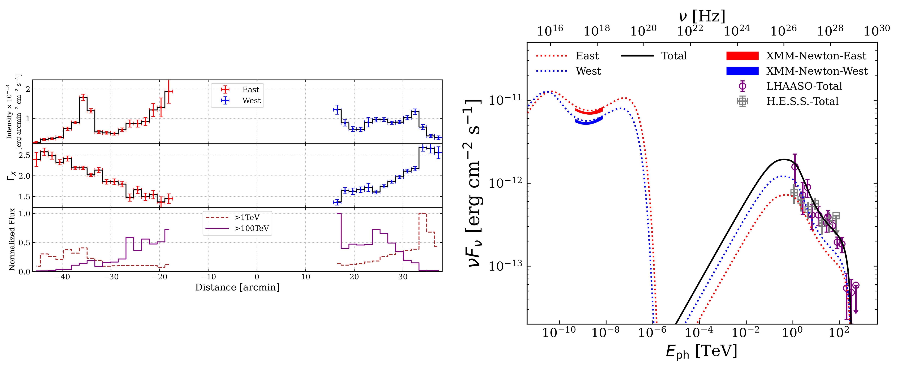
图注：Profile and SED of steady-state fitting. The upper and middle panel of the left figure are the fitting results of intensity and photon index profiles. The lower panel is the normalized TeV flux profile along the jets. The normalizations are $4.25\times10^{-13}\,{\rm erg\,cm^{-2}\,s^{-1}}$ for above 1\,TeV and $1.49\times10^{-14}\,{\rm erg\,cm^{-2}\,s^{-1}}$ for above 100\,TeV. The right figure is the modeling of SED. The red and blue dashed lines are the summed spectra of the eastern and western jet respectively. The black solid line is the total IC radiation.
对应解读：对应“建议重点查看的图表”第2、3、5项，以及“关键图表逐图导读”中关于非热X射线亮度剖面、Γ_X剖面和多波段SED的核心解读。
入选理由：这张图同时给出沿东西喷流的X射线强度、光子指数、TeV通量剖面和右侧SED建模，是连接XMM空间分辨谱结果与LHAASO超高能伽马射线解释的核心图。它直接支撑日报中关于谱软化、下游再增亮、电子群同步辐射与IC辐射能否解释UHE信号的主要论点。
来源与置信度：\(arxiv_source\)；high；\(arxiv_source\) / main.tex:figure[4]
Fig06
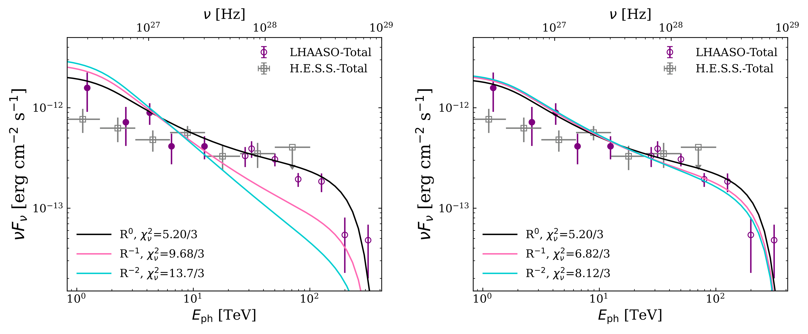
图注：TeV SEDs with different configurations of magnetic field based on H.E.S.S-based velocity profile (left) and velocity profile inferred from the nonthermal X-ray morphology in this work (right).
对应解读：对应“建议重点查看的图表”第6项，以及“模型拟合”中关于均匀磁场与磁通守恒磁场导致γ射线预言分叉的讨论。
入选理由：这张图专门比较不同磁场构型下的TeV SED，并区分基于H.E.S.S速度剖面和本文X射线形态推断速度剖面的结果。它最直接展示Ke-B退化如何影响IC通量，是判断轻子模型能否达到LHAASO能段的关键证据。
来源与置信度：\(arxiv_source\)；high；\(arxiv_source\) / main.tex:figure[6]
Fig07
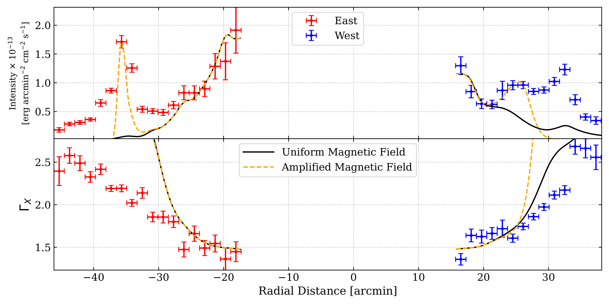
图注：X-ray intensity and photon index profiles of the evolution model. The black solid line shows the case where electrons are injected at the base of the jet and then propagate outward, evolving along the jet. The orange dashed line represents a scenario in which there is a sudden enhancement of the magnetic field within the jet.
对应解读：对应“建议重点查看的图表”第7项，以及“关键图表逐图导读”图6和“模型拟合”中关于仅基部注入模型残差、再增亮和额外注入/再加速必要性的段落。
入选理由：该图把电子输运演化模型与观测到的X射线强度和光子指数剖面进行对比，明确展示基部注入传播模型及磁场突增情形是否能解释剖面结构。它对日报中‘简单输运模型无法同时解释亮度和谱演化’这一结论最有支撑力。
来源与置信度：\(arxiv_source\)；high；\(arxiv_source\) / main.tex:figure[7]
Fig10
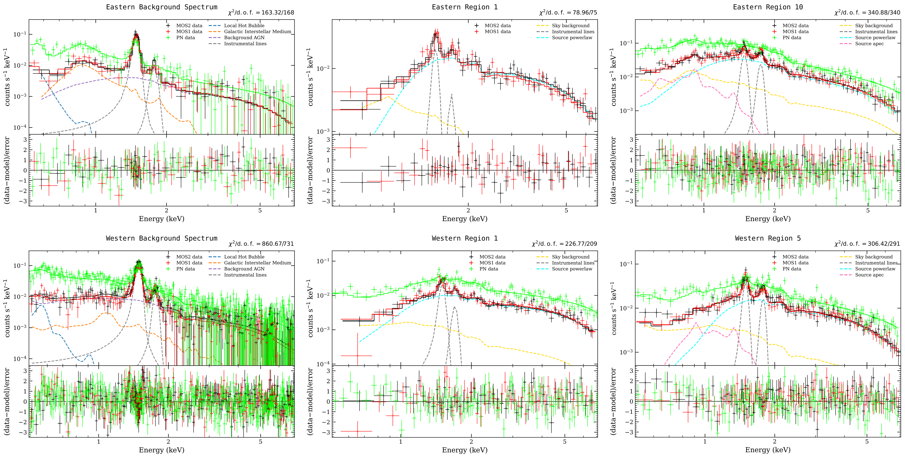
图注：\(\textit{XMM-Newton}\) spectra and best-fitting models folded through the instrumental responses for the background and source regions. The left panels show the eastern background region and source regions e1 and e10, while the right panels show the western background region and source regions w1 and w5. The corresponding nonthermal spectral fitting results for these source regions are reported in Table~\(\ref{tab:specresults}.\) These source regions were selected to sample two characteristic spectral regimes, in which e1 and w1 are dominated by nonthermal emission, while a thermal component becomes significant in e10 and w5. In each panel, the data points are from the EPIC MOS2, MOS1, and PN cameras. The dashed curves show the individual folded MOS2 model components, and the solid curves show the total model for each camera.
对应解读：对应“建议重点查看的图表”第4项，以及“模型拟合”中关于XMM谱拟合、热等离子体成分、非热幂律和背景处理的讨论。
入选理由：这张图展示了东西喷流代表性源区与背景区的XMM-Newton谱及折叠后的最佳拟合模型，并覆盖非热主导区域和热成分显著区域。它可用于检查热壳层污染和背景建模是否可能影响Γ_X与非热通量剖面，是验证空间趋势可靠性的关键诊断图。
来源与置信度：\(arxiv_source\)；high；\(arxiv_source\) / main.tex:figure[10]
Fig13
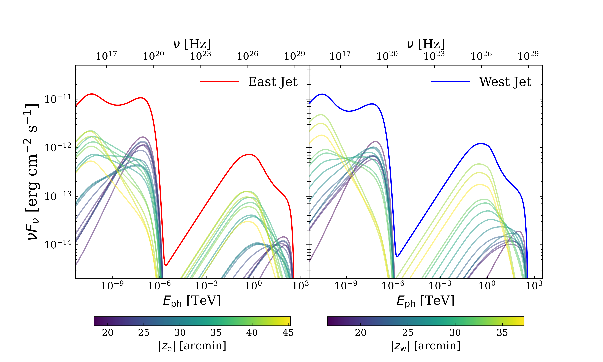
图注：Multiwavelength SEDs obtained from the steady-state multi-component model, showing the photon emission produced by the electron populations in the individual spatial bins. The colored curves show the contribution from the electrons in each bin, with color indicating the projected distance from the central source. The thick red and blue curves represent the total SEDs obtained by summing the contributions from all spatial bins in the eastern and western jets, respectively.
对应解读：对应“建议重点查看的图表”第5项，以及“关键图表逐图导读”中多波段SED和空间积分模型与分区贡献对应关系的提醒。
入选理由：这张图给出稳态多成分模型中各空间bin电子群产生的多波段SED，并标出东西喷流总贡献。相比只看总SED，它更能检查哪些距离区间主导X射线和γ射线输出，从而回应日报中关于空间积分通量与局部X射线剖面是否对应的关键问题。
来源与置信度：\(arxiv_source\)；high；\(arxiv_source\) / main.tex:figure[13]
Fig08
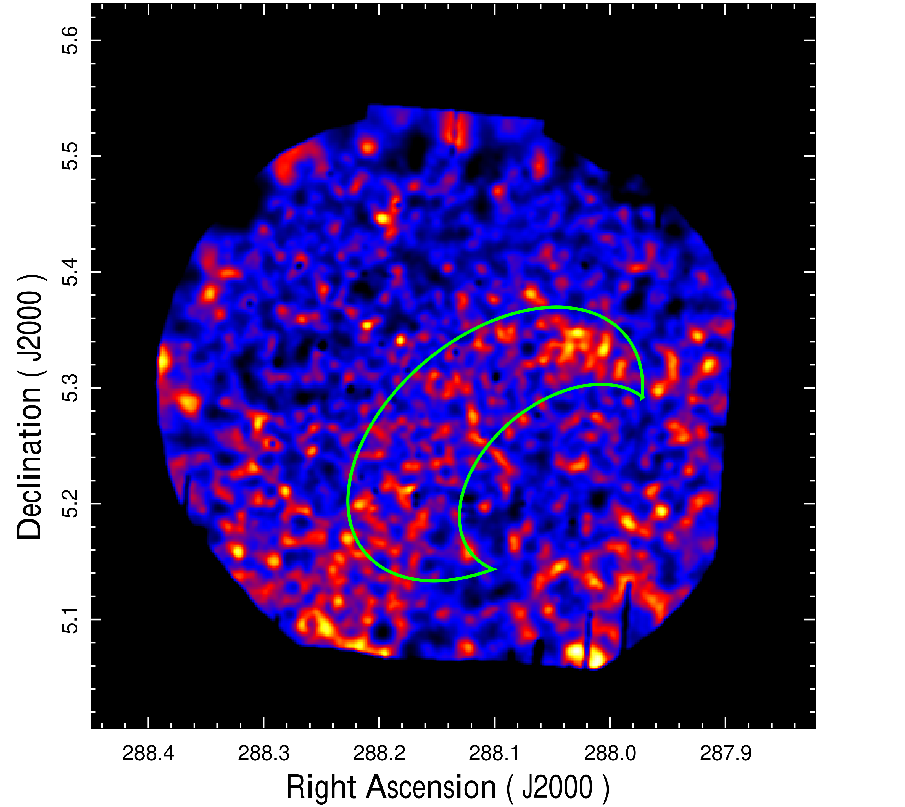
图注：Exposure-corrected and quiescent-particle-background-subtracted image of the thermal shell north of SS~433 in $0.4-1.25$\,keV, smoothed with a Gaussian kernel of $\sigma=1.5$ pixels in linear scale. The green region, following \(\citet{2024ApJ...975L..28C},\) is used to analyze the emission from the northern shell.
对应解读：对应“建议重点查看的图表”第1项和第8项中关于北侧热X射线壳层、源区/背景区划分及热壳层污染稳健性的讨论。
入选理由：虽然它不是喷流主图，但它展示了SS 433北侧热壳层的曝光校正、粒子背景扣除后的软X射线图像及分析区域。由于日报反复强调热壳层成分可能污染非热喷流谱，这张图有助于读者判断热壳层空间分布与后续谱拟合系统误差的关系。
来源与置信度：\(arxiv_source\)；high；\(arxiv_source\) / main.tex:figure[8]
强相关工作
同一源和同类工作中，HAWC 对 SS 433 叶瓣方向多 TeV \(\gamma\) 射线的探测是最直接的历史背景，它已经显示 SS 433 喷流能够在远离核心处加速粒子。LHAASO 的超高能探测把能量范围推到 \(100\,\mathrm{TeV}\) 以上，使 SS 433 从“TeV 喷流源”进入银河系 PeVatron 候选体讨论。建议检索关键词包括“SS 433 LHAASO ultrahigh energy gamma ray”、“SS 433 HAWC Nature 2018”、“W50 nonthermal X-ray jet”和“microquasar PeVatron”。
基础理论方面，相关脉络包括微类星体喷流、同步辐射/逆康普顿轻子模型、强子 \(pp\) 模型和喷流内部再加速。与本文可能存在张力的是那些把超高能辐射主要归因于强子过程、终端叶瓣或 W50 壳层相互作用的解释；它们不一定要求 X 射线电子群直接产生 LHAASO 光子。检索时可使用“SS 433 hadronic gamma-ray model”、“W50 jet interaction particle acceleration”、“Klein-Nishina inverse Compton SS 433”和“XMM-Newton SS 433 W50 jet spectroscopy”。
同一事件 / 同类源线索：
相似工作：
基础理论 / 方法工作：
（未提供）
相反观点 / 张力线索：
（未提供）
2. A JWST redshift for the host galaxy of EP250207b of z=3.2: a collapsar origin is viable
- 来源：arXiv / astro-ph.HE
- 链接：https://arxiv.org/abs/2608.03582v1
- 作者：Agnes P. C. van Hoof, Peter G. Jonker, Andrew J. Levan, Nial R. Tanvir, Franz E. Bauer, Joe Bright, Francesco Carotenuto, Ting-Wan Chen
- 评分：novelty 8/10，importance 8/10，relevance 9/10，final 9.35/10
- 推荐理由：Einstein Probe快速X射线暂现源宿主红移被JWST/HST重新判定为z=3.2，显著改变事件能量尺度和GRB/ collapsar解释，是重要高能暂现源结果。
中文题目：JWST 给出 EP250207b 宿主星系红移 \(z=3.2\)：塌缩星起源仍然可行
做了什么：这篇文章用 \(JWST\) 和 \(HST\) 重新检查 Einstein Probe 快速 X 射线暂现源 EP250207b 的宿主星系归属。早期工作把它和一个近邻星系 \(z=0.082\) 联系起来，因此提出双中子星并合起源；本文在暂现源位置发现一个背景星系，光谱或多波段约束给出红移 \(z=3.2\)。如果这个背景星系才是真宿主，那么事件的本征能量、静止系时间尺度和可见超新星约束都要重算。作者用 Redback 中的 top-hat 喷流余辉模型联合拟合 X 射线、光学、近红外和射电光变，发现数据可以由视线内长伽马暴余辉解释；目前的能量学和宿主性质不能把塌缩星和致密并合清楚区分开。
为什么重要：EP250207b 是 Einstein Probe 发现的快速 X 射线暂现源之一，最关键的问题不是“有没有一个漂亮的余辉模型”，而是“它到底离我们多远、在什么宿主里爆发”。红移从 \(z=0.082\) 改到 \(z=3.2\) 会把物理解释从低能近邻并合候选推向高红移 GRB 类事件，能量尺度、爆发率估计、宿主环境和多信使期待都会改变。
理论 / 观测 / 仪器方法价值：这项工作的价值在于把高角分辨率红外成像和多波段光变建模结合起来，展示了 FXT 宿主识别中的一个现实陷阱：低机会重合概率的近邻星系不一定是真宿主。对观测方法而言，它强调 \(JWST\) 在拥挤或深场宿主判认中的决定性作用；对理论而言，它提醒我们在用 FXT 建立双中子星并合样本或高红移塌缩星样本时，红移假设本身就是主导系统误差。
为什么应该关注：如果你关心 Einstein Probe 将怎样改变高能暂现源人口统计，这篇文章值得看，因为它是一个清楚的案例：同一个 X 射线暂现源，在不同宿主归属下会导向完全不同的物理故事。它也提示后续快速分类不能只靠附近亮星系的投影距离，而要把深成像、宿主光度函数、余辉 SED、红移和多波段演化放进同一个证据链里。
展开详细解读：文章讲解、背景、理论、重点章节、图表与相关工作
文章详细讲解
科学问题：EP250207b 最初被视为一个可能的近邻快速 X 射线暂现源，候选宿主是红移 \(z=0.082\) 的星系。若这个归属成立，事件的 X 射线光度、总辐射能量和持续时间会落在较低能标，并且可能与双中子星并合或短伽马暴类事件联系起来。本文重新提出核心问题：早期的宿主判认是否唯一？暂现源位置是否存在更暗、更远、但角位置更吻合的背景星系？这个问题重要，因为 FXT 的分类常常高度依赖宿主红移，而红移错误会系统性地误导能量学和事件率。
作者怎么做：作者使用 \(JWST\) 与 \(HST\) 对 EP250207b 场进行深成像和宿主定位检查，目标是消除或至少降低宿主归属歧义。他们在暂现源位置发现一个背景星系，并给出 \(z=3.2\) 的红移解释。随后他们把事件放在该红移下重新计算静止系时间尺度和能量尺度，并评估可获得的光学、近红外数据是否能排除伴随超新星。为连接观测和物理图像，作者用 Redback 中的 top-hat 喷流余辉模型联合拟合 X 射线、光学、近红外和射电光变。
关键结果：如果 \(z=3.2\) 的背景星系是宿主，EP250207b 的静止系光变会被压缩到观测时间的 \(1/(1+z)\)，而本征各向同性等效能量和光度显著升高，更接近宇宙学距离上的 GRB 余辉。多波段光变可由视线内、准经典 top-hat 喷流余辉解释；也就是说，作者并不需要引入异常的能量注入、极端密度环境或非常规辐射机制才能解释现有数据。另一方面，现有观测深度和时间采样不足以在 \(z=3.2\) 排除一个伴随超新星，因此塌缩星起源是可行的。
局限和下一步：本文并没有声称已经证明 EP250207b 必为塌缩星事件，而是说明“近邻并合解释并非唯一，且高红移塌缩星解释可行”。关键局限来自宿主归属概率、暂现源定位误差、背景星系红移确认方式、多波段光变采样稀疏，以及余辉模型本身的退化。下一步最有价值的是更精确的宿主光谱、对背景星系恒星质量和恒星形成率的约束、晚期宿主扣除成像、以及更完整的射电和近红外监测，以检验喷流开角、环境密度和是否存在超新星峰值。
关键结果是怎么做出来的
本文最重要的证据链从宿主识别开始。早期关联依赖 EP250207b 与 \(z=0.082\) 前景星系的低投影机会重合概率，但这种概率通常强烈依赖星系亮度阈值、定位误差半径和背景星系面密度。作者用 \(JWST\) 与 \(HST\) 的高角分辨率和深度在暂现源位置识别出一个背景星系，红移解释为 \(z=3.2\)。因此样本不是大样本统计，而是单一事件的归属重评估；关键统计量是宿主位置一致性、机会重合概率和不同宿主假设下物理参数是否合理。
在数据选择上，作者汇总了 X 射线、光学、近红外和射电光变点。对暂现源而言，X 射线给出爆发早期能量释放和衰减斜率，光学与近红外约束余辉同步辐射谱和可能的超新星成分，射电数据对外激波环境密度、喷流能量和自吸收频率更敏感。文章的关键不是某一个波段单独“看起来像 GRB”，而是这些波段在 \(z=3.2\) 下能否被同一个余辉模型同时解释。
模型比较的核心是 Redback 中 top-hat 喷流模型的多波段拟合。top-hat 模型假设喷流在开角内能量和洛伦兹因子近似均匀，观测者位于喷流轴内或接近轴内。作者检查模型能否同时匹配 X 射线衰减、光学/近红外亮度以及射电限制或探测。若 \(z=0.082\) 解释需要不同的能量尺度和可能不同的事件类型，那么 \(z=3.2\) 解释的优势在于它自然落入宇宙学 GRB 余辉参数空间。
显著性或置信度方面，这类工作通常不会给出类似粒子物理的单一 \(5\sigma\) 判据，而是通过宿主重合概率、红移一致性、拟合后验和残差来建立可信度。读者应重点看宿主定位图、SED 或红移诊断、以及多波段光变拟合图：如果背景星系与暂现源误差圆高度重合，而前景星系只是低概率投影邻近，那么原先的低红移解释就不再稳固。
主要系统误差包括：暂现源定位误差是否包含系统项；\(JWST\)/\(HST\) 图像与 Einstein Probe 或后随观测坐标系的配准误差；背景星系红移是否可能存在光度红移多解；前景星系晕或卫星系统是否可容纳暂现源；以及余辉模型中能量、密度、微物理参数和喷流几何之间的退化。稳健性检验应包括改变宿主假设、改变消光、改变环境密度剖面、加入或不加入超新星模板、以及检查射电上限是否排斥某些高密度解。
展开背景、理论、公式、模型、章节和图表导读
背景知识
快速 X 射线暂现源，常写作 FXT，是在 X 射线波段快速升起或衰减、持续时间从几十秒到数小时不等的一类事件。它们可能包括长/短伽马暴的离轴或暗伽马版本、潮汐瓦解事件早期相、磁星耀发、超新星冲击突破、致密并合余辉，甚至一些还没有清楚分类的高能暂现源。Einstein Probe 的宽视场软 X 射线监测能力使这类事件的发现率明显提高，但分类瓶颈常常转移到后随观测和宿主识别。
EP250207b 的争议点在于宿主红移。若宿主为 \(z=0.082\) 的近邻星系，则同样的观测通量对应相对较低的本征光度，观测时间也几乎就是静止系时间。这会使双中子星并合或短 GRB 类模型更有吸引力。若宿主为 \(z=3.2\) 的背景星系，则光度距离大得多，本征能量显著增加，静止系演化更快，事件会更像高红移 GRB 余辉或塌缩星相关爆发。
为什么现在值得重新看？一方面，\(JWST\) 的近红外深度和角分辨率使得以往被前景星系、浅成像深度或 seeing 限制掩盖的暗背景宿主可以被直接看到。另一方面，Einstein Probe 会产生越来越多 FXT 候选，如果早期分类过度依赖低机会重合概率的亮前景星系，就可能污染近邻并合样本、错误估计多信使触发优先级，并影响对宇宙学高红移爆发率的推断。
该领域常见误区之一是把“最近的亮星系”自动等同于“真实宿主”。实际上，宿主判认是一个贝叶斯问题，需要同时考虑暂现源定位、星系面密度、星系光度函数、红移先验、暂现源类型先验和多波段物理一致性。另一个误区是认为未看到超新星就能排除塌缩星；在 \(z=3.2\) 时，超新星光谱能量分布被红移到近红外，亮度变暗且时间膨胀，观测深度、滤光片和宿主扣除都会决定是否能看见。
还有一个背景张力来自长短 GRB 分类本身。传统上，长 GRB 与大质量恒星塌缩相关，短 GRB 与致密并合相关，但持续时间、宿主环境和余辉能量学之间并非一一对应。存在长持续时间的并合候选，也存在短硬爆发与塌缩星环境纠缠的个案。因此本文强调“塌缩星可行”而非“塌缩星已证实”，这是合理而谨慎的表述。
基础理论 / 方法脉络
从物理图像看，GRB 或 FXT 的后随辐射通常可以由相对论喷流与外部介质相互作用产生的外激波解释。喷流携带能量进入星际或星周介质，扫起外部物质后减速，激波加速电子并放大磁场，电子的同步辐射形成从射电到 X 射线的宽频谱余辉。观测者看到的光变由喷流能量、外部密度、微物理参数、喷流几何和观测角共同决定。
本文采用的 top-hat 喷流是最常用的基准模型之一。它假设喷流半开角 \(\theta_j\) 内单位立体角能量近似均匀，开角外能量迅速下降；观测者角度 \(\theta_{\rm obs}\) 若小于或接近 \(\theta_j\)，就会看到类似 on-axis GRB 余辉的快速明亮衰减。这个假设不一定真实，因为实际喷流可能是 structured jet，但 top-hat 模型有清楚的参数含义，适合作为检验“标准 GRB 余辉是否足够”的第一步。
关键观测量包括红移 \(z\)、光度距离 \(D_L\)、观测通量密度 \(F_\nu\)、静止系时间 \(t_{\rm rest}\)、各向同性等效能量 \(E_{\rm iso}\)、喷流校正能量 \(E_j\)、外部密度 \(n\)、电子能量分数 \(\epsilon_e\)、磁场能量分数 \(\epsilon_B\)、电子谱指数 \(p\) 和消光量。红移尤其关键，因为 \(F_\nu\) 到 luminosity 的转换含有 \(D_L^2\)，时间转换含有 \(1+z\)，谱段转换还含有 \(K\)-correction。
观测方法上，本文把宿主识别和余辉拟合结合起来。\(JWST\)/\(HST\) 成像用于检查暂现源误差圆中的星系和前景/背景重合；多波段光变拟合用于判断高红移宿主假设下事件是否物理自洽。真正的证据不是单独的红移或单独的模型拟合，而是位置、红移、光变和能量尺度之间能否形成一致解释。
主要退化包括 \(E_{\rm iso}\) 与 \(n\) 的退化、\(\epsilon_B\) 与射电亮度的退化、\(p\) 与谱斜率的退化、\(A_V\) 与高红移光学变暗的退化，以及 \(\theta_j\) 与 \(\theta_{\rm obs}\) 在光变拐折不明显时的退化。系统误差还包括绝对测光、宿主扣除、银河系和宿主消光、光度红移多解、以及不同望远镜观测时间和滤光片转换的一致性。
公式与推导
第一步是把观测红移和宇宙学距离联系起来。给定平直 \(\Lambda CDM\) 宇宙学，光度距离为
这里 \(c\) 是光速，\(H_0\) 是哈勃常数，\(\Omega_m\) 和 \(\Omega_\Lambda\) 是物质和暗能量密度参数。本文的核心敏感性来自 \(z=0.082\) 与 \(z=3.2\) 对 \(D_L\) 的巨大改变。
第二步是时间尺度转换。观测时间和静止系时间满足
因此若 EP250207b 在 \(z=3.2\)，同一观测光变在源静止系中快约 \(1+z=4.2\) 倍；这会影响它与短 GRB、长 GRB、冲击突破或并合余辉模板的比较。
第三步是把通量转换为单色光度。若观测到频率 \(\nu_{\rm obs}\) 的通量密度 \(F_{\nu_{\rm obs}}\)，源静止系频率为 \(\nu_{\rm rest}=(1+z)\nu_{\rm obs}\)，单色光度满足
这个式子说明红移假设如何直接进入光学、近红外和射电余辉的本征亮度。
第四步是估计各向同性等效能量。对观测能 fluence \(S_{\rm obs}\)，忽略或单独处理 \(K\)-correction 时有
其中 \(K\) 把观测能段修正到指定静止系能段。由于 \(E_{\rm iso}\propto D_L^2\)，宿主红移错误会导致能量学解释发生数量级变化。
第五步是外激波动力学的基本尺度。相对论爆炸波在均匀介质中扫起质量后满足近似能量守恒
这里 \(E_{\rm k,iso}\) 是各向同性等效动能，\(R\) 是激波半径，\(n\) 是外部数密度，\(m_p\) 是质子质量，\(\Gamma\) 是 bulk 洛伦兹因子。它给出余辉减速和光变的动力学基础。
第六步是观测时间与半径、洛伦兹因子的关系。对 on-axis 相对论运动，近似有
结合上一式可得到 \(\Gamma(t)\) 的衰减标度，并说明为什么早期 X 射线光变对能量和密度敏感。
第七步是同步辐射频谱。激波后电子常假设服从幂律分布
其中 \(\gamma_e\) 是电子洛伦兹因子，\(\gamma_m\) 是最小注入洛伦兹因子，\(p\) 决定谱斜率和光变衰减指数。X 射线与光学是否位于同一同步辐射谱段，是检验模型的重要诊断。
第八步是典型频率的参数依赖。均匀介质、绝热演化的标准余辉中，注入频率可写成标度形式
这里 \(\epsilon_e\) 和 \(\epsilon_B\) 分别是电子和磁场能量分数。该式解释了为什么光学/近红外颜色和早期衰减会限制微物理参数。
第九步是峰值通量标度。均匀介质中近似有
射电数据尤其常通过 \(F_{\nu,\max}\) 和自吸收频率约束 \(n\) 与 \(\epsilon_B\)，但二者高度退化。
第十步是拟合诊断。若观测点为 \(F_i\)，模型为 \(M_i(\boldsymbol{\theta})\)，高斯误差 \(\sigma_i\) 下似然可写作
参数 \(\boldsymbol{\theta}\) 包括 \(E_{\rm k,iso}\)、\(n\)、\(p\)、\(\epsilon_e\)、\(\epsilon_B\)、\(\theta_j\)、\(\theta_{\rm obs}\)、消光和爆发时刻等。残差是否随机、不同波段是否共同支持同一后验，是判断 \(z=3.2\) 余辉解释是否可信的核心。
模型拟合 / 应用方法
本文的拟合目标是多波段光变，而不是单一能段的经验函数。模型参数通常包括喷流能量、喷流半开角、观测角、外部介质密度、电子谱指数、微物理能量分数、红移、宿主消光和爆发时间。由于本文重点比较宿主红移假设，红移本身对所有波段共同施加时间、频率和亮度变换；这使得 \(z=3.2\) 解不是简单把曲线整体上移，而是改变整个余辉的静止系解释。
Redback 这类框架通常通过贝叶斯采样或似然优化给出参数后验。对每个光变点，模型需要在相应观测时间、滤光片或频率上计算预测通量，再与观测值或上限比较。若包含非探测上限，严格做法应使用截断似然或单侧似然，而不是把上限当作普通数据点。读者阅读时应关注作者如何处理射电上限、近红外宿主扣除、不同仪器零点和滤光片响应。
参数退化是解释这篇文章时必须放在前面的限制。较高的 \(E_{\rm k,iso}\) 可以被较低的 \(n\) 或不同的 \(\epsilon_B\) 部分抵消；\(\theta_j\) 与 \(\theta_{\rm obs}\) 只有在喷流 break 或早期上升被清楚采样时才容易分开；宿主消光 \(A_V\) 与高红移 Lyman 吸收、内禀谱斜率之间也会相互纠缠。因此“top-hat 模型拟合成功”应理解为“标准余辉解释未被排除”，而不是唯一参数解已经确定。
残差诊断应重点看不同波段是否出现系统偏差。例如，模型若能拟合 X 射线但系统性低估射电，可能暗示外部密度或自吸收处理不对；若能拟合光学/近红外但 X 射线过亮，可能需要能量注入、额外高能辐射成分或不同谱段位置；若晚期近红外出现超出余辉的红色峰值，则可能是超新星或宿主污染。本文结论较谨慎，说明现有数据不能排除超新星，而不是声称已经探测到超新星。
模型可能失败的场景包括：背景星系红移归属错误；暂现源实际位于前景星系的外围或一个未识别矮卫星中；外部介质不是均匀介质而是风型密度 \(\rho\propto r^{-2}\)；喷流不是 top-hat 而是结构化喷流；或者 X 射线暂现本身不是 GRB 外激波而包含中央引擎长时间活动。实际应用中，本文提供的是一个分类模板：先用深成像确认宿主，再在多个红移假设下进行统一光变拟合，最后用物理合理性和统计证据共同判断。
重点章节 / 结果段落怎么读
第一，数据与观测部分应从 \(JWST\) 和 \(HST\) 成像读起。重点看作者如何把暂现源位置转移到高分辨率图像上、使用了哪些滤光片、达到什么深度、以及背景星系与误差圆的相对位置。这里决定了全文最重要的前提：\(z=3.2\) 星系是否真有资格作为宿主。
第二，宿主红移与机会重合分析是下一处重点。读者应检查前景 \(z=0.082\) 星系和背景 \(z=3.2\) 星系的概率比较是否只基于角距离，还是还考虑了星系亮度、面密度和定位系统误差。若论文给出光度红移或谱线识别，应特别关注红移解是否唯一。
第三，多波段光变汇编部分要看数据是否同步、是否有宿主扣除、非探测上限如何使用。FXT 后随观测常常时间采样不均匀，不同波段的点可能并不处于同一谱段演化阶段。读者应把 X 射线、光学/近红外、射电放在一起看，而不是只看某个波段的漂亮拟合。
第四，Redback top-hat 喷流拟合部分是物理解释核心。应关注采用了哪些先验、是否固定红移、是否允许宿主消光变化、环境密度是均匀还是风型、以及是否报告后验分布而不只是最佳拟合曲线。若模型只有宽松约束，也要看作者是否把结论表述为“consistent with”而非“proves”。
第五，讨论部分要看塌缩星和并合起源的区分。本文的关键结论是能量学和宿主性质不能明确区分两者，但在 \(z=3.2\) 下塌缩星起源可行，且现有数据不能排除伴随超新星。读者应注意作者是否讨论了长 GRB 宿主、短 GRB 宿主、高红移超新星可见性和 Einstein Probe FXT 分类的后果。
建议重点查看的图表
-
宿主定位图：看 EP250207b 的误差圆、\(JWST\)/\(HST\) 图像中背景星系的位置、前景 \(z=0.082\) 星系的投影距离，以及坐标配准误差是否单独标出。
-
宿主 SED 或红移诊断图：看 \(z=3.2\) 解由哪些滤光片、谱线或颜色断裂支持；注意是否存在低红移尘埃星系的替代解。
-
机会重合概率或宿主比较表：看前景星系和背景星系的 \(P_{\rm cc}\) 如何计算，星等限制和误差半径怎么选，是否包含 look-elsewhere 或星系数密度系统误差。
-
多波段光变图：看 X 射线、光学、近红外、射电点是否能由同一个 top-hat 余辉模型贯穿；尤其检查上限是否真的有约束力。
-
模型后验或 corner plot：看 \(E_{\rm k,iso}\)、\(n\)、\(\epsilon_B\)、\(p\)、\(\theta_j\)、\(\theta_{\rm obs}\) 是否被数据约束，还是主要由先验决定。
-
超新星约束图或模板比较：看在 \(z=3.2\) 下典型长 GRB 相关超新星模板是否低于观测上限，滤光片是否覆盖红移后的光学峰值。
-
残差或分波段拟合诊断：若论文提供，应看某一波段是否系统偏离模型；这比最佳拟合曲线本身更能揭示模型问题。
关键图表逐图导读
图 1：宿主场成像图。横纵轴通常是天球坐标偏移或赤经、赤纬，图上应叠加 EP250207b 定位误差圆、\(JWST\)/\(HST\) 检出的星系，以及早期候选前景宿主的位置。读图重点是背景 \(z=3.2\) 星系是否位于误差圆中心附近，以及前景 \(z=0.082\) 星系是否只是较远投影邻近。陷阱是只看肉眼亮度；真实宿主不一定是图中最亮的星系。
图 2：宿主 SED 或红移约束图。横轴一般为观测波长或滤光片，纵轴为通量密度或星等，模型线表示不同红移的星系模板。重点看 \(z=3.2\) 是否由 Lyman/Balmer 断裂、近红外颜色或谱线一致支持。读图陷阱是忽略尘埃-红移退化：一个低红移高消光星系有时可模拟高红移颜色，因此需要看置信区间和替代解。
图 3：多波段光变拟合图。横轴通常是爆发后观测时间或静止系时间，纵轴是通量密度、星等或 \(\nu F_\nu\)，不同颜色表示 X 射线、光学、近红外和射电。模型线为 top-hat 余辉在对应频段的预测。重点看所有波段是否共享同一组参数；陷阱是对数坐标会掩盖局部系统偏差，上限点也不应被当作实际探测。
图 4：参数后验或 corner plot。每个一维面板显示参数边缘后验，二维面板显示参数相关性。重点看 \(E_{\rm k,iso}\) 与 \(n\)、\(\epsilon_B\) 的相关，\(\theta_j\) 与 \(\theta_{\rm obs}\) 是否被区分，以及后验是否贴着先验边界。陷阱是把宽后验的中位数当作精确测量。
图 5：超新星模板或晚期近红外限制图。横轴为爆发后时间，纵轴为近红外亮度或绝对星等，曲线可能给出典型 GRB-SN 模板在 \(z=3.2\) 的红移后亮度。重点看观测上限是否足够深到排除常见塌缩星超新星。陷阱是没有考虑宿主背景、滤光片对应的静止系紫外波段以及高红移时间膨胀。
图 6：宿主概率或物理参数比较表。若以表格呈现，应比较 \(z=0.082\) 与 \(z=3.2\) 假设下的 \(D_L\)、\(E_{\rm iso}\)、\(t_{\rm rest}\)、宿主偏移和 \(P_{\rm cc}\)。重点不是某一个数值，而是两个假设如何改变物理分类。陷阱是机会重合概率低并不等价于后验概率高，除非暂现源类型和星系先验也被纳入。
论文原图 / 可嵌入图片
Fig01
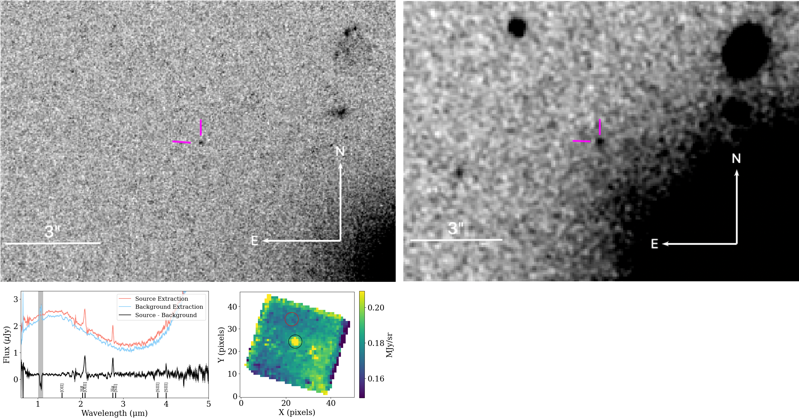
图注：\(\textit{Top:}\) HST images of the field of EP250207b, $\sim$289 days after the EP-WXT trigger. A source is clearly visible in both the F606W (left) and the F160W (right) image, as indicated by the magenta markers. \(\textit{Bottom left:}\) Extracted 1D spectrum of the JWST/NIRSpec IFU data in observed wavelength ($\mu$m) and flux density in $\mu$Jy. Extraction at the source position is shown in light red, the background region in blue and the background subtracted source in black. The locations of several emission lines at $z=3.2$ are over shown with vertical lines. The grey shaded region denotes a region of high noise in the background, which is masked. \(\textit{Bottom right:}\) Collapsed IFU Cube with the extraction aperture shown in black and the background region with in red. The axes are pixels and the colour indicates the flux density in MJy/sr.
对应解读：对应“建议重点查看的图表”中的宿主定位图与宿主红移诊断图，也对应“关键图表逐图导读”的图1、图2内容。
入选理由：这张图同时给出HST成像中EP250207b位置处的源以及JWST/NIRSpec IFU一维谱，标出了z=3.2下多条发射线，是支撑论文核心结论“存在背景z=3.2宿主候选”的最关键证据。它比单纯光变或参数图更直接决定红移归属和近邻z=0.082解释是否唯一。
来源与置信度：\(arxiv_source\)；high；\(arxiv_source\) / main.tex:figure[1]
Fig03
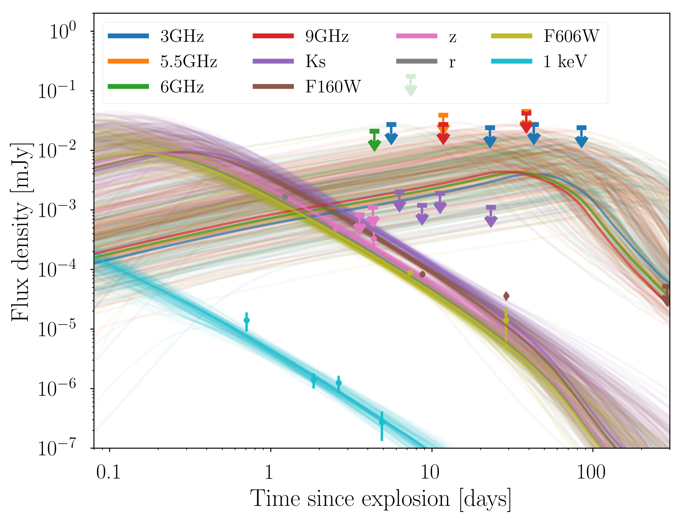
图注：\(\textsc{Redback tophat}\) afterglow model fit to the X-ray, optical, NIR and radio observations at a fixed redshift of $z=3.2$. The last epoch of HST F606W is assumed to be host-galaxy light only and this flux density has been subtracted from the shown F606W measurements. The fit uses the \(\texttt{nessai}\) nested sampler with a Gaussian likelihood.
对应解读：对应“建议重点查看的图表”中的多波段光变图，以及“关键图表逐图导读”的图3和“模型拟合”段落。
入选理由：该图展示Redback top-hat余辉模型在固定z=3.2下对X射线、光学、近红外和射电数据的联合拟合，直接检验高红移GRB余辉解释是否能贯穿所有波段。它是判断“collapsar origin is viable”和标准余辉模型是否未被排除的核心图。
来源与置信度：\(arxiv_source\)；high；\(arxiv_source\) / main.tex:figure[3]
Fig06
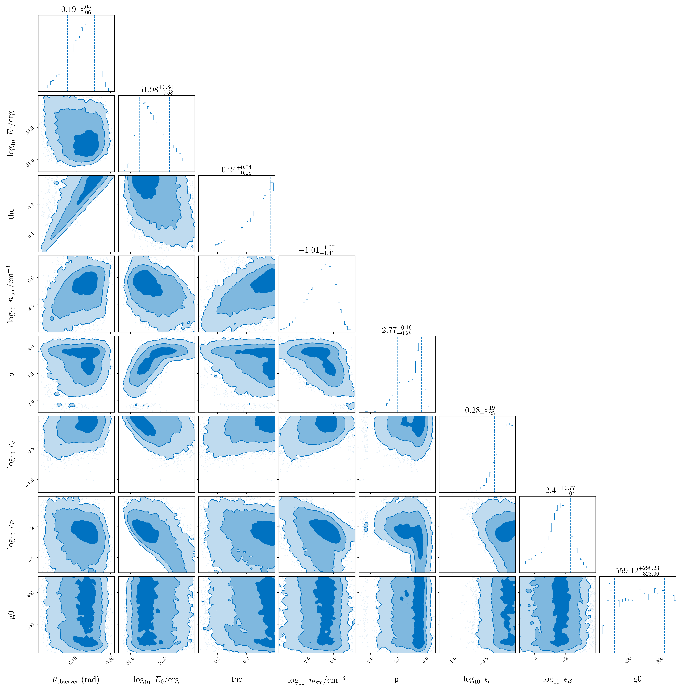
图注：Corner plot of the posterior distributions for the \(\textsc{Redback}\) tophat afterglow model fitted to the radio, optical and X-ray observations of the afterglow of EP250207b.
对应解读：对应“建议重点查看的图表”中的模型后验或corner plot，以及“关键图表逐图导读”的图4和“模型拟合”中关于参数退化的讨论。
入选理由：这张corner plot显示top-hat余辉模型参数后验，可用于判断能量、密度、微物理参数和喷流几何是否真正受数据约束，还是存在明显退化或贴近先验边界。它比最佳拟合曲线更能反映模型解释的稳健性。
来源与置信度：\(arxiv_source\)；high；\(arxiv_source\) / main.tex:figure[6]
Fig02
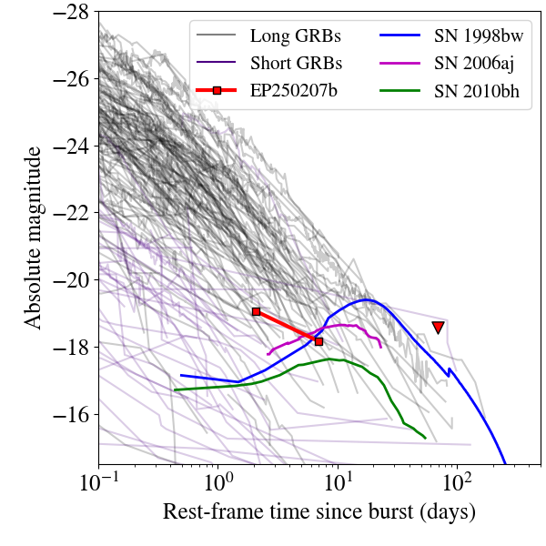
图注：Kann plot showing the absolute $r^{\prime}$-band light curves of a sample of long GRBs (black), a sample of short GRBs (purple) and three well-studied GRB-SNe: SN~1998bw (blue), SN~2006aj (magenta) and SN~2010bh (green). We overplot the host-subtracted F160W observations of EP250207b in red and the host magnitude as upper limit for epoch 3. The light curve of EP250207b is consistent with that of faint long GRBs but also with that of bright short GRBs. The peaks of the SNe are just after the second epoch and fainter than the third epoch of EP250207b, leaving us unable to rule out or confirm an association with a similar SN.
对应解读：对应“建议重点查看的图表”中的超新星约束图或模板比较，以及“关键图表逐图导读”的图5。
入选理由：该Kann plot把EP250207b的host-subtracted F160W观测与长短GRB及GRB-SN模板比较，直接支撑论文关于“现有数据不能排除类似GRB-SN”的结论。它对判断塌缩星起源是否可行非常重要。
来源与置信度：\(arxiv_source\)；high；\(arxiv_source\) / main.tex:figure[2]
Fig04
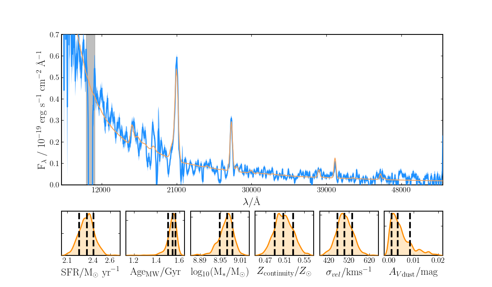
图注：\(\textit{Top panel:}\) BAGPIPES fit (orange) to the host galaxy spectrum (blue) in $F_{\lambda}$ in $10^{-19}$~erg~s$^{-1}$~cm$^{-2}$~\(\AA\)$^{-1}$. The 1$\sigma$ uncertainty on the spectrum is shown by the blue shaded region. The grey shaded region has been masked during the fit. \(\textit{Bottom panels:}\) Posterior distributions for six fitted parameters: SFR, age, stellar mass, metallicity, velocity dispersion and dust extinction. The vertical dashed lines indicate the 16th, 50th and 84th percentiles.
对应解读：对应“建议重点查看的图表”中的宿主SED或红移诊断图，并补充“详细解读”中对背景星系恒星形成率、质量和消光的讨论。
入选理由：该图给出BAGPIPES对宿主星系光谱的拟合及SFR、年龄、恒星质量、金属丰度、速度弥散和尘埃消光后验，可用于评估z=3.2宿主的物理性质。虽然不如Fig01直接展示发射线红移证据，但能补充宿主性质和尘埃退化判断。
来源与置信度：\(arxiv_source\)；high；\(arxiv_source\) / main.tex:figure[4]
Fig05
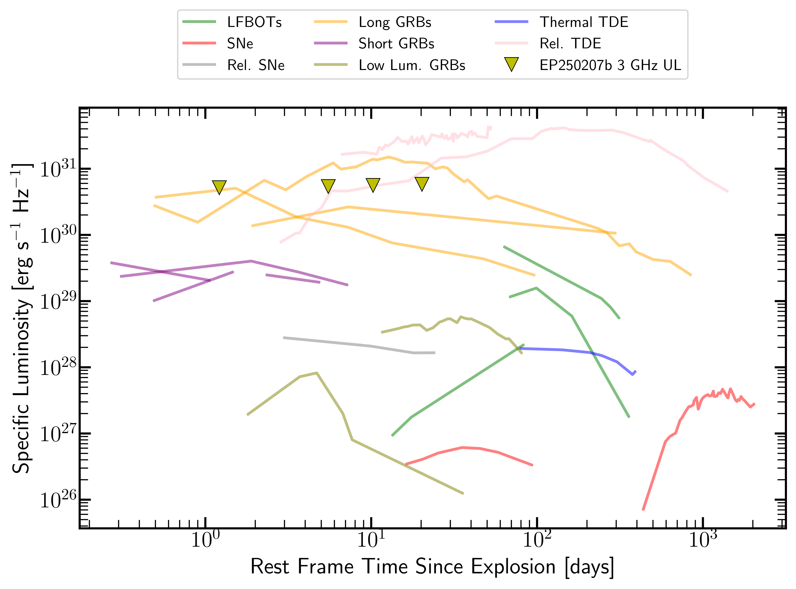
图注：Radio luminosity versus rest-frame time since the explosion for different transient classes. We show the four upper limits in the 3.06~GHz band of EP250207b with triangles for $z=3.2$.
对应解读：对应“建议重点查看的图表”中的多波段光变和射电上限约束，也关联“模型拟合”段落中对射电上限约束力的提醒。
入选理由：该图将EP250207b在z=3.2下的3.06 GHz射电上限放到不同暂现源类别的射电光度—静止系时间平面中，有助于判断射电非探测是否限制GRB余辉或其他暂现源解释。其诊断价值低于联合光变拟合和后验图，但仍能支撑分类比较。
来源与置信度：\(arxiv_source\)；high；\(arxiv_source\) / main.tex:figure[5]
强相关工作
这篇工作应放在三个文献脉络中读。第一是 Einstein Probe 和 FXT 发现论文或早期通报，它们给出 EP250207b 的触发、X 射线性质和最初宿主关联；检索关键词可用 “EP250207b Einstein Probe fast X-ray transient host \(z=0.082\)” 和 “Einstein Probe FXT follow-up”。若要找同一事件论文，应优先查 arXiv、NASA ADS、GCN/TAN circulars 和 Einstein Probe 官方发布。
第二是 GRB 余辉和宿主判认文献。本文使用的 top-hat 外激波模型来自标准 GRB 余辉理论传统；宿主机会重合概率方法则与短 GRB、FRB、超新星宿主识别类似。建议检索 “GRB afterglow top-hat jet model”, “chance coincidence probability transient host galaxy”, “short GRB host association”, “Redback afterglow fitting”。
第三是长短 GRB 起源张力和特殊个例。塌缩星与并合的边界近年来变得不那么干净，例如长持续时间并合候选、无明亮超新星的长 GRB、以及高红移暗宿主事件。本文与这些工作关系密切，因为它没有用单一持续时间或单一宿主类型做分类，而是强调红移和多波段余辉的一致性。相反观点可能来自坚持低红移前景星系归属、或认为 FXT 更可能是并合/磁星活动的解释；检索关键词可用 “long GRB without supernova”, “merger-driven long GRB”, “collapsar versus compact merger GRB classification”。
同一事件 / 同类源线索：
相似工作：
基础理论 / 方法工作：
- https://arxiv.org/abs/astro-ph/9709273
- https://arxiv.org/abs/astro-ph/9709094
- https://arxiv.org/abs/astro-ph/9901236
- https://arxiv.org/abs/astro-ph/0510027
相反观点 / 张力线索：
3. One year of broadband radio monitoring of the enigmatic transient GRB 250702B reveals the evolution of the relativistic jet
- 来源：arXiv / astro-ph.HE
- 链接：https://arxiv.org/abs/2608.03205v1
- 作者：A. J. Goodwin, James C. A. Miller-Jones, Itai Sfaradi, Andrew Mummery, Raffaella Margutti, Tanmoy Laskar, K. D. Alexander, Yuhan Yao
- 评分：novelty 8/10，importance 8/10，relevance 9/10，final 9.35/10
- 推荐理由：对特殊GRB 250702B进行一年0.65-233 GHz宽带射电监测，约束相对论喷流、介质和可能TDE/GRB起源，是值得阅读的高能暂现源观测论文。
中文题目：对神秘暂现源 GRB 250702B 一年宽频射电监测揭示相对论喷流演化
做了什么：这篇论文报告了 GRB 250702B 发现后约一年内、从 \(0.65\) 到 \(233\,\mathrm{GHz}\) 的密集射电监测。作者用随时间平滑演化的同步辐射峰谱来拟合数据，发现它可由绝热激波在分层外介质中传播解释，外介质密度近似满足 \(n_e\propto R^{-k}\)，其中 \(k\simeq1.5-2\)。低频 \(\leq3\,\mathrm{GHz}\) 光变中存在明显闪烁，作者将其归因于星际闪烁，并据此限制爆波的角向图像尺寸，对应横向半径约 \(1.2\times10^{16}\lesssim R_\perp\lesssim5\times10^{17}\,\mathrm{cm}\)。核心物理结论是：射电辐射可能来自一个宽角、低洛伦兹因子的喷流，也可能来自一个窄角、高相对论喷流；这两种解释分别指向不同中心引擎和前身星通道，包括恒星质量黑洞相关事件、氦星并合、白矮星—中等质量黑洞潮汐瓦解事件等。
为什么重要：GRB 250702B 被称为“enigmatic transient”，关键就在于它不像标准长伽马暴、普通超新星射电余辉或典型超大质量黑洞潮汐瓦解事件那样容易归类。射电余辉记录了喷流动能、几何开角、外介质密度剖面和中心引擎活动时间，是区分前身星模型的少数直接诊断之一。本文的重要性在于，它没有只用单频光变做现象分类，而是用一年宽频谱演化追踪激波动力学，把“这是什么事件”的问题转化为可检验的喷流几何和能量预算问题。
理论 / 观测 / 仪器方法价值：对理论而言，本文给出了 GRB 250702B 喷流模型的参数空间：宽角低速喷流与窄角高速喷流都能解释部分观测，但它们对前身星和吸积时标的要求不同。对观测而言，论文展示了宽频射电监测、谱峰追踪和星际闪烁尺寸约束如何互补，尤其是低频闪烁为无法直接成像的爆波提供了独立尺度信息。对方法而言，这是一篇很适合学习射电暂现源建模的案例：从 \(F_{\nu,p}\)、\(\nu_a\)、\(\nu_m\) 的时间演化，推到介质密度剖面、喷流开角和能量。
为什么应该关注：如果你关心长伽马暴、潮汐瓦解事件、致密天体并合或中等质量黑洞，这篇文章都值得看，因为 GRB 250702B 正处在这些分类边界的交叉区。未来一年若观测到喷流关停或光变斜率突变，将直接筛掉一部分模型，尤其有助于区分白矮星—中等质量黑洞潮汐瓦解事件与更长时标的主序星潮汐瓦解事件。它也提醒我们：只靠高能触发名称中的“GRB”并不等于物理分类已经确定，长期射电余辉可能给出完全不同的中心引擎图像。
展开详细解读：文章讲解、背景、理论、重点章节、图表与相关工作
文章详细讲解
科学问题：GRB 250702B 的高能触发把它放进伽马暴语境，但它的多波段行为显然不容易归入标准长伽马暴模板。作者真正要回答的是：射电发射来自什么样的外激波？外介质是近似均匀的星际介质，还是类似恒星风的分层介质？喷流是窄而高度相对论的经典伽马暴喷流，还是宽角、较低洛伦兹因子的外流？这些问题直接关系到前身星：大质量恒星塌缩、氦星并合、白矮星被中等质量黑洞潮汐瓦解、主序星被黑洞潮汐瓦解，都会给出不同的喷流开角、活动时标和周围密度结构。
作者怎么做：论文的主要资产是一年射电监测，覆盖发现后 \(6-356\) 天的观测者时标，频率范围从 \(0.65\) 到 \(233\,\mathrm{GHz}\)。这使他们能够在多个历元重建宽频同步辐射谱，而不是只看某一频段的上升或下降。作者把射电谱解释为外激波产生的非热电子同步辐射，用峰值通量、特征频率和自吸收频率随时间的演化反推激波半径、能量、磁场、外介质密度和喷流几何。同时，他们特别利用 \(\leq3\,\mathrm{GHz}\) 的低频光变起伏，将其解释为银河系星际介质引起的闪烁，从闪烁被源尺寸抑制的程度估算爆波图像大小。
关键结果：宽频谱呈现平滑演化的峰状同步辐射形态，符合一个绝热激波在分层外介质中传播的图像，密度剖面近似为 \(n_e\propto R^{-k}\)，且 \(k\simeq1.5-2\)。这个 \(k\) 值比均匀星际介质的 \(k=0\) 更接近风状介质的 \(k=2\)，说明源周围环境可能携带前身星质量损失或吸积反馈的记忆。低频闪烁给出 \(R_\perp\) 的独立范围，约为 \(1.2\times10^{16}\lesssim R_\perp\lesssim5\times10^{17}\,\mathrm{cm}\)，这与射电谱拟合得到的相对论外激波尺度相容。喷流解释存在双解：一类是 \(\theta_j\gtrsim15^\circ\)、\(\Gamma\lesssim10\) 的宽角低洛伦兹因子喷流；另一类是 \(\theta_j\lesssim2^\circ\) 的窄角高相对论喷流。窄喷流经准直修正后的动能可落在经典长伽马暴分布附近，约 \(E_K\sim10^{51}\,\mathrm{erg}\)；宽喷流或潮汐瓦解解释则更偏向 \(E_K\sim10^{50}\,\mathrm{erg}\) 的低端相对论潮汐瓦解事件能量。
局限和下一步：本文最重要的局限不是射电数据少，而是模型退化仍然强。射电同步辐射的峰频、峰通量和光变斜率可以同时受喷流开角、视角、微物理参数、外介质密度剖面和能量注入历史影响，因此仅凭一年数据很难唯一判定前身星。作者明确指出，超大质量黑洞潮汐瓦解事件因时标不匹配而不受支持，但中等质量黑洞潮汐瓦解事件仍可行。下一步最有判别力的是继续监测：如果未来一年内看到喷流关停、喷流破裂或吸积供能结束导致的明显光变转折，将更支持白矮星—中等质量黑洞潮汐瓦解事件；若余辉按更长时标平滑衰减，则可能偏向其他长时标吸积或喷流模型。
关键结果是怎么做出来的
数据链条从样本定义开始：本文不是统计样本论文，而是对单个暂现源 GRB 250702B 的密集个例研究。射电观测覆盖发现后 \(6-356\) 天，观测者系频率范围 \(0.65-233\,\mathrm{GHz}\)。这一覆盖很关键，因为高频端较早追踪光学薄同步辐射，低频端对自吸收和星际闪烁敏感；多频同步可以把真实谱峰移动与单频闪烁或校准误差区分开。
事件数意义上，核心观测对象只有一个，但每个历元包含多个频点和多台设备的通量密度测量。作者的证据不是来自源数量，而是来自频谱—时间二维采样：在不同日期上重建 \(F_\nu\) 对 \(\nu\) 的谱形，并跟踪峰值频率、峰值通量和低频自吸收拐点如何随 \(t\) 演化。若这些量按照外激波同步辐射的幂律标度平滑移动，就说明一个统一动力学模型优于多个不相关辐射区的拼接解释。
统计和模型比较方面，摘要没有给出具体 \(\chi^2\)、贝叶斯证据或置信区间数值，因此阅读正文时应重点检查作者如何定义似然、是否把不同望远镜的绝对通量标定误差加入误差预算、是否对低频闪烁单独建模或在拟合中降权。关键结论 \(k\simeq1.5-2\) 应来自谱峰和光变斜率的联合约束，而不是某一个频率的单独斜率。喷流双解也应体现为参数后验中的两个可接受区域：宽角低 \(\Gamma\) 与窄角高 \(\Gamma\)。
最重要的支持图表应包括：多频光变曲线、多个历元的宽频谱能量分布、同步辐射特征频率和峰值通量随时间的演化、闪烁调制指数或低频残差随时间的变化、以及喷流能量—开角或 \(\Gamma\)—\(\theta_j\) 参数空间图。若这些图中低频点偏离平滑模型但偏离幅度随源尺寸增大而减小，星际闪烁解释会更可信；若偏离在所有频段同步出现，则可能是内禀能量注入或密度不均匀。
系统误差主要来自四类：第一，不同阵列和频段的通量标定可能造成假谱曲率；第二，银河系星际闪烁本身是随机过程，单次采样可能误判内禀变光；第三，微物理参数 \(\epsilon_e\)、\(\epsilon_B\) 和电子谱指数 \(p\) 的假设会改变能量和密度归一化；第四，红移、宿主吸收和几何视角若不确定，会传播到 \(E_K\)、\(R\) 和 \(\Gamma\) 的估计。稳健性检验应包括剔除低频异常点、改变 \(k\)、改变微物理先验、比较均匀介质与风状介质、以及检查是否存在喷流破裂前后的斜率变化。
结论的置信度应理解为“模型族层面的物理偏好”，而不是“唯一前身星识别”。本文较强地支持相对论外激波和分层介质，较强地反对标准超大质量黑洞潮汐瓦解时标；但在氦星并合、恒星质量黑洞引擎和白矮星—中等质量黑洞潮汐瓦解之间仍需后续光变转折来判定。
展开背景、理论、公式、模型、章节和图表导读
背景知识
GRB 250702B 的命名显示它首先作为伽马暴或高能暂现源进入视野，但“GRB”在现代暂现源研究中常常只是触发通道，而不是完备物理分类。经典长伽马暴通常来自大质量恒星塌缩，伴随窄而高度相对论的喷流；短伽马暴多与双致密星并合有关；潮汐瓦解事件则由恒星被黑洞潮汐力撕裂并形成吸积流驱动。问题是，一些事件在高能时标、光学行为、射电余辉和宿主环境上混合了这些类别的特征。
射电余辉是破解这类事件的重要窗口。伽马射线和早期 X 射线更多反映中心引擎和内区耗散，而射电外激波则像一个量热计，记录喷流把多少能量注入外介质、外介质密度如何随半径变化、喷流是否准直以及是否发生侧向扩张。对 GRB 250702B 这类源，宽频射电监测尤其有力，因为同步辐射峰从高频向低频移动，时间演化本身就是激波减速的记录。
历史上，相对论潮汐瓦解事件如 Swift J1644+57 证明了黑洞潮汐瓦解也能产生强相对论喷流，外观上会与伽马暴或长时标高能暂现源混淆。与此同时，低亮度伽马暴、失败喷流超新星、宽角 cocoon 外流和恒星并合也都能在射电产生缓慢演化的非热辐射。因此，当一个源既有高能触发又有长时标射电余辉时，不能只按发现通道归类，必须比较能量、开角、洛伦兹因子、环境密度剖面和吸积持续时间。
现在值得重新看这类问题，是因为宽频射电设施和快速多波段跟进已经能在几天到几百天内构建动态谱。低频阵列提供自吸收和闪烁信息，毫米波观测捕捉早期高频峰，厘米波持续跟踪衰减。本文正是利用这种频率杠杆，把“光变像不像某类源”的描述变成“谱峰和临界频率是否按某种动力学标度演化”的定量问题。
该领域常见误区有三个。第一，把单频射电亮度直接等同于总能量，忽略自吸收、微物理参数和几何准直。第二，把低频起伏全部视为内禀变光，而不检查星际闪烁；对紧致射电源，银河系等离子体可显著调制通量。第三，把 \(k\simeq2\) 的风状密度剖面简单等同于大质量恒星风；潮汐瓦解事件、并合残骸或核区环境也可能产生近似分层介质，必须结合宿主位置和多波段时标判断。
基础理论 / 方法脉络
基本物理图像是：一个含有非热电子和磁场的相对论或 mildly relativistic 外流撞入外介质，在前向激波后方加速电子，电子在磁场中发出同步辐射。观测到的射电谱通常由几个临界频率控制，包括自吸收频率 \(\nu_a\)、最小注入电子对应的特征频率 \(\nu_m\)、冷却频率 \(\nu_c\) 和峰值通量 \(F_{\nu,\max}\)。这些量随时间移动，反映激波半径 \(R\)、速度或洛伦兹因子 \(\Gamma\)、磁场 \(B\) 和外介质密度 \(n_e\) 的演化。
外介质密度通常写为 \(n_e(R)=n_0(R/R_0)^{-k}\)。当 \(k=0\) 时是均匀星际介质近似；当 \(k=2\) 时类似稳态恒星风，因为质量流率守恒给出 \(\rho\propto R^{-2}\)。本文得到 \(k\simeq1.5-2\)，意味着激波遇到的环境明显不是均匀介质。这个结论重要，因为外介质斜率会改变光变衰减指数，若误设 \(k\)，会把环境效应误解释为喷流能量注入或喷流破裂。
喷流几何是另一个核心。若喷流开角 \(\theta_j\) 很小且初始 \(\Gamma\) 很大，观测者在喷流锥内会看到经典长伽马暴式余辉；当 \(\Gamma\sim1/\theta_j\) 时会出现喷流破裂，光变变陡。若喷流较宽、\(\Gamma\lesssim10\)，它可能更像宽角外流或 cocoon，光变转折较弱，准直修正后的能量也不同。本文的双解正来自这些几何和动力学量的退化。
星际闪烁提供了独立尺寸诊断。银河系电离介质中的湍流会让紧致射电源发生强度调制；当源角尺寸 \(\theta_s\) 小于或接近闪烁角尺度时，调制明显，随着源膨胀，闪烁被角尺寸平均掉而减弱。因此，低频 \(\leq3\,\mathrm{GHz}\) 的非平滑起伏若符合闪烁预期，就可以约束 \(R_\perp=D_A\theta_s\)，其中 \(D_A\) 是角直径距离。本文给出的 \(R_\perp\) 范围正是对谱拟合半径的一种外部检验。
常见退化包括 \(E_K\)、\(n_0\)、\(\epsilon_e\)、\(\epsilon_B\)、\(p\)、\(\theta_j\) 和视角之间的耦合。增加能量或增加外介质密度都可提高通量；改变 \(\epsilon_B\) 可移动磁场强度和峰频；改变 \(k\) 可改变时间斜率。因而本文这类工作必须依靠宽频、长时标和额外尺寸信息，而不是单一光变斜率。
公式与推导
第一步是写下外介质密度剖面。本文的关键环境参数是 \(k\)，常用形式为
其中 \(n_e\) 是电子数密度，\(R\) 是激波半径，\(n_0\) 是参考半径 \(R_0\) 处的密度。\(k=0\) 对应均匀介质，\(k=2\) 对应风状介质；本文偏好的 \(k\simeq1.5-2\) 说明介质接近分层风环境。
第二步用扫掠质量连接动力学。各向同性等效扫掠质量为
其中 \(m_p\) 是质子质量，适用于 \(k<3\)。这说明在风状介质中扫掠质量随半径增长较慢，从而改变激波减速和光变时间尺度。
第三步用能量守恒估计相对论绝热爆波。量级上有
其中 \(E_{\rm iso}\) 是各向同性等效动能，\(\Gamma\) 是激波洛伦兹因子，\(c\) 是光速。代入上式可得 \(\Gamma\propto R^{-(3-k)/2}\)，这就是临界频率随时间演化的动力学来源。
第四步把半径与观测时间联系起来。对视线内相对论外流，近似有
其中 \(z\) 是红移。结合能量守恒可推出
这些标度解释了为什么 \(k\) 能通过谱峰随时间移动来测量。
第五步写出激波后磁场和电子能量。若内能密度的一部分 \(\epsilon_B\) 进入磁场，则
其中撇号表示共动系。若一部分 \(\epsilon_e\) 进入非热电子，最小电子洛伦兹因子近似为
其中 \(p\) 是电子能谱指数，\(m_e\) 是电子质量，适用于 \(p>2\)。
第六步得到同步辐射特征频率。最小电子对应的观测频率为
其中 \(e\) 是元电荷。自吸收频率 \(\nu_a\) 由光深 \(\tau_\nu=1\) 定义，即
其中 \(\alpha_\nu\) 是同步自吸收系数。观测到的峰通常接近 \(\nu_a\) 或 \(\nu_m\)，取决于频率排序。
第七步连接到通量。峰值通量量级可写为
其中 \(D_L\) 是光度距离，\(N_e\sim M_{\rm sw}/m_p\) 是辐射电子数，\(P'_{\nu,\max}\) 是单电子共动系峰值谱功率。拟合 \(F_{\nu,p}(t)\)、\(\nu_p(t)\) 和谱斜率，就能反推 \(E_{\rm iso}\)、\(n_0\)、\(k\) 与微物理参数组合。
第八步加入喷流准直修正。若喷流半开角为 \(\theta_j\)，真实动能近似为
因此窄喷流即使 \(E_{\rm iso}\) 很高，准直修正后的 \(E_K\) 也可落在 \(10^{51}\,\mathrm{erg}\) 附近；宽角喷流的修正因子更大，能量预算和前身星解释会明显不同。
第九步用星际闪烁约束尺寸。若观测到调制指数 \(m\)，有限源角尺寸会压低点源调制指数 \(m_0\)，常用近似为
其中 \(\theta_F=\sqrt{\lambda/(2\pi D_{\rm scr})}\) 是菲涅耳角，\(D_{\rm scr}\) 是散射屏距离，\(q\) 取决于散射 regime。由 \(R_\perp=D_A\theta_s\) 可把低频闪烁转化为本文给出的 \(R_\perp\) 范围。
第十步是拟合诊断。若数据点为 \(F_{\nu_i,t_i}^{\rm obs}\)，模型为 \(F_{\nu_i,t_i}^{\rm mod}(\boldsymbol{\Theta})\)，可用
评估模型，其中 \(\boldsymbol{\Theta}\) 包含 \(E_K\)、\(n_0\)、\(k\)、\(p\)、\(\epsilon_e\)、\(\epsilon_B\)、\(\theta_j\) 和视角等参数。低频闪烁项 \(\sigma_{i,\rm scint}\) 若未处理，会把随机调制误判为模型失败或内禀变光。
模型拟合 / 应用方法
这类射电余辉拟合的直接拟合量是每个频率和历元的通量密度 \(F_\nu(t)\)，但真正被物理解释的是谱峰 \(\nu_p(t)\)、峰值通量 \(F_{\nu,p}(t)\)、低频自吸收形状、高频光学薄谱斜率以及光变时间指数。本文的宽频覆盖允许作者在多个历元拟合同步辐射谱，而不是把所有频率强行投影成单一光变曲线。读者应特别关注作者是否采用分段幂律谱、完整同步辐射谱，或数值余辉模型，因为不同谱形对 \(\nu_a\) 和 \(\nu_m\) 接近时的处理不同。
参数估计中，核心物理参数包括 \(E_K\) 或 \(E_{\rm iso}\)、\(n_0\)、\(k\)、\(p\)、\(\epsilon_e\)、\(\epsilon_B\)、\(\Gamma\)、\(\theta_j\) 和可能的视角。若采用贝叶斯拟合，应检查先验是否限制了 \(\epsilon_e\) 和 \(\epsilon_B\) 的范围；若采用最小 \(\chi^2\)，应检查误差条是否包含闪烁和通量标定系统误差。因为 \(E_K\)、\(n_0\) 与 \(\epsilon_B\) 高度耦合，能量数值通常比介质斜率和谱演化趋势更依赖假设。
残差诊断很关键。若模型是平滑绝热外激波，则在毫米波和高频厘米波上残差应随机分布；在 \(\leq3\,\mathrm{GHz}\) 低频上出现额外起伏并不必然推翻模型，因为星际闪烁会增加随机散布。相反，如果残差在所有频率同相变化，可能提示能量注入、密度跳变或第二个辐射分量。若早期高频点系统性高于模型，可能代表反向激波或持续中心引擎；若晚期低频衰减过慢，可能表示非相对论过渡或外介质结构变化。
本文的主要退化是宽角低速喷流与窄角高速喷流之间的退化。窄喷流通过较小的 \(f_b\) 把各向同性能量修正到经典长伽马暴能量范围；宽喷流则需要较长时间的供能或不同前身星通道。二者在早期射电谱上可能都可行，但在喷流破裂时间、晚期衰减斜率和图像尺寸增长上不同。因此后续一年监测不是锦上添花，而是模型选择的一部分。
模型可能失败的地方包括：外流不是单一均匀顶帽喷流，而是有角结构；微物理参数随时间演化；外介质不是单一幂律而有壳层或空腔；低频闪烁模型的散射屏参数不准；或者高能触发对应的内区喷流与射电外激波并非同一能量通道。实际应用上，这篇论文提供了一个可复用框架：先用宽频谱确认同步辐射峰，再用临界频率演化约束动力学，用闪烁给出尺寸先验，最后把能量和开角映射到前身星模型。
重点章节 / 结果段落怎么读
数据和观测部分应先读。重点不是望远镜清单本身，而是每个频段覆盖的时间范围、绝对通量标定、非探测上限、不同阵列之间的交叉校准，以及 \(0.65-233\,\mathrm{GHz}\) 是否在关键时刻真正同时覆盖。若某些历元的谱峰由非同时数据拼接而成，需要警惕短时变光或闪烁带来的偏差。
射电光变和谱演化部分是核心结果入口。读者应检查多频光变是否显示峰值从高频向低频移动，光学薄谱斜率是否稳定，低频是否受自吸收压低。这里通常能看到 GRB 250702B 为什么被解释为外激波同步辐射，而不是热辐射、宿主星形成射电或多个无关分量。
动力学建模部分应重点看作者如何从 \(F_{\nu,p}\)、\(\nu_a\)、\(\nu_m\) 的时间演化得到 \(k\simeq1.5-2\)。如果正文给出不同介质模型的拟合比较，优先检查均匀介质 \(k=0\) 为什么不够好，以及 \(k=2\) 风状模型是否显著优于自由 \(k\) 模型。还要看作者如何处理微物理参数固定或自由变化的问题。
星际闪烁部分值得单独读。关键是低频 \(\leq3\,\mathrm{GHz}\) 起伏的幅度、频率依赖和时间演化是否符合闪烁预期，以及作者如何把调制指数转换为 \(R_\perp\) 范围。这个尺寸约束若与动力学模型一致，会显著增强相对论外激波解释。
讨论和前身星解释部分应带着“模型退化”阅读。作者比较了窄喷流长伽马暴式解释、宽角低 \(\Gamma\) 喷流、恒星质量黑洞引擎、氦星并合、中等质量黑洞潮汐瓦解事件和超大质量黑洞潮汐瓦解事件。重点不是看哪一个名字最吸引人，而是看每个模型是否同时满足能量、开角、吸积持续时间、环境和未来喷流关停预期。
建议重点查看的图表
-
多频射电光变曲线：检查 \(0.65-233\,\mathrm{GHz}\) 各频段通量随时间的峰值先后顺序，高频是否早峰、低频是否晚峰；低频起伏是否明显大于测量误差。
-
多历元宽频谱图：检查 \(F_\nu\) 对 \(\nu\) 的谱形是否为平滑峰状同步辐射谱，低频自吸收段、高频光学薄段和峰频移动是否连贯。
-
临界频率和峰值通量随时间演化图：重点看 \(\nu_a(t)\)、\(\nu_m(t)\) 或 \(\nu_p(t)\) 的幂律指数，以及这些指数如何支持 \(k\simeq1.5-2\)。
-
残差或模型比较图：检查均匀介质、风状介质和自由 \(k\) 模型的残差差异；低频残差是否被闪烁解释，而不是强行归入内禀变光。
-
闪烁调制诊断图：查看低频调制指数、预期闪烁强度和源角尺寸之间的关系；关键是调制是否随时间减弱，从而支持源在膨胀。
-
喷流参数空间图：检查 \(\Gamma\)、\(\theta_j\)、\(E_K\) 和 \(k\) 的允许区域，确认宽角低速与窄角高速两类解是否都被数据允许，以及它们的置信区间是否重叠。
-
前身星模型比较表：看每种模型对能量、时标、喷流关停、环境和宿主位置的要求，尤其是为什么超大质量黑洞潮汐瓦解事件因时标不兼容而被削弱。
关键图表逐图导读
图 1：建议首先看发现后一年内的多频射电光变。横轴应是发现后观测者时间 \(t_{\rm obs}\)，纵轴是通量密度 \(F_\nu\)，不同颜色或符号代表 \(0.65\) 到 \(233\,\mathrm{GHz}\) 的不同频率。读图重点是峰值是否从毫米波或高频厘米波逐渐转移到低频，以及 \(\leq3\,\mathrm{GHz}\) 数据点是否出现超出平滑模型的散布。陷阱是不要把所有低频散点都当作能量注入；对紧致源，星际闪烁本来就会制造频率依赖的起伏。
图 2：多历元射电谱应展示 \(F_\nu\) 随 \(\nu\) 的宽频形状。横轴为频率，纵轴为通量密度，不同曲线代表不同日期的同步辐射模型。主要结论应是谱峰平滑向低频移动，且谱形与自吸收同步辐射一致。读图陷阱是注意数据是否严格同时；若某个历元的低频和高频相差多天，快速闪烁或真实演化会影响谱峰位置。
图 3：临界频率和峰值通量演化图通常是动力学推断的核心。横轴为 \(t_{\rm obs}\)，纵轴分别为 \(\nu_p\)、\(F_{\nu,p}\) 或模型推导出的 \(R\)、\(B\)、\(E\)。模型线的斜率应与 \(n_e\propto R^{-k}\) 的标度相连。读者要看 \(k=0\) 是否明显偏离数据，以及 \(k\simeq1.5-2\) 的置信范围是否主要由多个频段共同决定。
图 4：闪烁诊断图应把低频光变残差、调制指数或预期闪烁包络画出来。横轴可能是时间或频率，纵轴是归一化残差或调制幅度。主要结论是低频变动可由星际闪烁解释，并给出 \(R_\perp\) 的上下限。读图陷阱是散射模型依赖银河系电子密度和散射屏距离，若这些假设改变，尺寸界限会随之移动。
图 5：喷流几何和能量参数空间图应展示 \(\theta_j\)、\(\Gamma\)、\(E_K\) 或 \(E_{\rm iso}\) 的允许区域。读者应寻找两个岛状解：宽角低 \(\Gamma\) 与窄角高 \(\Gamma\)。模型线或阴影区域若对应不同前身星通道，可直接看出为什么窄喷流与经典长伽马暴能量更相容，而宽喷流需要更长或更特殊的吸积过程。
图 6：前身星或时标比较图表可能列出长伽马暴、氦星并合、白矮星—中等质量黑洞潮汐瓦解事件、主序星潮汐瓦解事件和超大质量黑洞潮汐瓦解事件的预测范围。横轴可为吸积持续时间或喷流关停时间，纵轴可为准直修正能量。关键读法是看 GRB 250702B 的观测约束落在哪些模型区域内；陷阱是不要把单一能量匹配视为充分条件，时标和环境同样重要。
论文原图 / 可嵌入图片
Fig06
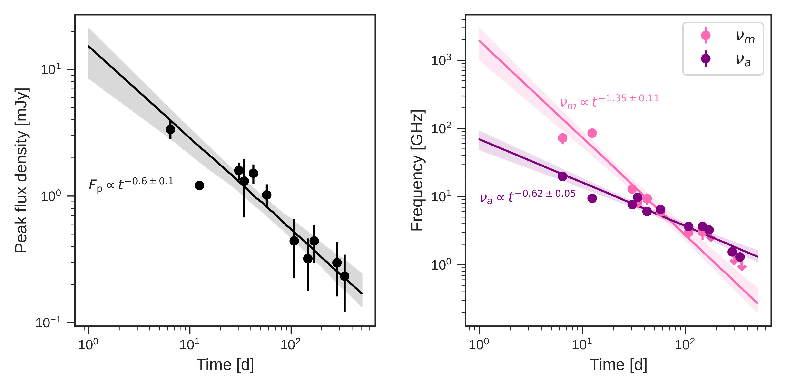
图注：The evolution of the peak synchrotron flux density (left) and the synchrotron critical frequencies $\nu_a$ and $\nu_m$ (right). The shaded regions show $1\sigma$ confidence intervals from an MCMC power-law fit.
对应解读：对应“建议重点查看的图表”第3项和“关键图表逐图导读”图3：临界频率、峰值通量随时间演化，以及模型拟合段落中用谱峰演化约束动力学。
入选理由：这张图直接给出峰值同步辐射通量、\(\nu_a\) 和 \(\nu_m\) 的时间演化，并包含 MCMC 幂律拟合的 \(1\sigma\) 置信区间，是把宽频射电数据转化为外激波动力学约束的核心图。它比单纯光变图更直接支撑关于临界频率演化、峰频移动和介质剖面推断的解读。
来源与置信度：\(arxiv_source\)；high；\(arxiv_source\) / \(mnras_template.tex\):figure[6]
Fig05
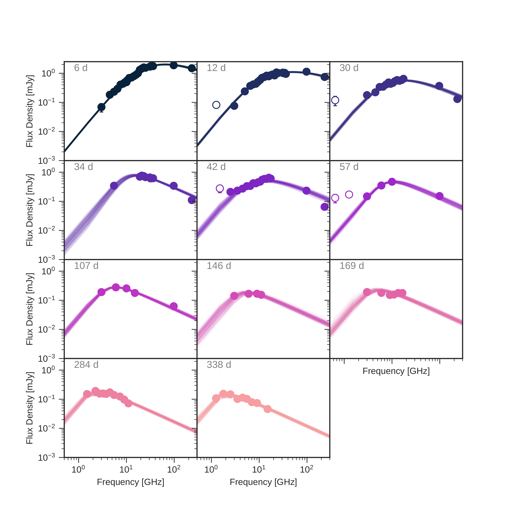
图注：Synchrotron spectral fits to each epoch of broadband spectral observations of GRB 250702B from 0.65--233\,GHz. Open circles indicate measurements excluded from the spectral fitting, likely in excess due to ISS. Note that some of the 5.5, 97.5 and 233\,GHz flux densities have been extrapolated to obtain estimates of the flux density contemporaneous with the other frequencies, as described in Appendix \(\ref{sec:flux_extrapolation}.\)
对应解读：对应“建议重点查看的图表”第2项和“关键图表逐图导读”图2：多历元宽频同步辐射谱、低频自吸收段、高频光学薄段及谱峰移动。
入选理由：这张图展示 0.65--233 GHz 多历元谱拟合，是确认射电发射为平滑峰状同步辐射谱的关键证据。图中还标出因星际闪烁可能偏高而排除的点，并说明部分高频/低频数据经过同时性外推，正好对应日报中提醒读者注意非同时观测和 ISS 污染的读图陷阱。
来源与置信度：\(arxiv_source\)；high；\(arxiv_source\) / \(mnras_template.tex\):figure[5]
Fig01
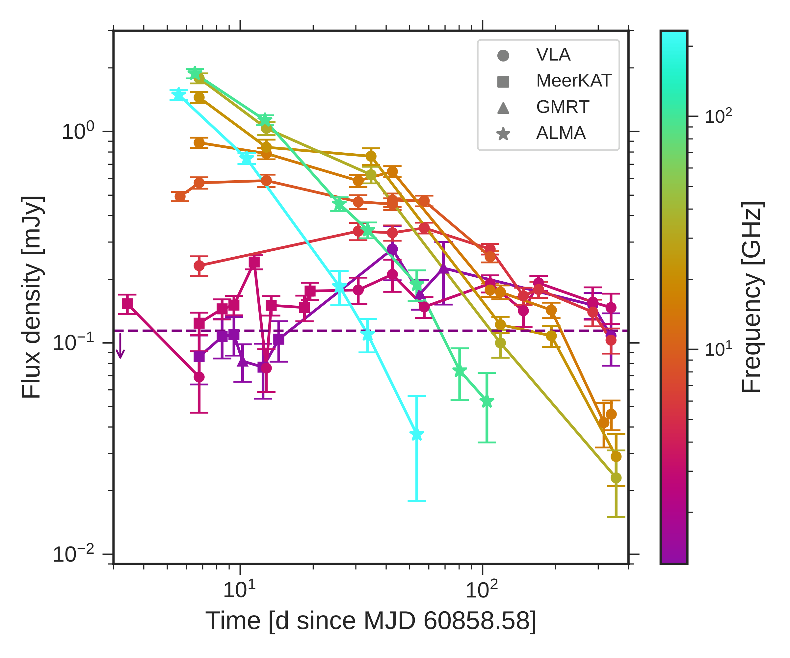
图注：The observed radio light curves of GRB 250702B at 1.25, 3, 6, 10, 15, 22, 33, 97.5, and 233\,GHz. Different markers indicate different observatories: circles are VLA, squares are MeerKAT, triangles are GMRT, and stars are ALMA. The horizontal dashed purple line shows the 3$\sigma$ 1.28\,GHz upper limit on the host galaxy emission from a MeerKAT observation 2000\,d (observer frame) prior to the transient occurring. The higher frequencies ($>20$\,GHz) show a rapid decay, whereas the lower-frequency light curves break at later times.
对应解读：对应“建议重点查看的图表”第1项和“关键图表逐图导读”图1：一年内 0.65--233 GHz 多频射电光变曲线。
入选理由：这张图最直观展示不同射电频率的通量随时间演化，高频快速衰减、低频在更晚时间发生转折，直接支撑“高频早峰、低频晚峰”的叙述。它也能让读者看到低频光变的额外散布，是理解后续 ISS 解释和残差诊断的入口图。
来源与置信度：\(arxiv_source\)；high；\(arxiv_source\) / \(mnras_template.tex\):figure[1]
Fig11
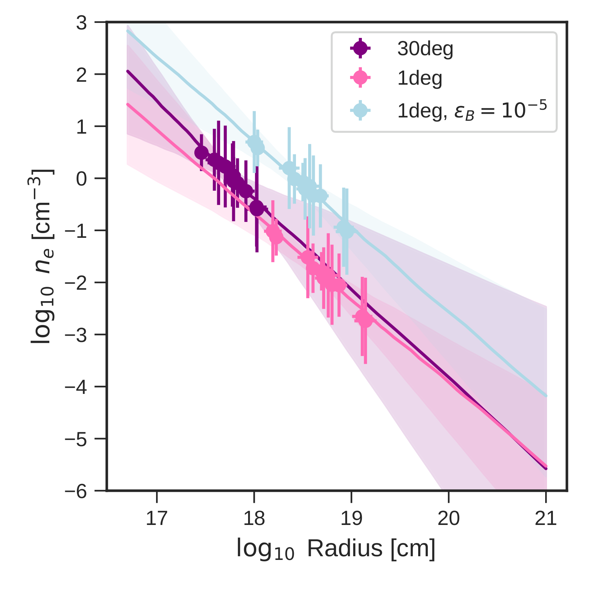
图注：The inferred ambient density with radius based on the equipartition modelling (circles), with a power-law fit (lines) for a narrow jet (pink) and standard jet (purple). A simple power-law fit to these data with an equation of the form $n_e = n_0 (\frac{R}{10^{16}\rm{cm}})^{-k}$ finds $\log_{10}n_0 = 3\pm1; 2.6\pm0.9; 3.9\pm0.9$\,cm$^{-3}$ and $k=1.7\pm0.6; 1.6\pm0.4; 1.6\pm0.4$ for the 30\,deg, 1\,deg, and 1\,deg $\epsilon_B=10^{-5}$ models respectively. In all cases, the ambient density distribution traces $k=1.6$, consistent with a stellar wind environment ($k=2$) or Bondi profile ($k=1.5$), but inconsistent with a flat $k=0$ interstellar medium environment.
对应解读：对应“建议重点查看的图表”第3项和详细解读中的关键结果：外介质密度 \(n_e\propto R^{-k}\)，且 \(k\simeq1.5-2\)。
入选理由：这张图直接把等能量分析得到的环境密度随半径变化画出，并给出窄喷流和标准喷流模型下的幂律拟合。图注明确列出 \(k\approx1.6\)，说明其与风状介质或 Bondi 剖面相容、与均匀 ISM 不相容，因此是支撑环境结构结论的最强候选图。
来源与置信度：\(arxiv_source\)；high；\(arxiv_source\) / \(mnras_template.tex\):figure[11]
Fig10
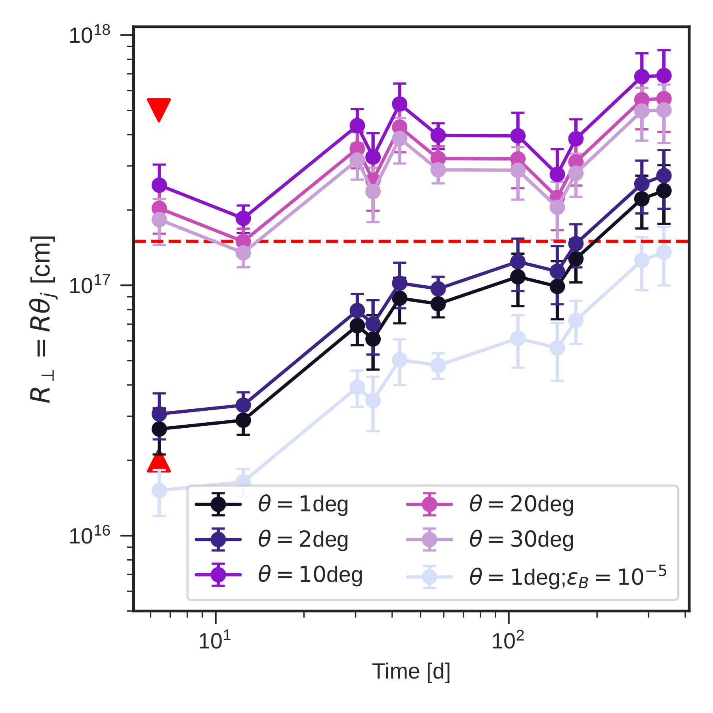
图注：The estimated blastwave image size, $R_{\perp}$, for the different models considered in the equipartition analysis compared to the upper and lower limits on the blastwave image size required by the detection of ISS at early times (red inverted and downward triangles, respectively). The dashed red line shows the approximate average radius of the blastwave image obtained from the variability detected at 3\,GHz.
对应解读：对应“建议重点查看的图表”第5项和“关键图表逐图导读”图4：闪烁调制诊断、源角尺寸/图像尺寸约束。
入选理由：这张图把不同等能量模型预测的爆波图像尺寸 \(R_\perp\) 与早期 ISS 给出的上下限直接比较，正好支撑日报中 \(1.2\times10^{16}\lesssim R_\perp\lesssim5\times10^{17}\\,\mathrm{cm}\) 的尺寸约束。相比只显示低频残差的图，它更直接连接 ISS 观测与物理尺寸约束。
来源与置信度：\(arxiv_source\)；high；\(arxiv_source\) / \(mnras_template.tex\):figure[10]
Fig09
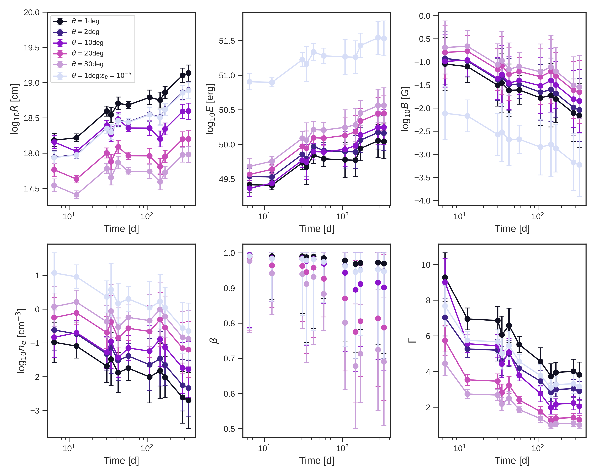
图注：Inferred parameters of the jet and its environment from equipartition. We show six different sets of model parameters for different assumed jet geometries and shock microphysics. Where unspecified, we assume fiducial values of $\epsilon_e=0.1$ and $\epsilon_B=0.01$
对应解读：对应“建议重点查看的图表”第6项和模型拟合段落：不同喷流几何、微物理假设下的喷流及环境参数退化。
入选理由：这张图汇总等能量分析推断出的喷流和环境参数，并比较不同假设的喷流几何与微物理参数，是理解宽角低速解、窄角解以及能量/环境参数退化的主要图。虽然图注未明确写出两个岛状置信区间，但它是候选图中最贴近喷流参数空间与模型退化讨论的一张。
来源与置信度：\(arxiv_source\)；high；\(arxiv_source\) / \(mnras_template.tex\):figure[9]
强相关工作
同一事件 GRB 250702B 的后续论文、观测通告和多波段分析应优先检索，关键词包括 “GRB 250702B radio afterglow”、“GRB 250702B transient”、“GRB 250702B TDE”、“GRB 250702B jet”。由于这是 \(2026\) 年新源，目前最可靠的入口是本文 arXiv 页面及其引用链；若要找同一事件的 GCN 或 ATel，需要用事件名在官方通告系统中检索，而不应仅凭记忆填写链接。
同类工作方面，应把本文放在相对论潮汐瓦解事件和伽马暴射电余辉两条脉络中读。Swift J1644+57 是相对论 TDE 的原型，展示了长时标高能活动与强射电喷流；经典 GRB 余辉理论则提供了 \(k=0\) 与 \(k=2\) 环境下的同步辐射标度。与本文存在张力或可比较的观点包括：低频起伏是否一定是星际闪烁，宽角低速喷流是否可由普通长 GRB 产生，以及超大质量黑洞 TDE 是否真的因时标被排除。检索关键词可用 “relativistic TDE radio afterglow”, “Swift J1644+57 radio modeling”, “GRB afterglow wind medium”, “interstellar scintillation compact radio transient”, “jet break radio afterglow”。
同一事件 / 同类源线索：
相似工作：
基础理论 / 方法工作：
- https://arxiv.org/abs/astro-ph/9709273
- https://arxiv.org/abs/astro-ph/9712005
- https://arxiv.org/abs/astro-ph/9901235
- https://arxiv.org/abs/astro-ph/9912166
相反观点 / 张力线索：
（未提供）
4. Probing Axion Like Particle-Proton Interactions through the Interplay of Dark Matter and Cosmic Rays in Large-Scale Structure
- 来源：arXiv / astro-ph.HE
- 链接：https://arxiv.org/abs/2608.03858v1
- 作者：Wen-Qing Guo
- 评分：novelty 7/10，importance 7/10，relevance 9/10，final 8.70/10
- 推荐理由：利用Fermi-LAT未分辨伽马背景与大尺度结构互相关探测ALP-质子相互作用，明确涉及GeV-PeV宇宙线、伽马射线和间接暗物质搜索，相关性很高。
中文题目：用大尺度结构中暗物质与宇宙线的相互作用探测类轴子粒子—质子耦合
做了什么：这篇论文提出一种间接探测类轴子粒子暗物质的新通道：如果暗物质晕中的类轴子粒子能与宇宙线质子散射并产生弥散 \(\gamma\) 射线，那么这种辐射既跟暗物质分布有关，也跟星系中的宇宙线源有关。作者建立了一个把超新星率、恒星形成率、宇宙线质子注入和扩散逃逸联系起来的半经验模型，并预测 \(z\leq 0.1\) 本地宇宙中 \(Fermi\)-LAT 未分辨 \(\gamma\) 射线背景与 2MRS 星系目录的互相关信号。主要结论是，这类互相关观测有机会覆盖此前实验和天体物理约束尚未触及的类轴子粒子—质子耦合参数空间。
为什么重要：重要性在于它把暗物质间接探测从传统的“暗物质自身湮灭/衰变”扩展到“暗物质与另一个真实存在的天体物理场相互作用”。宇宙线不是均匀背景，而是与星系形成、超新星活动和大尺度结构相关；因此暗物质密度场与宇宙线场的乘积会在 \(\gamma\) 射线天空中留下可与星系巡天互相关的模板。这为类轴子粒子这类低质量、弱耦合候选体提供了不同于实验室和恒星冷却约束的宇宙学探针。
理论 / 观测 / 仪器方法价值：理论价值是给出一个可推广框架：任意暗物质候选体若与宇宙线、辐射场、气体或其他天体物理场发生可观相互作用，都可写成一个“暗物质场 \(\times\) 天体物理场”的发射率，并通过大尺度结构互相关来检验。观测价值是把 \(Fermi\)-LAT 的未分辨 \(\gamma\) 射线背景和 2MRS 这类低红移星系分布结合起来，降低银河前景和各向同性背景的混淆。方法价值是构建了从恒星形成率到宇宙线稳态密度、再到角功率谱或互相关信号的可计算管线。
为什么应该关注：如果你关心暗物质间接探测，这篇文章值得看，因为它提醒我们：非零信号不一定来自 \(\rho_{\rm DM}^2\) 型湮灭，也可能来自 \(\rho_{\rm DM} n_{\rm CR}\) 型散射。如果你做 \(\gamma\) 射线背景、星系互相关或宇宙线传播，这篇文章提供了一个把这些主题连接起来的具体例子。即使最终没有探测到信号，这个框架也能把 \(Fermi\)-LAT 与星系巡天数据转化为类轴子粒子—强子相互作用的新约束。
展开详细解读：文章讲解、背景、理论、重点章节、图表与相关工作
文章详细讲解
科学问题：论文关心的是类轴子粒子暗物质是否能通过与宇宙线质子的相互作用产生可观测的弥散 \(\gamma\) 射线。传统类轴子粒子搜索常集中于光子耦合 \(g_{a\gamma}\)、电子耦合或核子耦合导致的恒星冷却、实验室转化和宇宙学效应；而这篇文章把重点放在类轴子粒子—质子相互作用上，并且不直接寻找单个源，而是寻找与本地大尺度结构相关的未分辨背景信号。
作者怎么做：作者建立了一个“自下而上”的宇宙线质子模型。核心思想是星系中的恒星形成率决定核心坍缩超新星率，超新星激波给宇宙线提供能量注入，稳态宇宙线密度再由注入和扩散逃逸之间的平衡决定。然后，在每个暗物质晕中，把类轴子粒子暗物质密度 \(\rho_a\) 与宇宙线质子数密度 \(n_p\) 相乘，卷积散射截面和二次 \(\gamma\) 射线产额，得到晕的 \(\gamma\) 射线发射率。最后利用低红移 \(z\leq 0.1\) 的 2MRS 星系分布作为大尺度结构示踪物，预测 \(Fermi\)-LAT 未分辨 \(\gamma\) 射线背景与星系目录的互相关可探测性。
关键结果：论文的主要结果不是报告已经探测到某个信号，而是给出灵敏度预报和参数空间覆盖。它表明，未分辨 \(\gamma\) 射线背景—星系互相关可以对广泛类轴子粒子质量 \(m_a\) 和类轴子粒子—质子耦合强度施加约束，并在某些区间进入此前约束较弱或尚未覆盖的区域。这一点来自互相关方法的两个优势：一是它使用空间分布信息而不仅是总强度；二是本地星系目录能提高与暗物质晕和宇宙线源共址结构的匹配度。
局限和下一步：主要不确定性来自宇宙线宇宙学分布，而不是 \(Fermi\)-LAT 数据本身。把宇宙线注入简单联系到恒星形成率是合理的一阶近似，但不同星系的磁场、扩散系数、风逃逸、星暴环境和活动星系核贡献都可能改变 \(n_p\)。此外，未分辨 \(\gamma\) 射线背景中有大量常规天体物理源，如耀变体、星形成星系和毫秒脉冲星；它们与星系目录也会互相关，因此必须通过能谱、红移分布和角尺度依赖进行区分。下一步应包括更真实的星系类型依赖宇宙线模型、与现有 \(Fermi\) 互相关数据的联合似然、以及和未来 MeV–TeV 巡天或更深红移星系样本的联合分析。
关键结果是怎么做出来的
这篇论文的证据链从样本和可观测量选择开始。作者选择的观测对象是 \(Fermi\)-LAT 测到的未分辨 \(\gamma\) 射线背景，而不是已解析点源；结构示踪物是 2MRS 星系目录，红移范围限制在本地宇宙 \(z\leq 0.1\)。这个选择很关键：低红移降低了宇宙线模型和 \(\gamma\) 射线吸收的不确定性，也使星系目录对实际暗物质晕分布的追踪更直接。样本量不是以“事件数”呈现，而是以天空像素、能量 bin、角尺度 multipole 或角相关函数 bin 的统计量进入互相关预测。
核心统计量可以理解为 \(\gamma\) 射线强度图 \(I_\gamma(\hat{\boldsymbol n},E)\) 与星系过密度图 \(\delta_g(\hat{\boldsymbol n})\) 的互相关，常用形式是角功率谱 \(C_\ell^{\gamma g}\) 或实空间相关函数 \(w^{\gamma g}(\theta)\)。若类轴子粒子—质子散射存在，信号的空间模板由 \(\rho_a n_p\) 的三维分布投影而来；若没有该相互作用，则该分量为零，只剩常规 \(\gamma\) 射线源与星系目录的互相关以及噪声。论文用预报方式比较信号幅度与 \(Fermi\)-LAT UGRB 和 2MRS 互相关测量所能达到的误差条，进而转换成耦合参数灵敏度。
显著性或置信度的计算逻辑通常可写成信噪比或 \(\chi^2\) 差异：把每个能量 bin 和角尺度 bin 的预测信号向量与协方差矩阵相乘求和。论文关心的是在不同 \(m_a\) 和耦合参数下，预测的 \(C_\ell^{\gamma g}\) 是否超过观测不确定度，或在无信号假设下可排除到何种强度。支持结论的关键图表应包括：类轴子粒子参数空间灵敏度曲线、不同能量段的互相关角功率谱、宇宙线质子稳态谱、以及主要天体物理背景和信号的相对贡献。
模型比较方面，真正需要比较的是“含 \(a\)-\(p\) 散射分量”的模型与“只有常规未分辨源”的模型。由于摘要表明这是预报型工作，论文很可能没有声称实际数据中的显著过量，而是给出可探测区域。读者应特别检查作者如何处理常规星形成星系、活动星系核和银河前景残差，因为这些分量可能与 2MRS 星系分布有相似的低红移结构相关性。
主要系统误差集中在宇宙线密度归一化、扩散逃逸时间、晕质量—恒星形成率关系、暗物质晕剖面、2MRS 选择函数和 \(Fermi\)-LAT 前景模型。稳健性检验应关注作者是否改变宇宙线扩散参数、超新星能量注入效率、星形成率标定、能量阈值和角尺度范围，并检查灵敏度曲线是否只在某个高度模型依赖的假设下才进入“新参数空间”。
展开背景、理论、公式、模型、章节和图表导读
背景知识
类轴子粒子是由赝标量场推广出的暗物质候选体，和 QCD 轴子共享许多现象学特征，但质量 \(m_a\) 与耦合强度不必满足 QCD 轴子的固定关系。因此，类轴子粒子参数空间很大，既可通过光子转化、恒星冷却、黑洞超辐射、宇宙微波背景，也可通过核子或电子耦合进行限制。本文关注的类轴子粒子—质子相互作用属于较少被 \(\gamma\) 射线大尺度结构互相关系统利用的方向。
未分辨 \(\gamma\) 射线背景是 \(Fermi\)-LAT 时代的一个核心数据产品。它包含大量无法逐个解析的源，也可能包含暗物质相关辐射。困难在于总强度谱高度混合：耀变体、星形成星系、射电星系、毫秒脉冲星、银河前景残差和潜在新物理都可能贡献相似能段的光子。因此，单看能谱通常退化严重，必须利用各向异性、角功率谱和与外部星系目录的互相关。
2MRS 是本地近红外选星系红移巡天，优势是覆盖全天大部分区域并主要追踪低红移大尺度结构。由于近红外光较好地示踪恒星质量，它也间接示踪暗物质晕和星系环境。对 \(z\leq 0.1\) 的研究而言，2MRS 提供了一个相对浅但覆盖广的结构模板，适合与全天 \(\gamma\) 射线图做互相关。
为什么现在值得重看这个问题：一方面，\(Fermi\)-LAT 多年积累使 UGRB 强度、各向异性和源掩膜处理更成熟；另一方面，暗物质间接探测在经典湮灭截面方向受到强约束后，需要更一般的相互作用通道。把宇宙线当作暗物质“探针束流”是自然想法，因为宇宙线质子能量高、空间分布广，并且在星形成结构中丰富。
一个常见误区是把所有暗物质相关 \(\gamma\) 射线都想象成 \(\rho_{\rm DM}^2\) 型湮灭信号。本文强调的过程更接近 \(\rho_{\rm DM} n_{\rm CR}\) 型双场相互作用，因此它的空间形态不会简单等同于湮灭或衰变。另一个误区是认为互相关能自动消除所有天体物理背景；实际上，凡是与星系分布相关的未分辨源都会进入互相关，关键在于能谱、红移核、角尺度和源族模型能否区分它们。
基础理论 / 方法脉络
从物理图像看，暗物质晕中充满类轴子粒子，星系及其周围环境中存在由超新星和其他加速器产生的宇宙线质子。如果类轴子粒子与质子有非零耦合，那么高能质子穿过暗物质晕时可能发生散射或诱发产生 \(\gamma\) 射线的过程。局部发射率不只取决于暗物质密度，也取决于宇宙线质子的能谱和空间密度。
论文采用的关键近似是宇宙线质子分布可由星形成活动决定。恒星形成率越高，核心坍缩超新星率越高，注入到宇宙线中的功率越大；在稳态下，某个能量的宇宙线数密度由注入率与逃逸时间共同决定。扩散逃逸时间通常随能量降低，因为高能粒子更容易逃出磁化环境。
可观测量是沿视线积分后的 \(\gamma\) 射线强度，以及它与星系表面密度起伏的角互相关。暗物质—宇宙线相互作用的三维发射率投影到天空后，会在星系密集方向增强。与仅看平均 UGRB 强度相比，互相关利用了方向信息，因此对同样强度的信号可更敏感，也更容易与各向同性噪声区分。
模型中的关键退化包括：类轴子粒子—质子耦合强度与宇宙线注入效率可相互补偿；暗物质晕剖面浓度与宇宙线空间扩展也会改变小角尺度功率；星形成率与晕质量关系会影响红移核和质量权重。若宇宙线比假设更集中于星系盘，信号角结构会不同于宇宙线扩展到晕尺度的情况。
观测系统误差主要来自 \(Fermi\)-LAT 银河前景扣除、点源掩膜、能量响应、曝光不均匀和 2MRS 的银河面不完备区。互相关可以降低一些各向同性误差，但不能消除与大尺度结构相关的常规 \(\gamma\) 射线源污染。因此实际分析必须联合拟合多个模板，而不能把所有互相关信号都解释为类轴子粒子。
公式与推导
第一步是写出类轴子粒子暗物质数密度。若类轴子粒子构成全部暗物质，则
其中 \(n_a\) 是数密度，\(\rho_{\rm DM}\) 是暗物质质量密度，\(m_a\) 是类轴子粒子质量。这个式子把天体物理的晕密度与粒子物理质量联系起来；若类轴子粒子只占暗物质的一部分，还需乘以丰度因子。
第二步是给出宇宙线质子的稳态方程。忽略能量损失和再加速时，可用注入与逃逸平衡近似：
其中 \(n_p\) 是单位能量宇宙线质子数密度，\(Q_p\) 是注入率密度，\(t_{\rm esc}\) 是扩散逃逸时间。该近似适用于稳态、扩散主导且碰撞损失不占优的环境。
第三步把宇宙线注入归一化到超新星率。若每次超新星释放能量 \(E_{\rm SN}\)，宇宙线加速效率为 \(\eta_{\rm CR}\)，超新星率为 \(R_{\rm SN}\)，则总注入功率为
在底层模型中，\(R_{\rm SN}\) 又由恒星形成率 \({\rm SFR}\) 标定，因此这个式子决定了星系形成活动如何进入 \(\gamma\) 射线预报。
第四步可写出宇宙线注入谱的常用形式：
其中 \(Q_0\) 由 \(L_{\rm CR}\) 归一化，\(s\) 是注入谱指数，\(E_{p,\max}\) 是最大质子能量，\(E_0\) 是参考能量。谱指数和最大能量会直接影响 GeV 到 PeV 能段的二次 \(\gamma\) 射线产额。
第五步给出扩散逃逸的能量标度。若扩散系数为 \(D(E_p)=D_0(E_p/E_0)^\delta\)，特征尺度为 \(R_{\rm diff}\)，则
这里 \(\delta\) 描述磁湍流导致的刚度依赖。它说明高能宇宙线更快逃逸，因此稳态谱会比注入谱更陡。
第六步是局部 \(\gamma\) 射线发射率。若类轴子粒子—质子相互作用的微分产额写为 \(d\sigma_{ap\rightarrow\gamma}/dE_\gamma\)，则
其中 \(c\) 是相对速度近似为光速时的因子，\(g_{ap}\) 表示类轴子粒子—质子耦合。这个式子是全文物理核心：发射率正比于暗物质密度与宇宙线密度的乘积。
第七步把三维发射率投影为观测强度：
这里 \(H(z)\) 是哈勃参数，\(\chi(z)\) 是共动距离，\(\tau\) 是河外背景光吸收光深。低红移 \(z\leq 0.1\) 时吸收较弱，但能量很高时仍需考虑。
第八步定义与星系的互相关角功率谱。在 Limber 近似下，
其中 \(W_\gamma\) 和 \(W_g\) 分别是 \(\gamma\) 射线与星系投影核，\(P_{\gamma g}\) 是三维交叉功率谱。这个式子把粒子物理信号转化为可与星系目录比较的角统计量。
第九步给出预报灵敏度的信噪比：
其中 \({\rm Cov}_{\ell}\) 包含 \(\gamma\) 射线图噪声、星系 shot noise、宇宙方差和前景残差。给定无信号假设，可由 \(S/N\) 或等价的 \(\Delta\chi^2\) 将结果转换为 \(g_{ap}\) 与 \(m_a\) 平面上的排除曲线。
模型拟合 / 应用方法
这类工作的拟合量通常不是单个 \(\gamma\) 射线光谱点，而是一组按能量和角尺度分箱的互相关统计量，例如 \(C_\ell^{\gamma g}(E_i)\) 或 \(w^{\gamma g}(\theta,E_i)\)。模型参数包括类轴子粒子质量 \(m_a\)、耦合强度 \(g_{ap}\) 或等效截面参数、宇宙线注入效率 \(\eta_{\rm CR}\)、谱指数 \(s\)、扩散系数归一化 \(D_0\)、扩散指数 \(\delta\)、以及星形成率—晕质量关系的参数。
似然函数通常可取高斯形式，把观测互相关向量与模型向量之差用协方差矩阵加权。若是预报，则用假想数据或无信号基准计算 Fisher 信息或 \(\Delta\chi^2\)。实际应用时还应加入常规天体物理模板：星形成星系、耀变体、射电星系和银河前景残差各自有能谱和红移核，不能只拟合一个暗物质模板。
参数退化很重要。\(g_{ap}\) 增大会提高散射发射率，\(\eta_{\rm CR}\) 或超新星率归一化增大也会提高同样的信号幅度；因此若没有独立宇宙线约束，耦合上限会随宇宙线模型系统移动。\(D_0\) 和 \(R_{\rm diff}\) 改变宇宙线在晕内的空间扩展，从而影响小角尺度功率；这可能与暗物质晕浓度、卫星星系贡献和星系偏置发生退化。
残差诊断应看三个方向。第一，能谱残差是否具有类轴子粒子—质子散射预期的能量形状，而不是常规 \(\pi^0\) 衰变或耀变体谱的简单变体。第二，角尺度残差是否与低红移结构投影一致。第三，不同星系子样本，例如高恒星形成率星系与被动星系，是否呈现符合宇宙线源模型的差异。
模型可能失败的地方包括：宇宙线不是稳态扩散而是由星系风主导逃逸；低质量晕中的宇宙线 confinement 被高估；活动星系核对高能宇宙线注入贡献显著但未纳入；2MRS 对银河面附近结构不完备导致大尺度模式偏差；以及 \(Fermi\)-LAT 前景模型在低纬残留产生伪互相关。一个稳健分析应对这些系统误差引入 nuisance 参数并边缘化，而不是把它们固定在单一基准模型。
重点章节 / 结果段落怎么读
数据/样本部分应首先看作者如何定义 UGRB 与 2MRS 互相关：使用哪些能量范围、掩膜、红移上限 \(z\leq 0.1\)、星系权重和选择函数。这里决定了信号红移核和系统误差来源，也决定了结果是否主要来自少数近邻大结构。
宇宙线建模部分是全文的关键方法段落。读者应检查恒星形成率如何转化为超新星率，超新星能量注入效率如何设定，宇宙线注入谱和扩散逃逸时间的参数取值是否与银河系和星形成星系观测相容。
类轴子粒子—质子散射和 \(\gamma\) 射线发射率部分需要重点读。这里应明确截面或耦合如何进入发射率，\(m_a\) 如何影响阈值、相空间或产额，以及作者是否考虑了所有相关能段的吸收和能量重分布。
互相关预报与统计部分要看信号如何投影到 \(C_\ell^{\gamma g}\) 或角相关函数，以及协方差矩阵包含哪些噪声项。若协方差低估了前景残差或常规源互相关，灵敏度曲线会过于乐观。
结果和讨论部分应关注参数空间图。读者应比较本文预测约束与既有实验室、恒星冷却、超新星和宇宙学约束之间的相对位置，并看作者是否清楚标注哪些区域是“此前未探索”而不是已经被其他核子耦合约束排除。
附录或稳健性检验若存在，应优先看不同宇宙线传播参数、不同星形成率标定、不同晕模型和不同能量/角尺度切割下结果的变化。对预报论文而言，稳健性比基准曲线本身更能说明方法未来是否可用。
建议重点查看的图表
-
类轴子粒子参数空间灵敏度图：看横轴是否为 \(m_a\)，纵轴是否为 \(g_{ap}\) 或等效截面；重点比较本文预报曲线与现有约束曲线的交叉区域。
-
宇宙线质子谱或宇宙线功率归一化图：看不同星形成率、晕质量或扩散参数下 \(n_p(E_p)\) 的变化，判断 \(\gamma\) 射线信号是否由少数高宇宙线密度系统主导。
-
预测的 UGRB—2MRS 互相关角功率谱：看 \(C_\ell^{\gamma g}\) 随 \(\ell\) 的形状，区分大尺度两晕项和小尺度一晕项；误差条是否包含 shot noise 和前景系统。
-
能谱贡献图：看信号在 GeV、TeV 或更高能段的峰值位置，是否与 \(Fermi\)-LAT 真实灵敏能段匹配；若主要贡献在 LAT 不敏感或前景强的能段，应谨慎。
-
不同红移或晕质量贡献分解：看 \(z\leq 0.1\) 的贡献是否集中于极近宇宙，是否依赖少数局部超星系团结构。
-
系统误差或稳健性表：看改变 \(D_0\)、\(\delta\)、\(\eta_{\rm CR}\)、星形成率标定和暗物质剖面后，耦合上限移动多少。
-
背景源比较图：看常规星形成星系、耀变体和暗物质—宇宙线散射信号在能谱和角功率上的可分性。
-
协方差或信噪比分解诊断：看灵敏度主要来自哪些 \(\ell\) 和能量 bin，避免结论由一个系统误差最难控制的区域驱动。
关键图表逐图导读
图 1：建议把参数空间图作为第一优先级阅读。横轴通常应是类轴子粒子质量 \(m_a\)，纵轴是类轴子粒子—质子耦合 \(g_{ap}\) 或等效散射截面。模型线可能包括本文 UGRB–2MRS 互相关预报灵敏度，以及已有天体物理或实验约束。读图陷阱是不要把“预报可达”误读为“已排除”；还要看曲线是否基于基准宇宙线模型。
图 2：宇宙线建模图通常会显示 \(n_p(E_p)\)、\(Q_p(E_p)\) 或宇宙线光度随星形成率/晕质量的变化。横轴多为质子能量 \(E_p\)，纵轴为注入率或稳态密度。关键是看高能端是否由扩散逃逸明显压低，以及 GeV–PeV 范围内的谱指数是否合理。陷阱是归一化不确定性可能比统计误差更大。
图 3：互相关角功率谱图应以 multipole \(\ell\) 为横轴，\(C_\ell^{\gamma g}\) 或带权 \(\ell(\ell+1)C_\ell/(2\pi)\) 为纵轴。数据点若为现有测量则应带误差条；若为预报则会有灵敏度带。模型线可能分解为暗物质—宇宙线信号、常规源背景和总和。读图时要看信号集中在大尺度还是小尺度，因为这关系到银河前景和点源掩膜系统。
图 4：能谱图通常横轴为 \(E_\gamma\)，纵轴为强度、互相关幅度或每对数能量贡献。关键结论是信号峰值是否落在 \(Fermi\)-LAT 最可靠的能段，以及不同 \(m_a\) 是否导致可区分的谱形变化。陷阱是若只给总强度而不显示背景模板，无法判断互相关能否真正分辨新物理。
图 5：红移核或晕质量贡献图应显示 \(dC_\ell/dz\)、\(dI_\gamma/dz\) 或按晕质量分解的贡献。若大部分信号来自 \(z<0.03\) 的局部结构，那么样本方差和 2MRS 局部不完备会很重要；若来自更宽红移范围，则 2MRS 的浅层性质可能限制模板匹配。
图 6：稳健性图或表应列出不同宇宙线传播和星形成率假设下的灵敏度曲线。读者要关注的是曲线平移是否达到数量级。如果系统变化导致 \(g_{ap}\) 上限移动很大，那么本文方法的主要价值是提出通道，而不是立即给出精确约束。
论文原图 / 可嵌入图片
Fig03
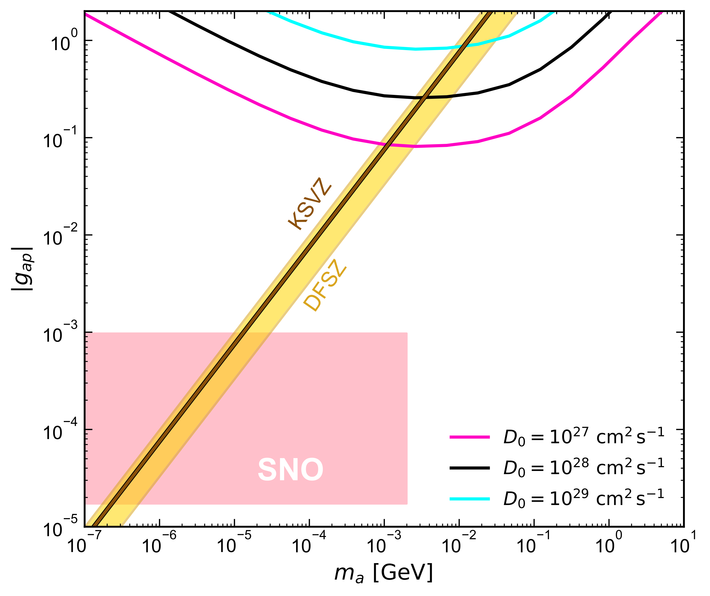
图注：Forecasted $2\sigma$ ($95.4\%$) sensitivity to the ALP-proton coupling $g_{\rm ap}$ as a function of the ALP DM mass $m_{a}$. Curves correspond to different assumptions for the cosmic-ray diffusion coefficient $D_{0}$, with the solid black curve ($D_{0} = 10^{28}\,{\rm cm^{2}s^{-1}}$) representing the fiducial model. The projected sensitivity is compared with the existing constraint from the Sudbury Neutrino Observatory (SNO) \(\cite{Bhusal:2020bvx}.\) The yellow band indicates the parameter space predicted by representative QCD axion models.
对应解读：对应“建议重点查看的图表”第1项和“关键图表逐图导读”图1：类轴子粒子参数空间灵敏度图；也对应模型拟合段落中关于用互相关统计量预报对 \(g_ap\)–\(m_a\) 参数空间的约束。
入选理由：这是本文核心结果图，横轴为 ALP 暗物质质量 \(m_a\)，纵轴为 ALP–质子耦合 \(g_ap\) 的 95.4% 灵敏度，并直接比较不同宇宙线扩散系数 D0、SNO 现有约束和 QCD axion 代表性参数带。它最能支撑日报中关于“预报可达而非已排除”“宇宙线模型系统误差会移动耦合上限”“覆盖此前较弱约束区域”的解读。
来源与置信度：\(arxiv_source\)；high；\(arxiv_source\) / main.tex:figure[3]
Fig02
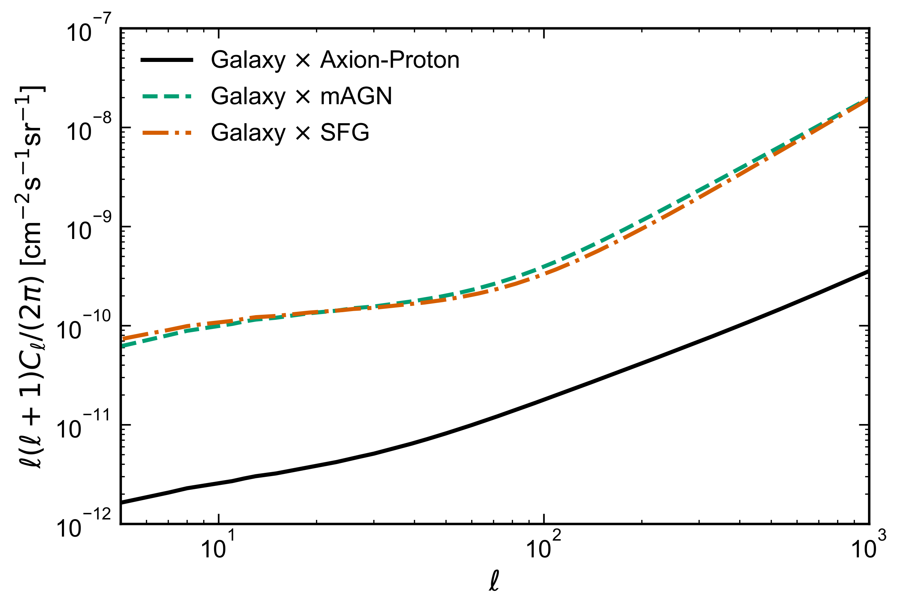
图注：Predicted cross-angular power spectra between the 2MRS galaxy catalog and $\gamma$-ray emission from ALP-CR proton interactions (solid black; $m_{a}=1\,{\rm MeV}$ and $g_{\rm ap}=1$), unresolved mAGNs (dashed green), and unresolved SFGs (dash-dotted brown) in the $(1.0, 1.7)\,{\rm GeV}$ energy bin.
对应解读：对应“建议重点查看的图表”第3项和“关键图表逐图导读”图3：预测的 UGRB—2MRS 互相关角功率谱；也对应模型拟合段落中 C_ell^{gamma g}(E_i) 的核心观测量。
入选理由：该图直接展示 2MRS 星系目录与 ALP–宇宙线质子诱导伽马射线的互相关角功率谱，并与未分辨 mAGN 和 SFG 背景源比较。它是判断信号角尺度形状、与常规天体物理背景可分性以及互相关方法科学可行性的关键图，比单纯参数空间图更能说明模型如何映射到实际可观测量。
来源与置信度：\(arxiv_source\)；high；\(arxiv_source\) / main.tex:figure[2]
Fig01
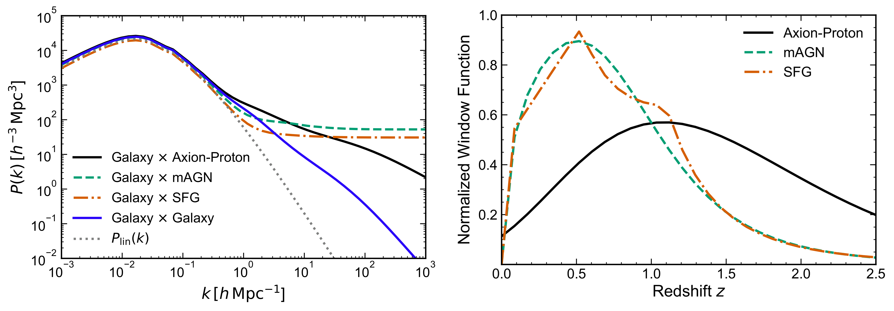
图注：\(\textit{Left}\): Three-dimensional power spectra at $z=0.05$. The solid blue line shows the galaxy auto-power spectrum, while the solid black, dashed green, and dash-dotted brown lines show the galaxy-$\gamma$-ray cross-power spectra for ALP-CR proton-induced emission, unresolved mAGNs, and unresolved SFGs, respectively, in the $(1.0,\,1.7)\,\mathrm{GeV}$ energy bin. The linear matter power spectrum at the same redshift is shown by the gray dotted line. \(\textit{Right}\): Normalized window functions of the different $\gamma$-ray components as a function of redshift in the $(1.0,\,1.7)\,\mathrm{GeV}$ energy bin. The solid black, dashed green, and dash-dotted brown curves correspond to ALP-CR proton-induced emission with $m_a=1\,\mathrm{MeV}$, unresolved mAGNs, and unresolved SFGs, respectively.
对应解读：对应“建议重点查看的图表”第5项和第7项，以及“关键图表逐图导读”图5：红移核或贡献分解；同时支撑背景源比较和大尺度结构互相关建模段落。
入选理由：左面板给出 z=0.05 处的三维 galaxy–gamma cross-power，与星系自功率谱和线性物质功率谱对比；右面板给出不同伽马射线成分的归一化红移窗口函数。它能说明 ALP–CR 信号、mAGN 和 SFG 在空间聚类与红移核上的差异，是理解 2MRS 浅层低红移模板为何有效、以及常规背景源如何混入互相关信号的重要诊断图。
来源与置信度：\(arxiv_source\)；high；\(arxiv_source\) / main.tex:figure[1]
强相关工作
这篇工作与 UGRB 各向异性和 UGRB—星系巡天互相关研究直接相关。同类研究通常用 \(Fermi\)-LAT \(\gamma\) 射线图与 2MASS、2MRS、WISE、SDSS、NVSS 或弱透镜图做互相关，以约束未分辨星系族和暗物质湮灭。建议检索关键词包括 “Fermi unresolved gamma-ray background cross-correlation 2MASS 2MRS”, “extragalactic gamma-ray background anisotropy dark matter”, “gamma-ray large-scale structure cross correlation”。
在粒子物理方面，本文属于类轴子粒子核子耦合与暗物质间接探测的交叉方向。相关基础文献包括类轴子粒子综述、QCD 轴子和 ALP 宇宙学、恒星冷却约束、超新星 \(1987A\) 约束以及实验室轴子搜索。建议检索 “axion-like particle proton coupling”, “ALP nucleon coupling astrophysical constraints”, “cosmic rays dark matter scattering gamma rays”。
需要注意的潜在张力来自常规天体物理解释。星形成星系本身会通过宇宙线质子与气体的 \(pp\) 碰撞产生 \(\pi^0\) 衰变 \(\gamma\) 射线，并且这些星系当然与 2MRS 星系分布相关；耀变体和射电星系也会贡献 UGRB 和各向异性。因此，与其把互相关过量直接归因于类轴子粒子，实际研究应进行多模板联合拟合。相反观点或竞争模型的关键词包括 “star-forming galaxies contribution to isotropic gamma-ray background”, “blazars unresolved gamma-ray background anisotropy”, “millisecond pulsars gamma-ray background”。
同一事件 / 同类源线索：
相似工作：
基础理论 / 方法工作：
相反观点 / 张力线索：
5. EP241113a: dissipative photospheric emission from a dirty fireball
- 来源：arXiv / astro-ph.HE
- 链接：https://arxiv.org/abs/2608.03043v1
- 作者：Cui-Yuan Dai, Xiang-Yu Wang, Bing Zhang
- 评分：novelty 7/10，importance 7/10，relevance 9/10，final 8.70/10
- 推荐理由：解释Einstein Probe软X射线暂现源EP241113a的低峰值能量和dirty fireball物理，涉及GRB喷流耗散、光球辐射和核心坍缩发动机，相关性高。
中文题目：EP241113a：脏火球中的耗散光球辐射
做了什么：这篇 Letter 试图解释 Einstein Probe 发现的软 X 射线暂现源 EP241113a：它的各向同性等效能量 \(E_{\gamma,{\rm iso}}\sim 10^{51}\,{\rm erg}\) 像经典伽马暴，但谱峰 \(E_{\rm p}\lesssim 1\,{\rm keV}\) 低得异常，偏离 \(E_{\rm p}\)–\(E_{\gamma,{\rm iso}}\) 的 Amati 关系超过 \(3\sigma\)。作者提出，EP241113a 不是低能爆发，而是一个重子污染很强、洛伦兹因子只有 \(\Gamma\sim 20\) 的“脏火球”；低 \(\Gamma\) 使内耗散发生在光球以下，辐射在较低温度处定谱峰，再加上较弱的多普勒提升，最终把峰值推到软 X 射线。论文还进一步讨论这种低 \(\Gamma\) 喷流可能更适合由超吸积盘中的 \(\nu\bar\nu\) 湮灭驱动，而不是更干净的 Blandford–Znajek 磁喷流。
为什么重要：EP241113a 挑战了“高能量伽马暴就应有较高 \(E_{\rm p}\)”的经验图像。若它确实是高能量但低 \(\Gamma\) 的脏喷流，说明宽视场软 X 射线巡天正在打开一个经典硬伽马暴触发器不敏感的相空间：高重子载荷、低峰能、光球主导的相对论爆发现象。
理论 / 观测 / 仪器方法价值：理论上，本文把 Amati 关系离群点、低 \(\Gamma\) 喷流、光球下耗散和中心引擎重子污染联系起来；观测上，它给出了用 \(E_{\rm p}\)、\(E_{\gamma,{\rm iso}}\)、余辉平台亮度、喷流破缺缺失等量共同诊断脏火球的框架；方法上，它提醒读者不要只用经验相关式给软 X 射线暂现源分类，而要同时检查光球半径、内激波半径和热化半径的相对位置。
为什么应该关注：如果你关心伽马暴喷流形成、塌缩星中心引擎或 Einstein Probe 这类软 X 射线巡天的科学产出，这篇文章值得看：它把一个看似“太软”的暂现源解释为经典长暴族群的低 \(\Gamma\)、高重子载荷端点，并给出了可被后续软 X 射线样本、余辉监测和多波段谱演化检验的物理预言。
展开详细解读：文章讲解、背景、理论、重点章节、图表与相关工作
文章详细讲解
科学问题：EP241113a 的核心异常不是“能量小”，而是“能量不小但谱峰极低”。按照摘要给出的量级，它的 \(E_{\gamma,{\rm iso}}\sim 10^{51}\,{\rm erg}\)，已经进入经典伽马暴的能量范围；但 \(E_{\rm p}\lesssim 1\,{\rm keV}\)，远低于同等能量伽马暴在 Amati 关系上通常对应的几十到数百 \({\rm keV}\)。同时，余辉平台亮度很低，且截至最新观测没有明显喷流破缺。这组特征要求一个模型同时解释 prompt 谱峰、总能量、低余辉亮度和几何/动力学约束。
作者怎么做：论文提出“耗散光球辐射来自脏火球”的解释。所谓脏火球，是总能量接近经典伽马暴，但重子载荷更高、终端洛伦兹因子更低的相对论喷流。作者采用的关键物理图像是：当 \(\Gamma\) 降到 \(\sim 20\) 时，光球半径 \(R_{\rm ph}\) 会向外移动，而典型内激波或内部耗散半径 \(R_{\rm IS}\) 会向内移动，二者相对顺序改变，导致能量释放发生在光学厚的光球以下。辐射在扩散和不完全热化过程中定谱峰，因此观测到的是低温、弱多普勒提升后的软 X 射线峰。
关键结果：文章的主要结论是，EP241113a 的低 \(E_{\rm p}\) 不需要把爆发能量压低到普通 X 射线闪的水平，而可以由低 \(\Gamma\) 造成的光球下耗散自然给出。随着 \(\Gamma\) 下降，热化半径 \(R_{\rm th}\) 也向外移动，谱峰建立处的共动辐射温度 \(T'\) 变低；观测谱峰近似随 \(\Gamma kT'\) 缩放，因而会从硬 X 射线/软伽马射线降到 \(\lesssim 1\,{\rm keV}\)。这为 EP241113a 偏离 Amati 关系超过 \(3\sigma\) 提供了一个物理原因，而不是把它简单视为经验关系散布中的偶然点。
局限和下一步：摘要显示这是一篇 Letter，重点在物理解释和量级论证，而不是对完整辐射转移、喷流角结构、余辉动力学和中心引擎演化进行端到端数值拟合。低 \(\Gamma\) 的推断仍会与喷流开角、外介质密度、辐射效率、红移和谱模型选择存在退化。下一步最关键的是扩大 EP241113a 类事件样本，检查是否存在系统性的低 \(E_{\rm p}\)、较高 \(E_{\gamma,{\rm iso}}\)、低余辉平台亮度和弱喷流破缺组合；同时需要用光球辐射转移计算预测可观测谱形、时间演化和偏振特征。
关键结果是怎么做出来的
本文最重要的证据链从 EP241113a 的样本定位开始：它是一个由 Einstein Probe 探测到的软 X 射线暂现源，而非传统 \(\gamma\)-ray 触发器优先发现的硬伽马暴。论文把它放到 \(E_{\rm p}\)–\(E_{\gamma,{\rm iso}}\) 平面上，强调 \(E_{\gamma,{\rm iso}}\sim 10^{51}\,{\rm erg}\) 与经典 GRB 可比，但 \(E_{\rm p}\lesssim 1\,{\rm keV}\) 明显过低。这里的统计判断来自与 Amati 关系及其散布的比较，摘要明确给出偏离超过 \(3\sigma\)，因此该事件不是一个轻微边缘离群点。
事件数方面，这篇文章聚焦单个命名事件 EP241113a，而不是统计样本论文。单事件论证的强度来自多个观测量的联合不寻常性：prompt 的低 \(E_{\rm p}\)、较高 \(E_{\gamma,{\rm iso}}\)、余辉极低平台亮度，以及未见喷流破缺。这些量各自都有模型退化，但组合起来指向低 \(\Gamma\)、高重子载荷和较低外激波辐射效率的可能性。读者应特别检查论文中是否给出红移、能带修正、\(k\)-correction、谱峰上限和能量积分范围，因为这些决定它在 Amati 图上的位置。
模型比较的核心不是复杂贝叶斯模型选择，而是半解析半定量的物理排除：若用普通高 \(\Gamma\) GRB prompt 模型解释，\(E_{\rm p}\) 太低；若把它当低能 X 射线闪，\(E_{\gamma,{\rm iso}}\) 又太高。作者的替代模型要求 \(R_{\rm IS} 显著性和置信度最直接体现在 Amati 关系的 \(>3\sigma\) 离群声明上。这里应关注作者采用的是线性空间还是对数空间拟合、内禀散布如何处理、是否使用同一宇宙学和能带定义、以及 \(E_{\rm p}\) 是测量值还是上限。若 \(E_{\rm p}\) 只有上限，偏离显著性通常需要用截断或极限值处理，而不能简单把上限当作中心值。 系统误差主要来自四类：第一，软 X 射线仪器能带对谱峰的约束，若谱峰低于或接近探测能带边缘，\(E_{\rm p}\) 可能与吸收柱密度、谱模型低能斜率退化；第二，\(E_{\gamma,{\rm iso}}\) 依赖红移和宽能带外推；第三，余辉平台亮度受微物理参数和外介质密度影响；第四，喷流破缺未见只能给出开角或能量的下限，而不是强测量。好的稳健性检验应展示改变谱模型、能带积分、\(\Gamma\) 和重子载荷参数后，低 \(E_{\rm p}\) 结论是否仍成立。 支撑结论的图表通常应包括：\(E_{\rm p}\)–\(E_{\gamma,{\rm iso}}\) 位置图、半径随 \(\Gamma\) 或喷流参数变化图、预测谱峰随 \(\Gamma\) 变化图、余辉光变曲线及喷流破缺限制图。若这些图中的 EP241113a 始终落在“高能量、低峰能、低 \(\Gamma\)”区域，论文的主张才算连贯。 研究对象 EP241113a 属于软 X 射线暂现源，但它被拿来和伽马暴比较，是因为其释放能量达到 \(E_{\gamma,{\rm iso}}\sim 10^{51}\,{\rm erg}\)。传统长伽马暴通常由塌缩星产生，其 prompt 辐射在几十 \({\rm keV}\) 到 \({\rm MeV}\) 附近达到 \(\nu F_\nu\) 峰值，并伴随从 X 射线到射电的外激波余辉。EP241113a 的奇特之处在于，它在能量上像 GRB，在谱峰上却像极软的 X 射线爆发。 历史上，GRB 领域很早就注意到 \(E_{\rm p}\) 与 \(E_{\gamma,{\rm iso}}\) 之间存在经验相关，即 Amati 关系。这个关系不是精确物理定律，而是包含选择效应、探测阈值、能带限制和样本定义的经验趋势。即便如此，一个事件在该平面上偏离超过 \(3\sigma\) 仍然很有信息量，因为它说明某些基本物理量，如洛伦兹因子、辐射机制、视角或喷流结构，可能不同于主流样本。 “脏火球”是 GRB 理论中的老概念：如果中央引擎释放的总能量很高，但混入太多重子物质，喷流每个重子可分得的能量下降，终端洛伦兹因子 \(\Gamma\) 变低。低 \(\Gamma\) 的直接后果包括光球半径变大、内耗散相对更容易埋在光学厚区、\(\gamma\gamma\) 透明度更高、prompt 峰能偏低以及外激波减速时间和余辉亮度发生改变。因此，一个高能但很软的爆发天然会让人重新考虑脏火球模型。 现在值得重新看这个问题，主要因为 Einstein Probe 这类宽场软 X 射线监测能够发现传统硬 X/伽马仪器漏掉或低效率探测的事件。过去的 GRB 样本很大程度上由触发能带塑造，软而长、峰能低、硬伽马信号弱的事件可能被低估。EP241113a 这样的发现可能不是孤例，而是揭示了塌缩星喷流在重子载荷维度上的连续分布。 该领域常见误区之一是把低 \(E_{\rm p}\) 直接等同于低能量或非相对论爆发。事实上，观测谱峰同时受共动温度、辐射机制、耗散半径、\(\Gamma\)、视角和吸收影响。另一个误区是把 Amati 关系当作分类准则本身；偏离关系的事件并不一定是“错误观测”或“非 GRB”，它可能正是揭示缺失物理的关键样本。 基础物理图像可以从相对论火球开始：中央引擎在很小尺度内注入能量和重子，初始辐射压推动物质加速。若总能量为 \(E\)，重子质量为 \(M_b\)，理想情况下终端洛伦兹因子大约由 \(\eta=E/(M_b c^2)\) 决定。重子越多，\(\eta\) 越小，喷流越“脏”。EP241113a 的解释关键正是把 \(\Gamma\) 放到 \(\sim 20\) 而非典型 GRB 的 \(\gtrsim 100\)。 光球辐射的核心是透明度。喷流在内区光学厚，光子与电子反复散射；当 Thomson 光学深度降到 \(\tau\sim 1\) 时，辐射逃逸，定义光球半径 \(R_{\rm ph}\)。在低 \(\Gamma\) 情况下，同样的喷流光度对应更高的共动粒子密度和更长的有效散射路径，\(R_{\rm ph}\) 增大。若耗散发生在 \(R_{\rm ph}\) 以下，辐射会经历热化、康普顿化和绝热冷却，观测谱峰不再简单等同于非热电子同步辐射峰。 内部耗散半径常用内激波估计：若中心引擎变率时间为 \(\delta t\)，不同壳层在 \(R_{\rm IS}\sim 2\Gamma^2 c\delta t\) 处相撞。这个半径随 \(\Gamma^2\) 增大，所以当 \(\Gamma\) 降低时会迅速向内移动。于是低 \(\Gamma\) 同时让 \(R_{\rm ph}\) 外移、\(R_{\rm IS}\) 内移，促成 \(R_{\rm IS} 本文还涉及热化半径 \(R_{\rm th}\)：谱峰真正被建立的位置通常不是 \(\tau=1\) 的光球，而是光子产生、吸收和康普顿化仍足够有效的更深层区域。若 \(R_{\rm th}\) 外移到温度更低的位置，观测到的 \(E_{\rm p}\) 会下降。观测峰能的量级可理解为 \(E_{\rm p}\sim \Gamma kT'\) 乘以数值因子和红移修正，因此低 \(T'\) 与低 \(\Gamma\) 会叠加降低 \(E_{\rm p}\)。 观测和模型之间存在显著退化。低 \(E_{\rm p}\) 可能来自低 \(\Gamma\)、离轴视角、强绝热冷却、不同辐射机制或谱峰未被完整覆盖；低余辉平台亮度可能来自低外介质密度、低微物理参数或能量注入历史，而不唯一指向脏喷流。因此本文的价值在于提出一个能同时解释 prompt 与余辉异常的统一框架，但最终仍需多波段数据和样本统计来区分。 第一步，从火球的能量加载定义无量纲熵或最大洛伦兹因子： 这里 \(L\) 是喷流各向同性等效光度，\(\dot{M}\) 是重子质量流率，\(c\) 是光速。脏火球对应较大的 \(\dot{M}\)，因此 \(\eta\) 和最终 \(\Gamma\) 较低。 第二步，Thomson 光学深度给出光球条件。对稳态球对称近似的相对论流，常用量级式为： 若饱和后 \(\Gamma\simeq\eta\)，则 \(R_{\rm ph}\propto L\Gamma^{-4}\)。这里 \(\sigma_T\) 是 Thomson 截面，\(m_p\) 是质子质量。该式说明降低 \(\Gamma\) 会强烈推大光球半径。 第三步，内部碰撞或快速磁/湍动耗散的特征半径常由中心引擎变率控制： \(\delta t\) 是喷流壳层的时间结构尺度。与上一式相反，\(R_{\rm IS}\) 随 \(\Gamma\) 降低而变小，因此低 \(\Gamma\) 自然有利于 \(R_{\rm IS} 第四步，光球下耗散的判据可以写成半径比： 在 \(\Gamma\simeq\eta\) 时，该比值对 \(\Gamma\) 极敏感，近似随 \(\Gamma^6\) 缩放。物理含义是：从 \(\Gamma\sim 100\) 降到 \(\Gamma\sim 20\) 不只是轻微改变，而会使耗散区相对光球深度发生质变。 第五步，辐射能量密度与共动温度相连： 其中 \(a\) 是辐射常数，\(T'\) 是共动温度，\(L_{\rm rad}\) 是辐射光度。若谱峰在较大的热化半径 \(R_{\rm th}\) 处建立，则 \(T'\propto R_{\rm th}^{-1/2}\Gamma^{-1/2}\) 的量级下降会降低峰能。 第六步，热性或准热性光球谱的观测峰能可写成： 其中 \(k_B\) 是 Boltzmann 常数，\(z\) 是红移，\(\xi\) 是与谱形有关的数值因子，黑体 \(\nu F_\nu\) 峰通常为几倍 \(k_BT\)。该式把低 \(\Gamma\) 与低 \(T'_{\rm th}\) 直接连接到软 X 射线 \(E_{\rm p}\)。 第七步，观测各向同性等效能量由通量积分给出： 这里 \(d_L\) 是光度距离，\(S_\gamma\) 是观测能带 fluence，\(K\) 是把观测能带换算到源静止系标准能带的修正。EP241113a 的关键是该量达到 \(\sim10^{51}\,{\rm erg}\)，但 \(E_{\rm p}\) 仍低于 \(1\,{\rm keV}\)。 第八步，与 Amati 关系比较可写成对数残差： \(A\) 和 \(B\) 是经验拟合参数，\(\Delta\) 是事件相对关系的偏离。若总散布为 \(\sigma_{\rm tot}\)，显著性可估计为： 摘要中的 \(>3\sigma\) 意味着 EP241113a 的低峰能超过了关系的通常内禀散布和测量误差范围。 第九步，若进一步讨论 \(\nu\bar\nu\) 湮灭驱动，可以用喷流可达到的重子加载参数表示： \(L_{\nu\bar\nu}\) 是湮灭沉积到极区的功率，\(\dot{M}_{\rm jet}\) 是被卷入喷流的重子流率。中微子驱动风提高 \(\dot{M}_{\rm jet}\)，便会把 \(\Gamma_{\rm max}\) 压到 \(\sim20\) 的脏喷流区间。 这类工作的拟合首先发生在 prompt 谱上。需要从 Einstein Probe 及可能的伴随高能仪器数据中拟合谱模型，例如黑体、截止幂律、Band 函数或康普顿化光球谱，以确定 \(E_{\rm p}\) 或其上限。对 EP241113a 而言，关键不是谱参数是否漂亮，而是 \(E_{\rm p}\lesssim1\,{\rm keV}\) 是否在不同谱模型、吸收柱密度和背景处理下都稳定。 第二层拟合是能量和经验关系比较。\(E_{\gamma,{\rm iso}}\) 需要 fluence、红移、宇宙学距离和能带外推，因此会与谱低能斜率、高能尾部是否存在以及 \(K\)-correction 相关。把事件放到 Amati 图上时，理想做法是在对数空间传播 \(E_{\rm p}\) 与 \(E_{\gamma,{\rm iso}}\) 的误差，并加入关系本身的内禀散布，而不是只画一个点。 第三层是物理参数约束。耗散光球模型中的核心参数包括 \(L\)、\(\Gamma\)、\(\eta\)、\(\delta t\)、\(R_{\rm ph}\)、\(R_{\rm IS}\)、\(R_{\rm th}\)、辐射效率和耗散能量分数。许多参数不是独立可测的，因此通常采用量级估算或先验范围来判断是否存在合理解。最强的退化是 \(\Gamma\) 与 \(R_{\rm th}\)、\(L\)、\(z\) 和谱形之间的退化：低 \(E_{\rm p}\) 可以由低 \(\Gamma\) 给出，也可以由更低的共动温度或更强绝热冷却给出。 余辉拟合提供独立诊断。外激波光变依赖动能 \(E_{\rm K}\)、外介质密度 \(n\) 或风参数 \(A_*\)、电子能量分数 \(\epsilon_e\)、磁场能量分数 \(\epsilon_B\)、电子谱指数 \(p\) 和喷流开角 \(\theta_j\)。低平台亮度和未见喷流破缺可以支持低 \(\Gamma\) 或宽喷流，但也可能由低密度、低 \(\epsilon_B\)、能量注入历史或观测时间覆盖不足造成。因此余辉残差应检查是否存在色演化、谱断频穿越或未建模的能量注入。 模型可能失败的地方也很清楚。若后续观测发现很早的喷流破缺、很高的 GeV 光子、强非热高能尾或与 \(\Gamma\sim20\) 不相容的快速变率，那么单纯脏火球光球模型会受压。反过来，若发现更多 EP241113a 类事件都沿着低 \(\Gamma\) 光球预测的 \(E_{\rm p}\)–\(L\)–持续时间趋势分布，这个模型会从单事件解释升级为一个新子族的物理框架。 观测动机和事件性质：读者应先看作者如何定义 EP241113a 的 prompt 能量、谱峰上限和余辉异常。重点不是一般介绍 Einstein Probe，而是确认 \(E_{\gamma,{\rm iso}}\sim10^{51}\,{\rm erg}\)、\(E_{\rm p}\lesssim1\,{\rm keV}\)、低平台亮度和未见喷流破缺这些输入量是否来自一致的数据处理。 Amati 关系离群性：接着看 \(E_{\rm p}\)–\(E_{\gamma,{\rm iso}}\) 平面的比较。应检查作者采用的 Amati 样本、散布、误差条和 \(>3\sigma\) 的定义。若 \(E_{\rm p}\) 是上限，读者要特别注意显著性是否保守。 低 \(\Gamma\) 脏火球的半径排序：这是论文的物理核心。要读清楚 \(R_{\rm ph}\)、\(R_{\rm IS}\)、\(R_{\rm th}\) 如何随 \(\Gamma\) 改变，以及为什么 \(\Gamma\sim20\) 会把耗散从光球外推到光球下。 谱峰形成与耗散光球辐射：这一部分应关注作者如何把较低的共动辐射温度和较弱的洛伦兹 boosting 转换为 \(E_{\rm p}\lesssim1\,{\rm keV}\)。如果有谱形预测，还应检查是否能同时满足观测到的软谱和能量预算。 中心引擎讨论：最后读 \(\nu\bar\nu\) 湮灭与 Blandford–Znajek 机制的比较。这里的结论通常更具解释性而非严格证明性，重点是理解为什么中微子驱动风更容易带来重子污染，从而产生低 \(\Gamma\) 喷流。 \(E_{\rm p}\)–\(E_{\gamma,{\rm iso}}\) 图：看 EP241113a 相对 Amati 关系及 \(1\sigma\)、\(2\sigma\)、\(3\sigma\) 带的位置，尤其注意 \(E_{\rm p}\) 是否是上限箭头。 Prompt 光谱拟合图：看软 X 射线数据点、最佳拟合谱模型、低能吸收处理和残差。关键是 \(E_{\rm p}\lesssim1\,{\rm keV}\) 是否由数据真正约束，而非能带边界造成。 半径随 \(\Gamma\) 变化图：检查 \(R_{\rm ph}\)、\(R_{\rm IS}\)、\(R_{\rm th}\) 的交叉点。若 \(\Gamma\sim20\) 区域满足 \(R_{\rm IS} 预测 \(E_{\rm p}\) 随 \(\Gamma\) 或重子载荷变化图：看是否能在合理 \(L\)、\(\delta t\)、耗散效率下达到 \(\lesssim1\,{\rm keV}\)。 X 射线余辉光变曲线：看平台亮度、衰减指数和是否存在喷流破缺；同时注意观测空窗是否可能漏掉破缺。 参数空间或约束表：检查允许的 \(\Gamma\)、\(L\)、\(R_{\rm ph}\)、\(R_{\rm th}\)、\(\eta\) 是否互相一致，是否需要极端参数。 中心引擎能量预算图或表：若论文给出 \(\nu\bar\nu\) 与 Blandford–Znajek 的比较，应看所需 \(L\)、\(\dot{M}\)、重子加载是否落在塌缩星超吸积盘的合理范围。 图 1：通常应是 \(E_{\rm p}\)–\(E_{\gamma,{\rm iso}}\) 平面。横轴多为 \(E_{\gamma,{\rm iso}}\)，纵轴为 \(E_{\rm p}\)，二者常取对数坐标；灰点或彩色点代表 GRB 样本，实线为 Amati 关系，阴影为内禀散布。EP241113a 应位于 \(E_{\gamma,{\rm iso}}\sim10^{51}\,{\rm erg}\) 但 \(E_{\rm p}\lesssim1\,{\rm keV}\) 的低端。读图陷阱是不要忽略上限箭头和能带外推误差。 图 2：可能展示 prompt 光谱或谱能量分布。横轴为能量，纵轴为计数率、能量通量或 \(\nu F_\nu\)；数据点来自软 X 射线能带，模型线可能是截止幂律、黑体加非热成分或光球谱。应看残差是否系统偏离，尤其是低能吸收是否会把真实谱峰伪装成很低的 \(E_{\rm p}\)。若高能端只有上限，高能尾部不确定性会影响 \(E_{\gamma,{\rm iso}}\)。 图 3：关键理论图应展示 \(R_{\rm ph}\)、\(R_{\rm IS}\)、\(R_{\rm th}\) 随 \(\Gamma\) 或 \(L\) 的变化。横轴若是 \(\Gamma\)，读者应看到 \(R_{\rm ph}\) 随 \(\Gamma\) 下降而迅速增大，\(R_{\rm IS}\) 随 \(\Gamma\) 下降而减小，两条曲线在低 \(\Gamma\) 区域改变相对顺序。模型结论依赖 \(\Gamma\sim20\) 是否位于 \(R_{\rm IS} 图 4：可能是预测 \(E_{\rm p}\) 与 \(\Gamma\)、重子载荷或热化半径的关系。横轴可能为 \(\Gamma\)，纵轴为 \(E_{\rm p}\)；不同线代表不同 \(L\)、\(\delta t\) 或耗散效率。要看模型是否在非极端参数下穿过 \(1\,{\rm keV}\) 附近，而不是只有在精细调参时才能解释 EP241113a。 图 5：余辉光变图应以观测时间为横轴、X 射线 luminosity 或 flux 为纵轴。数据点显示平台和衰减，模型线可能为外激波或能量注入拟合。读者应关注是否真的“无喷流破缺”，还是观测结束时间太早、误差太大或采样太稀疏。低平台亮度若与普通 GRB 样本比较，坐标和红移校正必须一致。 图 6：若有中心引擎示意或参数图，应看 \(\nu\bar\nu\) 湮灭喷流与 Blandford–Znajek 喷流在重子污染上的区别。此类图通常定性强于定量，不能把示意图当作证明；真正要检查的是能量预算和所需 \(\dot{M}_{\rm jet}\) 是否合理。 Fig01 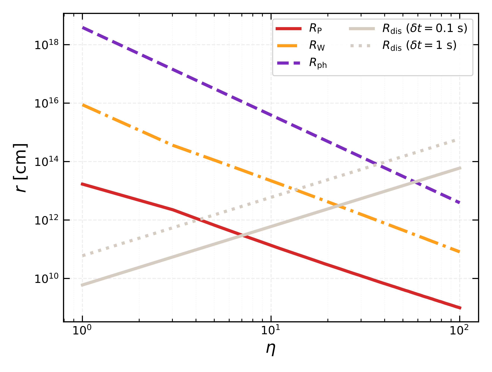展开背景、理论、公式、模型、章节和图表导读
背景知识
基础理论 / 方法脉络
公式与推导
模型拟合 / 应用方法
重点章节 / 结果段落怎么读
建议重点查看的图表
关键图表逐图导读
论文原图 / 可嵌入图片
图注：\textbf{Characteristic radii of a dirty fireball as a function of the dimensionless entropy $\eta$.} Shown are the Planck radius $R_{\rm P}$ (red solid), the Wien radius $R_{\rm W}$ (orange dot--dashed), the Thomson photospheric radius $R_{\rm ph}$ (purple dashed), and the dissipation radius $R_{\rm dis}\sim 2\Gamma_{\rm W}^{2}c\delta t$ for $\delta t=0.1$~s (gray solid) and $1$~s (gray dotted). The fiducial parameters are $f_{\pm}=1$, $\epsilon_{\rm P}=1$, $\epsilon_{\rm W}=0.5$, $\Gamma_{\rm P}=\max(\eta/2,1)$, and $\Gamma_{\rm W}=\eta$. The calculation adopts $\eta_\gamma=0.03$, a fixed X-ray luminosity $L_{\gamma, \rm iso}=10^{50}\ {\rm erg\ s^{-1}}$, and a total jet luminosity $L=L_{\gamma, \rm iso}/\eta_\gamma$.
对应解读：对应“建议重点查看的图表”第3项和“关键图表逐图导读”图3：半径随\(\Gamma\)或维度熵\(\eta\)变化，检查\(R_{\rm ph}\)、内部耗散半径以及热化相关半径的相对顺序。
入选理由：这是论文物理解释的核心图。图中同时给出Planck半径、Wien半径、Thomson光球半径和耗散半径随\(\eta\)的变化，可直接检验低\(\Gamma\sim\eta\sim20\)时耗散是否发生在光球以下，以及热化半径是否外移，从而支撑“脏火球耗散光球导致(E_{\rm p}\lesssim1\,\
m keV)”这一主论点。
来源与置信度：\(arxiv_source\)；high；\(arxiv_source\) / EP241113a-Amati.tex:figure[1]
Fig02
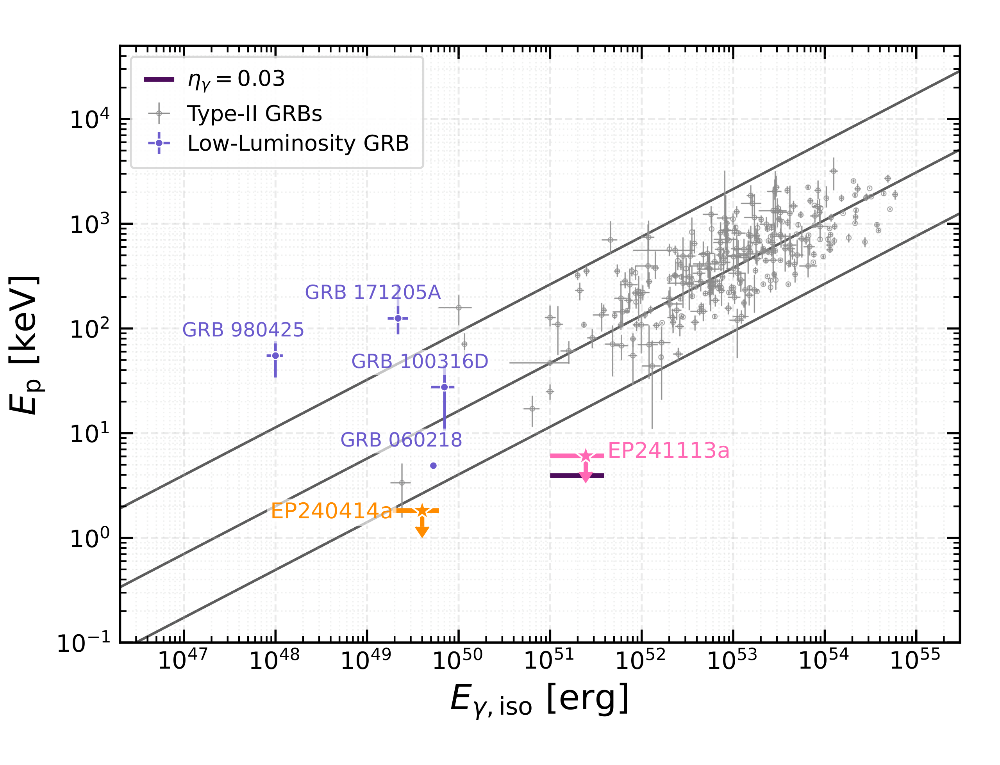
图注：\textbf{\texorpdfstring{$E_{\rm p}$--$E_{\gamma,\rm iso}$}{Ep--Eiso} plane.} The black horizontal line shows the position expected for EP241113a in the dissipative-photosphere scenario. The calculation adopts $f_{\pm}=1$, $\epsilon_{\rm P}=1$, $\epsilon_{\rm W}=0.5$, $\eta=20$, $\Gamma_{\rm P} = \eta / 2$, $\Gamma_{\rm W}=\eta$, and a fixed X-ray luminosity $L_{\gamma, \rm iso}=10^{50}\ {\rm erg\ s^{-1}}$. The total jet luminosity is taken to be $L=L_{\gamma, \rm iso}/\eta_{\gamma}$, with $\eta_{\gamma} = \epsilon_{\rm ph} = 0.03$.
对应解读：对应“建议重点查看的图表”第1项、第4项，以及“关键图表逐图导读”图1和图4：\(E_{\rm p}\)–\(E_{\gamma,{\rm iso}}\)平面及耗散光球模型对EP241113a位置的预测。
入选理由：该图直接展示EP241113a在耗散光球情景下预期落在\(E_{\rm p}\)–(E_{\gamma,\
m iso})平面的位置，是判断低谱峰是否能与(E_{\gamma,\
m iso}\sim10^{51}\,\
m erg)同时成立的关键证据。虽然候选图说明中未明确包含Amati关系的\(1\sigma\)、\(2\sigma\)、\(3\sigma\)带，但它仍是连接观测异常和模型解释的主要图。
来源与置信度：\(arxiv_source\)；high；\(arxiv_source\) / EP241113a-Amati.tex:figure[2]
Fig04
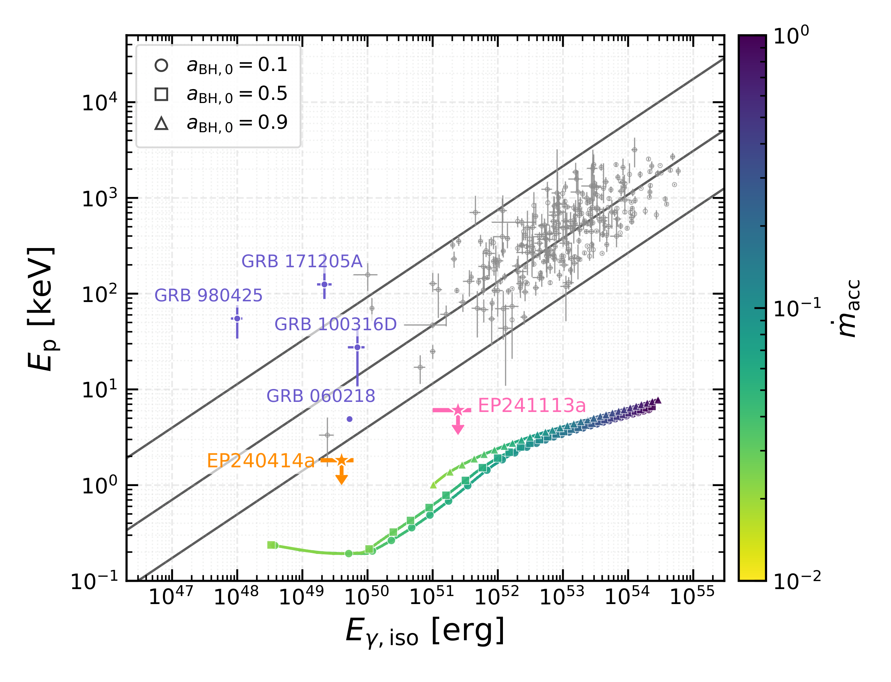
图注：\textbf{\texorpdfstring{$E_{\rm p}$--$E_{\gamma,\rm iso}$}{Ep--Eiso} plane for NDAF $\nu\bar{\nu}$-annihilation jets.} The colored sequences show the model tracks of $\nu\bar{\nu}$-annihilation-powered baryonic jets in the dissipative-photosphere scenario. The different marker shapes indicate different initial black-hole spin $a_{\rm BH,0}$, while the color bar represents the accretion rate $\dot{m}_{\rm acc}$. The calculation adopts $\eta_\gamma=\epsilon_{\rm ph}=0.03$, $f_{\pm}=1$, $\epsilon_{\rm P}=1$, $\epsilon_{\rm W}=0.5$, $\Gamma_{\rm P}=\max(\eta/2,1)$, and $\Gamma_{\rm W}=\eta$.
对应解读：对应“建议重点查看的图表”第4项和第7项，以及“关键图表逐图导读”图6：NDAF \(\nu\bar\nu\)湮灭喷流在\(E_{\rm p}\)–\(E_{\gamma,{\rm iso}}\)平面上的模型轨迹。
入选理由：这张图把中心引擎假说与观测平面相连，展示\(\nu\bar\nu\)湮灭驱动的重子喷流在不同黑洞自旋和吸积率下能否覆盖EP241113a所需的低\(E_{\rm p}\)和较高(E_{\gamma,\
m iso})区域。它比单纯示意性的中心引擎图更有诊断价值。
来源与置信度：\(arxiv_source\)；high；\(arxiv_source\) / EP241113a-Amati.tex:figure[4]
Fig03
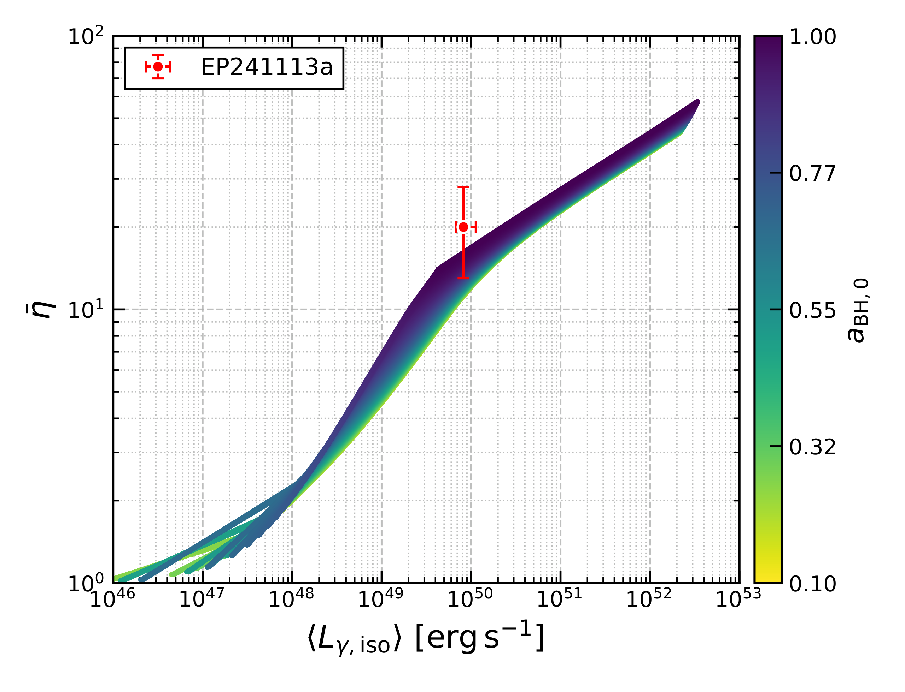
图注：\(\textbf{Dimensionless entropies predicted for NDAF-powered jets.}\) Curves show the dimensionless entropy $\bar{\eta}$ versus the time-averaged isotropic-equivalent prompt luminosity $\langle L_{\gamma,\rm iso}\rangle$. The color represents the initial black-hole spin $a_{\rm BH,0}$, while each curve is traced by varying $\dot{m}_{\rm acc}=0.01$--1 with the other parameters fixed at the fiducial values of \(\cite{Lei2013}.\) The red point with error bars marks EP241113a \(\citep{Dai2026}.\)
对应解读：对应“建议重点查看的图表”第6项和第7项：参数空间、\(\Gamma/\eta\)、prompt luminosity以及NDAF中心引擎能量预算的一致性检查。
入选理由：该图给出NDAF驱动喷流预测的维度熵\(\bar\eta\)与平均各向同性prompt luminosity的关系，并标出EP241113a。它可用于判断\(\eta\sim20\)这类低洛伦兹因子是否能由\(\nu\bar\nu\)湮灭喷流自然产生，是连接低\(\Gamma\)推断和中心引擎机制的重要辅助图。
来源与置信度：\(arxiv_source\)；high；\(arxiv_source\) / EP241113a-Amati.tex:figure[3]
Fig05
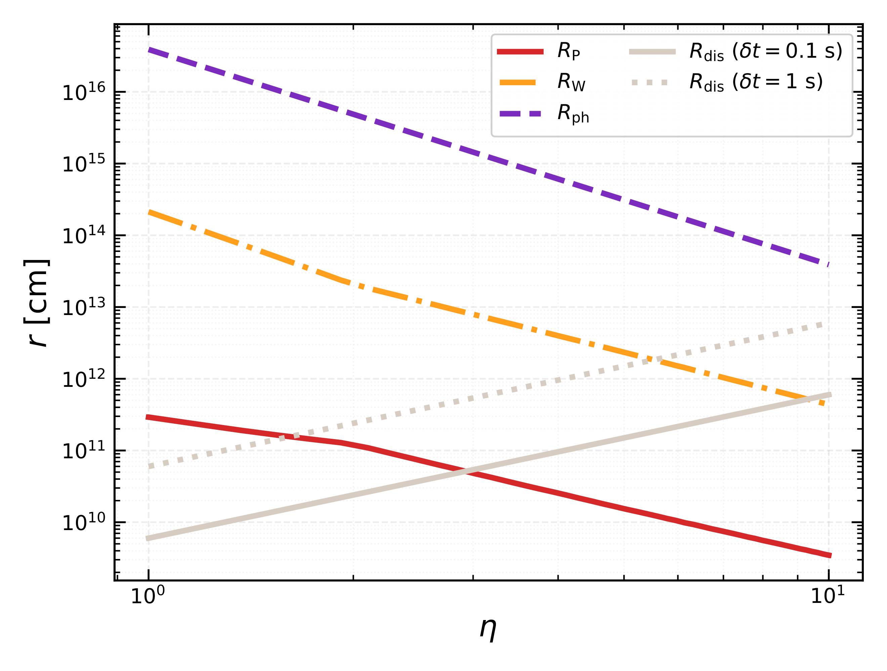
图注：{\(\bf\) Characteristic radii of a dirty fireball as a function of the dimensionless entropy $\eta$, assuming $L_{\gamma, \rm iso}=10^{48} \, {\rm erg\, s^{-1}}$, as relevant to EP240414a.} The line styles have the same meanings as in Fig.~\(\ref{fig_radius},\) and the same fiducial parameters are adopted except for the luminosity.
对应解读：间接对应“建议重点查看的图表”第3项：不同 luminosity 下脏火球特征半径随\(\eta\)的变化，但对象主要是EP240414a而非EP241113a。
入选理由：图的诊断量与Fig01类似，也能说明低\(\eta\)下光球和耗散半径的相对关系，但其标题明确针对EP240414a且采用(L_{\gamma,\
m iso}=10^{48}\,\
m erg\,\(s^{-1}\))，与本日报重点EP241113a的\(L\)和能量尺度不完全一致，因此科学相关性低于前四张。
来源与置信度：\(arxiv_source\)；high；\(arxiv_source\) / EP241113a-Amati.tex:figure[5]
强相关工作
这篇工作与 Amati 关系、X 射线闪、低洛伦兹因子 GRB、光球辐射模型和塌缩星中心引擎研究直接相连。可检索关键词包括 “Amati relation GRB”, “dirty fireball gamma-ray burst”, “dissipative photosphere GRB”, “low Lorentz factor GRB”, “X-ray flash”, “Einstein Probe soft X-ray transient EP241113a”。同一事件 EP241113a 的公开论文目前在输入中只明确给出本文；若需要同事件观测论文，应检索 “EP241113a Einstein Probe afterglow redshift Amati”。
在理论背景上，本文接近一类把 GRB prompt 辐射解释为光球或准热光球辐射的模型，而不是纯同步辐射模型。它也与 GRB 中心引擎的两大路线有关：\(\nu\bar\nu\) 湮灭更容易受到中微子驱动风的重子污染，Blandford–Znajek 机制则常被认为可产生更高磁化、更干净的喷流。相反观点可能会从离轴喷流、低能 X 射线闪、shock breakout 或非标准同步辐射角度解释软峰能，因此后续比较应重点检索 “off-axis GRB X-ray flash”, “shock breakout low luminosity GRB”, “photosphere versus synchrotron GRB prompt emission”。
同一事件 / 同类源线索：
相似工作：
- https://arxiv.org/abs/astro-ph/0205230
- https://arxiv.org/abs/1104.1787
- https://arxiv.org/abs/1511.07738
基础理论 / 方法工作：
- https://ui.adsabs.harvard.edu/abs/1977MNRAS.179..433B/abstract
- https://arxiv.org/abs/astro-ph/9903399
- https://arxiv.org/abs/astro-ph/0405503
相反观点 / 张力线索：
6. Fast, low noise, megapixel detector and readout systems for future X-ray astronomy missions
- 来源：arXiv / astro-ph.HE
- 链接：https://arxiv.org/abs/2608.02905v1
- 作者：Sven Herrmann, Peter Orel, Tanmoy Chattopadhyay, Haley R. Stueber, Jill Juneau, Abigail Y. Pan, Kevan Donlon, Declan O'Neill
- 评分：novelty 7/10，importance 8/10，relevance 8/10，final 8.70/10
- 推荐理由：面向未来X射线天文任务的高速低噪声百万像素探测器与读出系统，对高能天文仪器方法有可复用价值。
中文题目：面向未来 X 射线天文任务的快速、低噪声、百万像素探测器与读出系统
做了什么：这篇仪器论文讨论未来旗舰级 X 射线天文任务对焦平面探测器的核心要求：大视场、百万像素级成像、高角分辨率匹配、大有效面积下的高计数率处理，以及对软 X 射线仍保持低读出噪声。作者聚焦于 CCD 类 X 射线探测器的主要瓶颈——读出速度——并提出/评估可扩展到高通道数、高像素吞吐率、同时保持低噪声事件测量能力的探测器和读出架构。重要结论不是某个天体的新物理，而是说明下一代 X 射线任务若要同时观测亮点源和低面亮度弥散结构，必须把帧率、噪声、事件分级、软能段响应和背景抑制作为同一个系统工程来优化。
为什么重要：未来 X 射线旗舰任务的科学目标常常互相拉扯：亮源需要高帧率来避免光子堆积，暗弱弥散辐射需要低背景和低噪声，宽视场又要求百万像素乃至更大规模焦平面。如果读出速度跟不上，大有效面积反而会把源计数压进同一帧、同一像素邻域，导致能谱、成像和时变信息一起失真。这篇文章的重要性在于把“探测器读出”从工程细节提升为任务科学产出的限制条件。
理论 / 观测 / 仪器方法价值：对仪器方法的价值在于，它面向高通道数、低噪声、快速帧读出这一组合指标，给出了未来 X 射线相机设计需要检查的性能闭环：像素吞吐率、等效读出噪声、软 X 射线阈值、事件岛识别、粒子背景剔除、热设计和电子学可扩展性。对观测者而言，它帮助判断未来任务在亮源光谱、快速时变、星系团外缘、宇宙网热气体和暗弱扩展源观测中，哪些性能是真正决定系统误差的。
为什么应该关注：如果你关心 Athena、Lynx、AXIS 或其他下一代 X 射线成像光谱任务，这类读出系统会直接决定可用的观测模式、最大无堆积通量、软能段灵敏度和低面亮度科学的背景地板。换句话说，焦平面不是被动记录光子的位置；它决定哪些天体物理问题能被干净地测量，哪些只能在后处理中补救但永远带着系统误差。
展开详细解读：文章讲解、背景、理论、重点章节、图表与相关工作
文章详细讲解
科学问题：下一代 X 射线天文任务希望同时拥有大有效面积、高角分辨率和宽视场。大有效面积提高光子收集率，高角分辨率把点扩散函数压到更小角尺度，宽视场要求焦平面上有大量像素。这三者叠加后，对探测器提出一个很尖锐的问题：既要在亮源观测中用足够高的帧率避免光子堆积，又要在暗弱弥散辐射观测中保持低读出噪声、低阈值和可靠事件形态识别。传统 X 射线 CCD 在能量分辨、量子效率和成像均匀性上非常成熟，但串行读出的速度会成为瓶颈。
作者怎么做：文章围绕快速、低噪声、百万像素级探测器与读出系统展开，重点不是单个天体样本，而是未来任务焦平面工程参数之间的耦合。根据摘要，作者讨论了高帧率为何同时服务于两个看似不同的目标：一是减少亮点源的 pile-up，二是缩短粒子本底在单帧中的积累时间，从而降低低面亮度结构测量中的污染。论文关注的核心技术路线是可扩展到高通道数的读出架构：提高每秒像素读出数，同时不牺牲软 X 射线探测所需的低噪声和事件表征精度。
关键结果：从论文定位看，它的关键贡献应当是把 detector、readout electronics 和 science requirement 放在统一性能空间中讨论。读者应重点寻找作者给出的读出速度、读出噪声、像素规模、通道数、帧率和事件识别保真度之间的实测或设计关系。若文中给出原型系统测试，最重要的是看在高像素吞吐率下噪声是否明显上升，软能段事件阈值是否仍足够低，以及多通道并行读出是否引入串扰、固定图样噪声或通道间增益不一致。
局限和下一步：仪器论文的局限通常在于实验室测试环境与轨道背景、辐射损伤、热稳定性、长期漂移之间仍有距离。高帧率读出可以降低 pile-up 和帧内本底，但会带来更高数据率、更复杂事件处理和更严苛的板级功耗/热控制。下一步需要把原型读出链路放进更接近飞行焦平面的规模下验证，包括百万像素阵列、多节点并行读出、低温工作、辐照后性能、端到端事件重建，以及与望远镜点扩散函数和任务观测模式的联合仿真。
关键结果是怎么做出来的
本文最重要的证据链应从需求分解开始读：未来 X 射线任务面对的是高计数率亮源与低面亮度弥散源两个极端场景。对亮源，样本单位不是传统天体个数，而是单位帧、单位像素或单位事件岛中的期望光子数；对弥散源，关键是单位面积、单位时间内粒子本底事件和读出噪声误触发事件的积累。作者把高帧率定义为同时降低这两类系统误差的手段，这是全文结果解释的起点。
若论文包含原型测试，读者应检查样本量对应的是多少像素、多少读出通道、多少帧、多少电子学配置和多少能量点的测试，而不只是看一个“最佳噪声”数字。一个百万像素系统的可信度来自统计覆盖：通道间噪声分布、暗电流或偏置分布、增益稳定性、坏像素比例、事件等级分布随读出速度变化的趋势。若只展示单通道或小区域结果，必须看作者是否用可扩展性论证连接到大焦平面。
显著性或置信度在这类论文中通常不表现为天体探测的 \(5\sigma\)，而表现为性能指标相对需求的裕度。例如在某一像素速率下，等效读出噪声的均值和分散是否低于软 X 射线阈值要求；在某一帧率下，pile-up 概率是否低于任务允许的系统误差；在多通道并行读出时，串扰或非线性是否小于能量定标误差预算。读者应看作者是否给出误差条、通道分布、重复测量和温度/速率扫描，而不是只给单点性能。
模型比较方面，最值得关注的是不同读出架构之间的取舍：传统慢速低噪声读出、高速单通道读出、多输出节点并行读出，以及可能的片上/近端电子学方案。支持结论的图表通常包括噪声随像素速率变化、帧率随通道数变化、事件能谱峰宽随读出模式变化、以及背景或 pile-up 仿真随帧时间变化。若文中有表格列出未来任务需求与当前实现值，应优先看哪些指标已经达到、哪些只是外推。
主要系统误差包括电子学串扰、时钟诱导电荷、暗电流、偏置漂移、增益漂移、热噪声、辐照损伤后的电荷转移效率下降、事件岛截断、以及高数据率下的片上或地面处理选择效应。稳健性检验应包括不同帧率、不同温度、不同输入信号幅度、不同通道组合和长期运行下的重复测试。对于这篇论文，结论的可信度主要取决于作者是否展示“快”和“低噪声”可以同时成立，而不是分别在两个不同工作点成立。
展开背景、理论、公式、模型、章节和图表导读
背景知识
X 射线天文的焦平面探测器需要同时测量光子到达位置、能量和时间。CCD 长期是成像光谱观测的主力，因为它们在软 X 射线能段有较好的量子效率、成熟的像素均匀性和可理解的电荷收集物理。Chandra、XMM-Newton、Suzaku 等任务都依赖 CCD 或相近固态探测器建立了大量高能天体物理结果。
历史问题在于，CCD 的优势和劣势来自同一个工作方式：电荷在像素中积分，然后被转移到输出放大器读出。慢速读出时，读出噪声低，能量测量干净；但当望远镜有效面积增大、源更亮或视场更大时，慢速读出会让多个光子落在同一帧内，形成 pile-up。pile-up 会把多个低能光子误判成一个高能事件，改变能谱斜率、线强、事件等级，严重时还会让源中心出现计数损失。
观测背景也在变化。未来任务希望研究星系团外缘、活动星系核反馈、超新星遗迹弱激波、银河系热晕、星系际介质等低面亮度结构。这些观测并不只受天体光子统计限制，还受粒子本底、软质子污染、读出噪声阈值和事件筛选效率限制。更短帧时间意味着粒子事件在同一帧中的重叠和污染可被更好识别，但前提是高速读出不把电子噪声抬高。
为什么现在值得重新看：下一代 X 射线任务概念强调大面积与高角分辨率结合，焦平面数据率和计数率压力远大于传统 CCD 任务。与此同时，CMOS、混合探测器、DEPFET、数字读出 ASIC、多输出节点 CCD 等技术路径都在发展，使“CCD 类低噪声”和“高帧率大阵列”不再必然互斥。本文正是在这个技术窗口中讨论可扩展读出架构。
常见误区之一是只把探测器性能简化成能量分辨率。实际上，对许多科学目标，帧率、坏像素、事件等级迁移、背景可筛除性、时间标记精度和系统稳定性同样重要。另一个误区是认为高帧率只服务于亮源；对暗弱弥散源，高帧率减少帧内粒子污染、改进事件形态识别，同样能降低系统背景。还有一个误区是把百万像素看作单纯规模问题；真正困难的是百万像素同时低噪声、低功耗、低串扰、可定标。
基础理论 / 方法脉络
基础物理图像是：一个 X 射线光子在硅探测器中通过光电吸收沉积能量，产生一定数量的电子-空穴对。电荷云在电场和热扩散作用下分布到一个或多个像素，随后读出电子学把电荷转换为电压或数字量。光子能量越低，产生的电荷越少，因此软 X 射线响应对读出噪声和阈值特别敏感。
CCD 类探测器的事件测量依赖“帧”。在一个曝光帧内，像素积累天体光子、粒子事件、暗电流和各种电子噪声。帧结束后，电荷被转移并读出。若同一事件检测单元在同一帧中收到多个光子，它们可能被识别成一个事件，或改变事件等级，这就是 pile-up。缩短帧时间可以降低每帧每事件岛的平均光子数，是亮源观测中最直接的硬件缓解手段。
本文相关的关键量包括帧时间 \(t_{\rm frame}\)、像素数 \(N_{\rm pix}\)、读出通道数 \(N_{\rm ch}\)、单通道像素速率 \(r_{\rm pix}\)、等效读出噪声 \(\sigma_{\rm RN}\)、能量分辨 \(\Delta E\)、软能段阈值 \(E_{\rm th}\)、以及事件岛大小。它们不是独立量：提高 \(r_{\rm pix}\) 往往会增加模拟带宽与噪声压力；增加 \(N_{\rm ch}\) 可降低每通道负担，却可能引入通道间增益差、串扰和校准复杂度。
观测/统计逻辑是把硬件指标转化成科学误差。对亮源，要计算在给定点扩散函数、像素尺度和帧时间下的 pile-up 概率；对弥散源，要计算在给定背景率和筛选效率下的信噪比；对软 X 射线，要比较光子产生电荷数与噪声分布之间的分离度。仪器性能不是孤立指标，而是进入曝光时间估计、谱拟合误差、背景建模和源探测灵敏度。
常见退化和系统误差包括：低阈值会提高软能段效率，但也可能增加噪声触发；更快读出降低 pile-up，但可能提高读出噪声；更多通道提高帧率，但增加交叉校准负担；更复杂事件筛选降低粒子背景，但可能牺牲真实 X 射线事件效率。本文的核心价值就在于讨论如何在这些退化之间找到面向未来任务的可行工作点。
公式与推导
第一步从 X 射线在硅中的电离产额开始。能量为 \(E\) 的光子平均产生的电荷数可写为
其中 \(w\simeq 3.65\\,{\rm eV}\) 是硅中产生一个电子-空穴对所需的平均能量。这个式子说明软 X 射线光子对应的 \(N_e\) 很小，因此读出噪声 \(\sigma_{\rm RN}\) 会直接限制低能阈值和能量分辨。
第二步写出单光子能量测量的不确定度。若考虑 Fano 噪声和读出噪声，电荷数方差近似为
其中 \(F\) 是 Fano 因子，\(\sigma_{\rm RN}\) 以电子数为单位。对应的能量分辨半高全宽可估计为
这说明高速读出若让 \(\sigma_{\rm RN}\) 上升，会首先伤害低能段。
第三步把读出架构连接到帧时间。对总像素数为 \(N_{\rm pix}\)、并行读出通道数为 \(N_{\rm ch}\)、单通道像素速率为 \(r_{\rm pix}\) 的阵列，理想帧时间为
其中 \(t_{\rm overhead}\) 包括行列切换、复位、同步和数据封装等开销。本文关心的“可扩展性”本质上就是在增大 \(N_{\rm pix}\) 时，能否通过 \(N_{\rm ch}\) 和 \(r_{\rm pix}\) 保持可接受的 \(t_{\rm frame}\)。
第四步估计 pile-up。若某个事件检测单元在一帧内的平均入射光子数为 \(\lambda\)，泊松概率为
其中 \(R_{\rm cell}\) 是该单元的计数率。发生两个及以上光子的概率为
因此将 \(t_{\rm frame}\) 降低 \(10\) 倍，会在小 \(\lambda\) 极限下把 pile-up 概率约降低 \(100\) 倍。
第五步把粒子背景写进帧内污染。若粒子背景率为 \(B_{\rm p}\)，在事件筛选区域面积 \(A_{\rm cell}\) 和帧时间 \(t_{\rm frame}\) 内的平均背景事件数为
短帧时间降低 \(\mu_{\rm b}\)，有助于减少粒子事件与真实 X 射线事件在同一帧或相邻像素中的混淆。
第六步写出低面亮度观测的信噪比。若源计数率为 \(S\)、天体和仪器背景计数率为 \(B\)、曝光为 \(T\)，简单计数极限下有
其中 \(\sigma_{\rm sys}\) 代表背景建模、增益漂移和筛选效率等系统项。高速低噪声读出通过降低 pile-up、改善背景筛选和保持低阈值来降低 \(\sigma_{\rm sys}\) 或有效的 \(B\)。
第七步给出事件检测阈值与误触发的关系。若噪声近似高斯，阈值 \(Q_{\rm th}=n\sigma_{\rm RN}\) 以上的单像素噪声触发概率为
降低 \(\sigma_{\rm RN}\) 可以在固定误触发概率下把能量阈值 \(E_{\rm th}=wQ_{\rm th}\) 降低，从而保护软 X 射线响应。
第八步是性能拟合或似然评估。若实验室测得不同能量通道的计数 \(d_i\)，模型预测为 \(m_i(\boldsymbol{\theta})\)，泊松似然可写为
其中 \(\boldsymbol{\theta}\) 可包括增益、偏置、噪声、线宽、背景归一化和事件筛选效率。这个式子把硬件测试谱、校准源数据或仿真事件表转换成可比较的参数约束。
模型拟合 / 应用方法
这类仪器论文的模型拟合首先发生在电子学标定层面。每个像素或读出通道通常需要拟合偏置、增益、读出噪声和非线性。若使用校准 X 射线线源，谱峰位置给出能量-电荷转换关系，谱峰宽度约束 \(\sigma_{\rm RN}\) 与 Fano 项，低能尾或多像素事件比例反映电荷收集和事件岛重建误差。关键不是只报告平均值，而是报告通道间分布和随读出速率的变化。
第二层拟合是事件识别模型。X 射线事件会在一个或多个像素中形成特定形态，粒子事件通常更大、更长或能量沉积异常。事件分级算法的阈值会影响真实事件效率和背景拒绝率。模型需要同时拟合或扫描阈值、事件岛大小、邻近像素判据和能量重建方式。残差应看能谱峰形、事件等级比例、低能效率曲线和高能尾，而不是只看总计数。
第三层是任务科学仿真中的参数估计。给定望远镜有效面积、点扩散函数、源通量和背景模型，可以把帧时间、像素尺度和读出噪声映射成 pile-up 概率、可用曝光时间和谱参数偏差。这里常用泊松似然、Cash 统计量或贝叶斯后验来比较不同探测器工作点。拟合量包括源谱参数、背景归一化、仪器响应矩阵参数和 pile-up 模型参数。
主要退化关系非常实际：提高像素速率 \(r_{\rm pix}\) 可能增大 \(\sigma_{\rm RN}\)；降低阈值提高软能段效率但增加噪声触发；更严格事件筛选降低背景但损失有效面积；更多通道降低 \(t_{\rm frame}\) 但增加增益匹配和串扰校准。一个好的模型拟合部分应展示这些退化曲线，而不是给单一最优点。
系统误差方面，读者应关心温度漂移、时钟波形变化、辐照损伤、电荷转移效率、板级电磁干扰和长期稳定性。实际应用时，观测者会把这些误差传递到响应矩阵、背景文件和曝光图中。若这些量没有被端到端建模，未来任务的高统计精度反而会暴露仪器系统误差。
重点章节 / 结果段落怎么读
-
任务需求与科学驱动：建议先读作者如何把未来 X 射线任务的科学目标翻译成探测器指标。重点看大有效面积、高角分辨率和宽视场如何共同推高帧率、通道数和数据率要求，以及作者如何定义软 X 射线响应所需的噪声上限。
-
探测器与读出架构：这一部分应是全文核心。读者要找的是阵列规模、像素布局、输出节点数量、读出链路、模拟前端、数字化方式和同步策略。特别要看作者是否讨论多通道并行读出带来的串扰、增益一致性和热/功耗问题。
-
实验室性能测试或原型验证：若文中有测试结果，应重点阅读噪声、增益、线性、能谱峰宽、帧率和通道均匀性。不要只看最佳通道；要看全阵列或多通道统计分布，以及高读出速率下性能是否退化。
-
科学场景映射：建议读作者如何把硬件指标映射到 pile-up 缓解、粒子背景降低、低面亮度灵敏度和亮源观测能力。这里通常能看出仪器论文是否真正服务于天文需求，而不是停留在电子学指标。
-
可扩展性与未来工作：最后关注百万像素甚至更大焦平面下的外推是否合理。关键问题包括数据率、功耗、低温封装、辐照测试、飞行电子学成熟度和端到端校准计划。
建议重点查看的图表
-
读出架构框图：看探测器、输出节点、模拟前端、ADC、时钟/控制和数据链路如何连接，尤其注意并行通道数和可能的瓶颈。
-
噪声随像素读出速率变化图：横轴通常是 \(r_{\rm pix}\) 或工作模式，纵轴是 \(\sigma_{\rm RN}\) 或等效能量噪声。关键看高速端是否仍满足软 X 射线要求。
-
帧率或帧时间随阵列规模/通道数变化图：检查 \(t_{\rm frame}\) 是否按 \(1/N_{\rm ch}\) 接近理想缩短，还是被开销、同步或数据传输限制。
-
校准源能谱图：看谱峰位置、半高全宽、低能尾、背景和残差。若高速读出导致峰变宽或非高斯尾增强，这是软能段科学的风险。
-
通道间性能分布图或表：检查噪声、增益、坏像素、偏置漂移的分布宽度。百万像素系统的风险往往在尾部通道，而不是平均指标。
-
pile-up 或背景污染仿真图：看不同帧时间下 pile-up 概率、事件等级迁移或背景拒绝效率如何变化，并检查假设的源亮度、点扩散函数和事件岛大小是否合理。
-
系统误差/稳健性测试：若有温度扫描、长时间稳定性、不同时钟模式或辐照前后对比，应优先检查这些图，因为它们决定实验室指标能否转化为飞行性能。
关键图表逐图导读
图 1：若为系统架构图，通常没有传统坐标轴，而是展示探测器阵列、输出节点、前端放大、数字化、时钟控制和数据传输路径。读者应沿着信号链从像素电荷走到数字事件，找出哪一级决定噪声、哪一级决定吞吐率、哪一级可能引入串扰。读图陷阱是把并行通道数直接等同于可用帧率；实际还要看同步、开销和数据链路。
图 2：若为噪声-速率关系图，横轴应是像素速率或读出模式，纵轴是等效读出噪声 \(\sigma_{\rm RN}\) 或能量分辨。数据点可能代表不同通道或不同工作温度，模型线可能表示电子学噪声随带宽增加的趋势。主要结论应是高速读出时是否仍低噪声。读图陷阱是只看最低点，不看通道分散和误差条。
图 3：若为校准源能谱，横轴通常是脉冲高度、电子数或能量，纵轴是计数。数据点是实测谱，模型线可能由高斯峰、尾部成分和背景组成。应重点看谱峰半高全宽、低能尾和残差结构。若残差在峰翼系统性偏离，说明事件重建或电荷收集模型可能不足。
图 4：若为帧时间/吞吐率缩放图，横轴可能是通道数、阵列像素数或像素速率，纵轴是帧时间 \(t_{\rm frame}\) 或每秒像素数。理想模型线接近 \(t_{\rm frame}\propto 1/N_{\rm ch}\)。读者要检查实测点是否偏离理想线，以及偏离来自固定开销、电子学饱和还是数据传输限制。
图 5：若为 pile-up 仿真或任务场景图，横轴可能是源计数率、帧时间或离轴角，纵轴是 pile-up 分数、谱参数偏差或可接受亮度上限。模型线展示不同读出模式。主要结论是高帧率如何扩大亮源可观测范围。读图陷阱是忽略点扩散函数和像素尺度假设；同样帧率下，更尖锐的点扩散函数会提高中心像素事件率。
图 6：若为背景/事件等级诊断图，横轴可能是事件等级、能量或空间位置，纵轴是保留率、背景率或误分类率。应看高速读出是否改善粒子背景筛选，同时不牺牲真实 X 射线事件效率。若只给背景降低而不给有效面积损失，结论不完整。
论文原图 / 可嵌入图片
Fig08
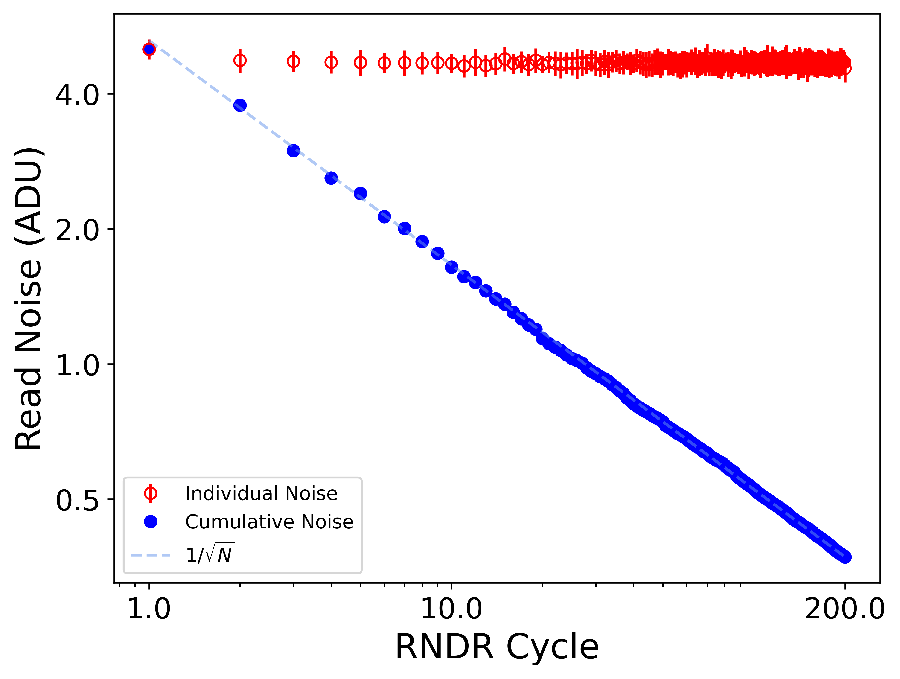
图注：Read noise across 200 RNDR cycles. The red circles show the 200 individual read noise measurements while the blue filled circles are obtained after averaging over the measurements. The cumulative noise measurements follow the expected $1/\mathrm{\sqrt{N}}$ trend, with a final noise of 0.40 $\mathrm{e}^{-}_{\mathrm{RMS}}$ after 200 cycles or about 320 us.
对应解读：建议重点查看的图表 2；关键图表逐图导读中的图 2；模型拟合中关于读出噪声、读出速率和软 X 射线阈值的退化关系。
入选理由：这是候选图中最直接量化低噪声性能的图，给出 200 次 RNDR 循环下读出噪声随平均次数按 1/√N 下降，并达到 0.40 e- RMS。它最能支撑日报关于高速/低噪声读出是否满足软 X 射线要求的核心判断。
来源与置信度：\(arxiv_source\)；high；\(arxiv_source\) / \(article_next_gen_Xray_v1.tex\):figure[8]
Fig12
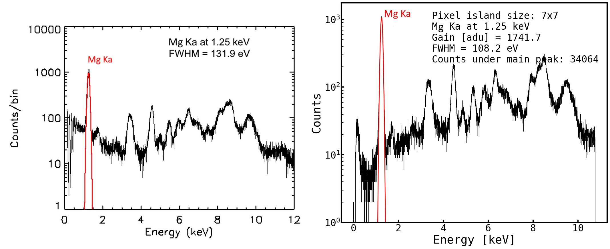
图注：X-ray spectra of Magnesium K fluorescence for two different processing methods that both show all valid events. {\(\it\) Left:} The traditional Chandra ACIS like event processing. {\(\it\) Right:} Event processing that utilizes a gaussian fit for the charge cloud. The gaussian fit method improves energy resolution from 131.9 eV to 108.2 eV and improves the low-energy fidelity of the spectrum.
对应解读：建议重点查看的图表 4；关键图表逐图导读中的图 3；模型拟合中关于校准 X 射线谱峰、能量分辨率、低能尾和事件重建残差的部分。
入选理由：该图直接展示 Mg K 荧光 X 射线能谱，并比较传统 ACIS 式处理与高斯电荷云拟合处理，能量分辨率从 131.9 eV 改善到 108.2 eV。它比单纯硬件照片更能说明事件处理方法如何影响软能段谱保真度。
来源与置信度：\(arxiv_source\)；high；\(arxiv_source\) / \(article_next_gen_Xray_v1.tex\):figure[12]
Fig10
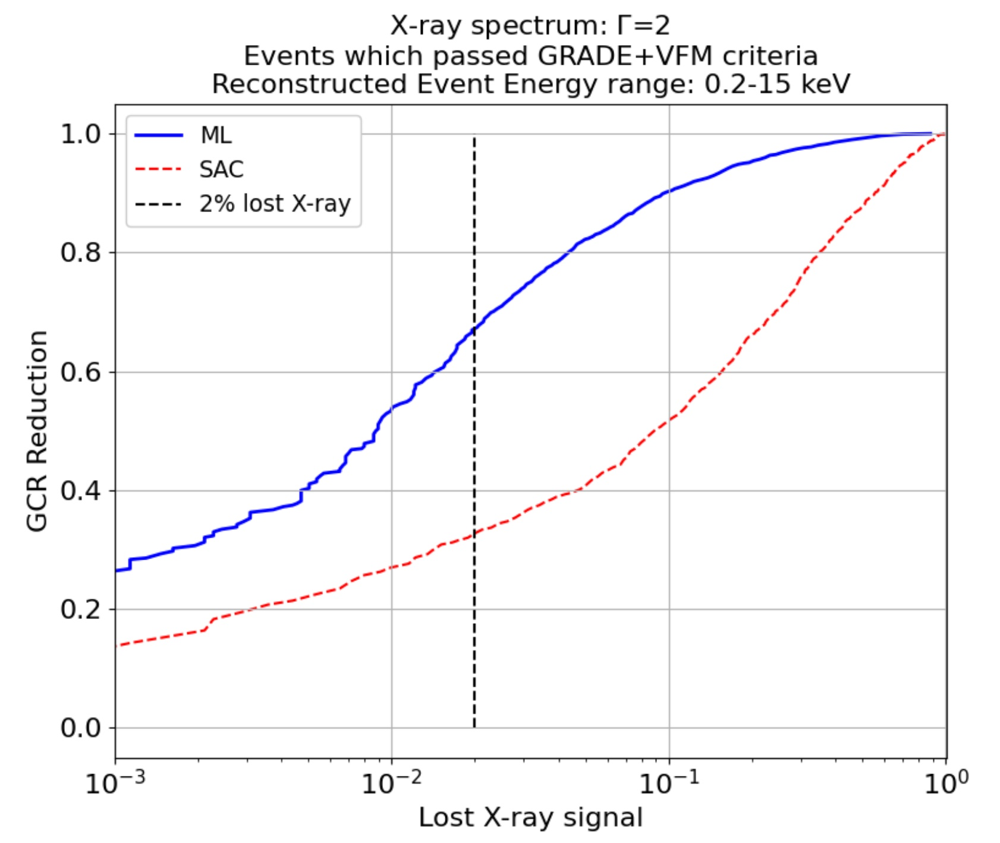
图注：ROC curve for test data with photons sampled from a different dataset then the training data. Results are shown for classification of events which pass the Chandra ACIS very faint mode filter as valid events. Blue - our ML model, Red - self-anticoincidence (SAC) model, Black dotted line - acceptable 2\% X-ray loss level.
对应解读：建议重点查看的图表 6；关键图表逐图导读中的图 6；模型拟合中关于事件识别、背景拒绝效率和真实 X 射线事件损失的部分。
入选理由：ROC 曲线直接给出机器学习事件分类与 self-anticoincidence 方法的性能比较，并标出可接受的 2% X-ray loss 水平，正好对应日报中要求检查背景拒绝和有效事件损失之间权衡的内容。
来源与置信度：\(arxiv_source\)；high；\(arxiv_source\) / \(article_next_gen_Xray_v1.tex\):figure[10]
Fig03
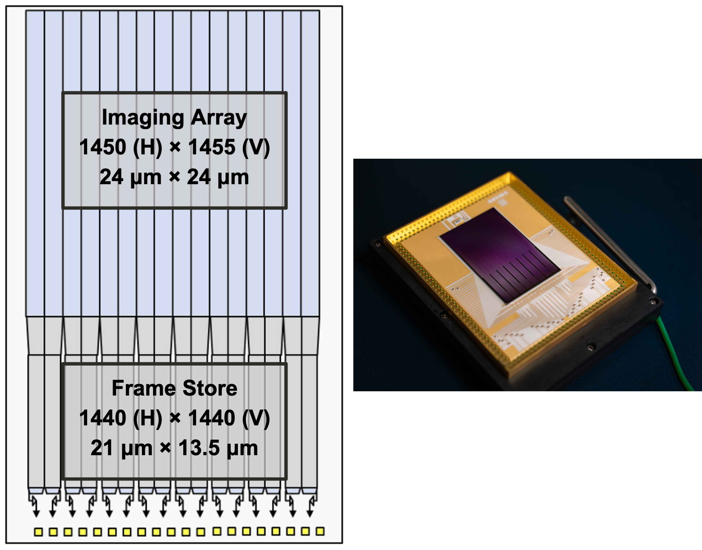
图注：CCID-100 architecture.
对应解读：建议重点查看的图表 1；关键图表逐图导读中的图 1；详细解读中关于 CCID-100 探测器和多通道读出架构的部分。
入选理由：该图是 CCID-100 architecture，是理解探测器阵列、读出节点和系统吞吐路径的基础图。虽然标题简短，但它比显微照片更接近日报要求的读出架构框图。
来源与置信度：\(arxiv_source\)；high；\(arxiv_source\) / \(article_next_gen_Xray_v1.tex\):figure[3]
Fig11
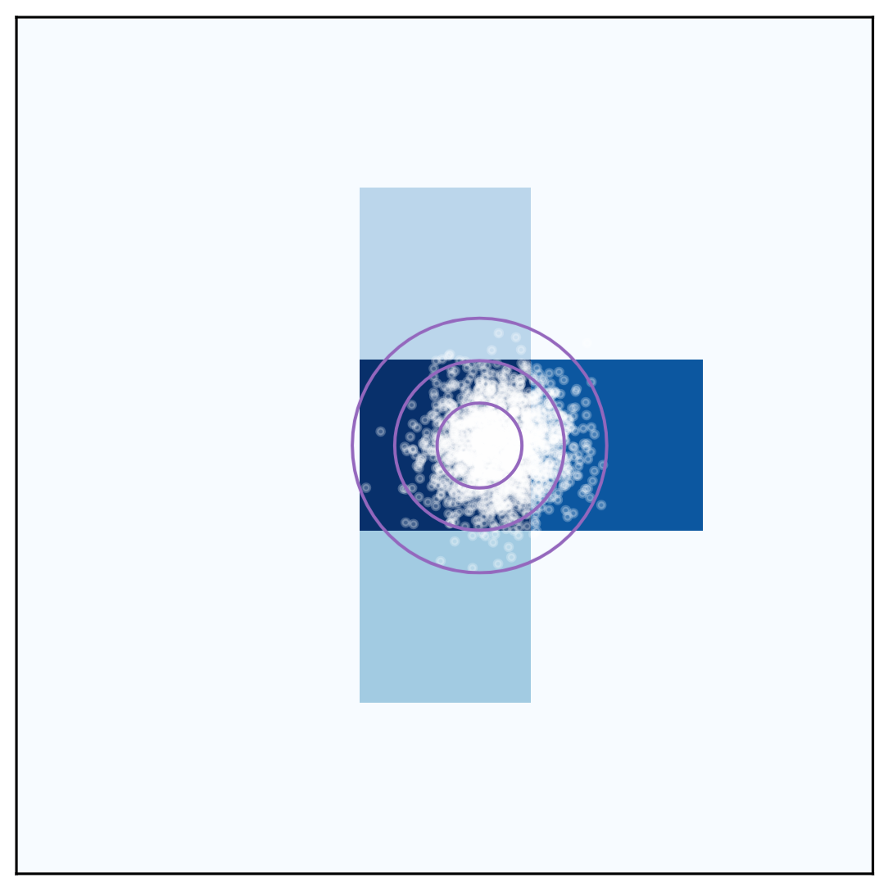
图注：X-ray imagers measure the charge packet that is generated by an X-ray photon in the detector. To determine the X-ray energy the charge cloud signal needs to be recombined into the total amount. The white dots indicate the locations of the electrons after diffusion in the pixel grid and the shading color of the pixels represents the value measured in each pixel. The 2D Gaussian fit to the shared pixel charge is shown in purple, the purple lines represent the 1, 2 and $3\sigma$ radii, respectively.
对应解读：模型拟合中关于事件识别模型、电荷云重组、事件岛大小和能量重建方式的部分。
入选理由：该图用像素网格、电荷扩散电子位置和 2D Gaussian 拟合半径说明 X 射线事件电荷云如何被重建，是理解 Fig12 中高斯拟合改进能谱分辨率的关键辅助图。
来源与置信度：\(arxiv_source\)；high；\(arxiv_source\) / \(article_next_gen_Xray_v1.tex\):figure[11]
Fig05
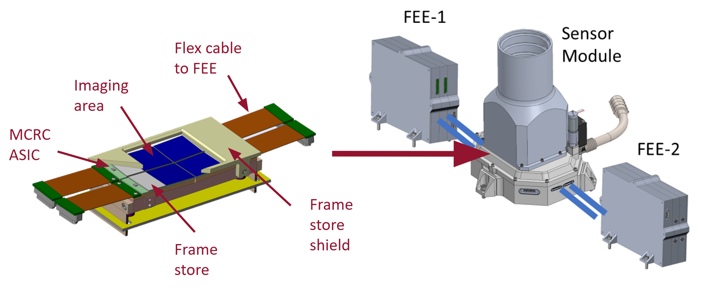
图注：The AXIS focal plane assembly and sensor module is a typical X-ray camera instrument for next generation X-ray missions. The sensor module houses a multi-megapixel focal plane array that is connected via a flex lead to a number of front-end-electronics (FEE) boxes that operate and read out the detectors. The focal plane is cooled to around -100C while the electronics operates around room temperature.
对应解读：建议重点查看的图表 1 和 3；详细解读中关于未来 X 射线相机、多百万像素焦平面、前端电子学和热/数据链路约束的部分。
入选理由：该图展示 AXIS 焦平面组件、传感器模块、柔性连接和 FEE boxes 的系统级布局，能支撑日报关于百万像素焦平面、并行电子学、低温探测器与室温电子学之间工程耦合的讨论。
来源与置信度：\(arxiv_source\)；high；\(arxiv_source\) / \(article_next_gen_Xray_v1.tex\):figure[5]
强相关工作
这篇论文属于同类仪器与任务技术路线研究，而不是某个单一天体事件。可把它放在 CCD X 射线天文相机、高速低噪声读出、下一代 X 射线旗舰任务焦平面、以及低背景成像光谱仪的文献链中阅读。建议检索关键词包括 “X-ray CCD readout noise high frame rate”, “megapixel X-ray detector future missions”, “Lynx X-ray Surveyor focal plane detector”, “AXIS X-ray mission detector”, “Athena WFI detector readout”, “pile-up mitigation X-ray CCD”。
相近工作包括 Chandra ACIS、XMM-Newton EPIC、Suzaku XIS 等历史 CCD 仪器论文，以及 Athena WFI、Lynx/AXIS 概念研究中关于大视场 X 射线成像器的章节。基础理论方面可回到 X 射线 CCD 电荷产生、Fano 噪声、pile-up 统计和 Poisson/Cash 统计。存在的张力主要是技术路线之争：成熟 CCD 的低噪声和软能段性能，与 CMOS/DEPFET/混合像素探测器在高速和随机访问方面的优势如何取舍。
同一事件 / 同类源线索：
相似工作：
基础理论 / 方法工作：
- https://ui.adsabs.harvard.edu/abs/2003SPIE.4851..28G/abstract
- https://ui.adsabs.harvard.edu/abs/2001A%26A...365L..27S/abstract
- https://ui.adsabs.harvard.edu/abs/2007PASJ...59S..23K/abstract
相反观点 / 张力线索：
7. Gamma-ray and radio populations of millisecond pulsars in globular clusters
- 来源：arXiv / astro-ph.HE
- 链接：https://arxiv.org/abs/2608.02768v1
- 作者：Hannah Lawson, Duncan R. Lorimer
- 评分：novelty 7/10，importance 7/10，relevance 9/10，final 8.70/10
- 推荐理由：用Fermi伽马射线通量模拟银河系球状星团毫秒脉冲星总体，明确属于伽马射线源族群研究，并对MSP数量和射电可探测性给出约束。
中文题目：球状星团中毫秒脉冲星的伽马射线与射电族群
做了什么：这篇文章用银河系 118 个球状星团的性质，做蒙特卡罗模拟来推断星团内毫秒脉冲星族群如何共同产生费米卫星看到的伽马射线通量。作者比较了两类单颗毫秒脉冲星伽马射线光度模型：一种是依赖脉冲星自转参数的三维“基本平面”模型，另一种是经验对数正态光度函数。两者都能拟合星团伽马射线通量，并都再现了伽马射线亮度随恒星遭遇率增加而增强的经验关系；但它们给出的总毫秒脉冲星数量差别很大：对数正态模型需要约 \(5150^{+720}_{-710}\) 颗，基本平面模型只需约 \(770\pm60\) 颗。作者进一步用射电—伽马光度比例把预测接到射电伪光度上，认为对数正态模型得到的“许多很暗的毫秒脉冲星”更符合近年关于银河系毫秒脉冲星射电暗弱主要受几何效应影响的图像。
为什么重要：球状星团是毫秒脉冲星形成和再循环的高效率工厂，但射电巡天只能看到其中一部分，且受波束、散射、加速度搜索和距离误差影响很大。伽马射线总通量给的是一个族群积分约束，可以绕开单颗源检出不完全的问题。本文的重要性在于，它清楚展示了：同样的费米星团通量可以对应少量高光度脉冲星，也可以对应大量低光度脉冲星；决定总数的关键不是通量本身，而是单颗源光度函数的低光度端和几何选择效应。
理论 / 观测 / 仪器方法价值：对理论而言，这项工作把球状星团的恒星动力学遭遇率、毫秒脉冲星再循环形成效率和高能辐射光度函数连在一起，可用于检验中子星在致密环境中的演化路径。对观测而言，它给下一代射电望远镜和深度搜索提供了可检验预言：如果对数正态模型接近真实，星团中应存在一个庞大的低射电伪光度毫秒脉冲星群。对方法而言，文章强调族群合成必须同时看伽马射线积分通量、射电伪光度分布和少数“单颗源主导”星团的概率，而不能只拟合总亮度。
为什么应该关注：如果你关心毫秒脉冲星数量、星团动力学、费米未解析源、银河系伽马射线前景，或者未来 SKA、ngVLA、FAST 类射电搜索能发现多少星团脉冲星，这篇文章都值得看。它给出的核心提醒是：球状星团伽马射线亮并不自动意味着里面只有少数极亮脉冲星；更可能的情形也许是大量暗弱脉冲星共同发光，而这会直接影响对中子星保留率、低质量 X 射线双星后代、以及星团对银河系高能源族群贡献的估计。
展开详细解读：文章讲解、背景、理论、重点章节、图表与相关工作
文章详细讲解
科学问题：银河系球状星团中到底有多少毫秒脉冲星？这个问题长期被射电观测的不完备性限制。已知许多球状星团在费米 \(\gamma\) 射线波段可见，而单颗毫秒脉冲星也是稳定的 \(\gamma\) 射线源。因此，一个自然思路是把星团的总 \(\gamma\) 射线通量看成许多毫秒脉冲星的叠加，再反推出隐藏在星团里的源数。但这个反推不是唯一的：如果每颗源平均很亮，需要的数量少；如果每颗源平均较暗，需要的数量就多。本文正是围绕这个退化关系展开。
作者怎么做：他们收集 118 个银河系球状星团的距离、恒星遭遇率等性质，用蒙特卡罗方式为每个星团抽取毫秒脉冲星数量和单颗 \(\gamma\) 射线光度，并把总光度换算成费米可观测通量。核心比较是两个光度模型。模型 A 是所谓三维基本平面，即用脉冲星自转周期、自转周期导数或自旋下降功率等量来预测 \(\gamma\) 射线光度；模型 B 是更经验化的对数正态光度分布。然后他们检查模拟星团通量分布能否复现实测费米通量，以及能否再现星团 \(\gamma\) 射线输出与恒星遭遇率之间的标度关系。
关键结果：两个模型都能通过总体通量检验，并且都可以得到类似低质量 X 射线双星和射电脉冲星研究中常见的“源数随遭遇率增加”的趋势。但是，两者推断出的银河系球状星团总毫秒脉冲星数差异非常大。基本平面模型平均单源 \(\gamma\) 光度较高，因此只需约 \(770\pm60\) 颗；对数正态模型平均单源 \(\gamma\) 光度较低，因此需要约 \(5150^{+720}_{-710}\) 颗。一个有趣的附加结果是，两种模型都预期大约有三个星团的总 \(\gamma\) 射线发射会被单颗特别亮的毫秒脉冲星主导，这为判别极端尾部分布提供了观测切入点。
局限和下一步：文章的结论强烈依赖单颗源 \(\gamma\) 光度函数、距离、星团遭遇率估计和射电—伽马光度转换。尤其是射电伪光度不是真正各向同性光度，受波束方向、频率谱、散射和搜索选择函数影响。下一步最关键的检验不是简单再拟合费米通量，而是用更深射电巡天寻找对数正态模型预言的大量低伪光度星团毫秒脉冲星，同时用更长时间基线的费米数据、改进的星团距离和更真实的波束几何模型来压缩模型 A 与模型 B 的退化。
关键结果是怎么做出来的
本文最重要的证据链从样本定义开始。作者把银河系 118 个球状星团作为母样本，每个星团带有距离、恒星遭遇率和费米 \(\gamma\) 射线观测约束。这里的关键不是逐个识别星团内每一颗毫秒脉冲星，而是把星团当作一个未解析或部分解析的源族群，比较模拟得到的积分通量分布和费米观测到的通量分布。样本量足够大，使得作者可以同时约束总族群规模和族群随星团动力学环境变化的趋势。
事件数或源数不是直接数出来的，而是在蒙特卡罗中生成的。对每个星团，作者按与恒星遭遇率相关的规则分配毫秒脉冲星数量，再给每颗毫秒脉冲星抽取 \(\gamma\) 射线光度。模型 A 的单颗源光度较高，所以在匹配同一组星团通量时，所需源数较少；模型 B 的单颗源光度较低，所以需要更多源叠加。最终得到的总数分别为 \(770\pm60\) 和 \(5150^{+720}_{-710}\)，这个约 \(6\) 到 \(7\) 倍的差异是全文最核心的定量结论。
显著性和置信度的逻辑更接近族群合成的后验预测检验，而不是单一新源发现的 \(\sigma\) 值。作者检查模拟通量是否覆盖观测通量、是否再现通量—遭遇率相关性，以及是否预测出合理数量的“由单颗亮源主导”的星团。文摘中特别指出，两种模型都预期全星团系统中约有三个这样的星团；这说明即便总体光度函数不同，亮端随机抽样仍能在少数系统中产生类似的极端现象，因此单靠这些极端星团不足以唯一判别模型。
支撑结论的图表应主要包括：模拟与观测的星团 \(\gamma\) 射线通量比较图、\(\gamma\) 射线光度或通量相对于恒星遭遇率的标度关系图、模型 A 与模型 B 的单颗源光度函数和累计源数分布图、以及射电伪光度预测分布图。特别需要看的是置信带是否覆盖观测点、离群星团是否集中在距离或遭遇率不确定性大的对象上、以及模型 B 的低光度端是否只是由先验假设驱动。
主要系统误差包括星团距离误差，因为通量到光度要乘 \(d^2\)；遭遇率误差，因为它决定每个星团预期拥有多少毫秒脉冲星；费米源关联和背景建模误差，因为银道面附近星团的 \(\gamma\) 射线通量容易受弥散背景影响；以及射电—\(\gamma\) 光度比例的不确定性。稳健性检验应关注作者是否改变了光度函数参数、遭遇率归一化、费米检出阈值和少数亮星团的权重后仍保持“模型 B 需要多得多的暗弱毫秒脉冲星”这一结论。
展开背景、理论、公式、模型、章节和图表导读
背景知识
毫秒脉冲星是经过再循环加速的老年中子星，通常由低质量伴星长期吸积角动量后被自转加速到毫秒周期。球状星团中恒星密度高、双星相互作用频繁，交换相互作用和潮汐俘获能高效地产生低质量 X 射线双星及其后代毫秒脉冲星。因此，球状星团不是普通银河盘毫秒脉冲星的简单缩小版，而是一个受动力学环境强烈调制的特殊实验室。
历史上，人们主要通过射电脉冲搜索来统计星团毫秒脉冲星。但射电样本有明显选择效应：波束未扫过地球的脉冲星看不到，紧密双星中的加速度会在长积分中涂抹周期信号，星际介质和星团内等离子体会造成色散和散射，远距离星团中的暗源也很难被探测。结果是，已知射电毫秒脉冲星只是实际族群的下限，且不同星团之间的不完备性不同。
费米时代提供了另一条路径。许多毫秒脉冲星在 \(\gamma\) 射线波段发光，且 \(\gamma\) 射线束通常被认为比射电束更宽，受星际吸收影响也小。对遥远球状星团而言，费米通常不能分辨单颗毫秒脉冲星，但能测到星团的总 \(\gamma\) 射线通量。这个积分量可以与星团遭遇率、质量、金属丰度和距离结合，反推隐藏的毫秒脉冲星族群。
为什么现在值得重新看？一方面，费米长期巡天使星团 \(\gamma\) 射线通量和上限更稳定；另一方面，越来越多射电设施正在进入可以深挖星团暗弱毫秒脉冲星的灵敏度区间。与此同时，银河系场毫秒脉冲星的光度函数、波束几何和选择效应研究也在更新，使得早期“按平均光度除总光度”的粗略估算显得过于简单。
该领域一个常见误区是把星团 \(\gamma\) 射线光度直接除以一个固定单颗毫秒脉冲星光度，然后把结果当作真实源数。实际情况是，光度函数的形状、亮端尾部、低光度截断和波束修正都会显著改变源数估计。另一个误区是把射电伪光度当作本征光度；射电伪光度通常是 \(S d^2\)，没有修正波束立体角，也没有处理谱指数和方向性，因此只能作为观测可比量，而不是严格能量输出。
基础理论 / 方法脉络
基础物理图像是：毫秒脉冲星通过旋转磁偶极和磁层电流损失自转能，其中一部分转化为高能粒子加速和曲率辐射、同步辐射或逆康普顿相关的 \(\gamma\) 射线发射。对单颗脉冲星，可用自旋下降功率 \(\dot{E}\) 表示可用能量库，再引入 \(\gamma\) 射线效率 \(\eta_\gamma\) 描述有多少比例变成可观测高能辐射。族群合成问题则把许多单颗源的光度相加，再经过距离平方稀释得到星团通量。
球状星团环境的关键量是恒星遭遇率。它通常与中心密度、核心半径和速度弥散有关，反映近距离相互作用和双星交换的频率。低质量 X 射线双星和射电脉冲星数量与遭遇率相关，这支持“动力学相互作用制造再循环系统”的图像。本文把这种经验标度用于毫秒脉冲星数目的先验或生成规则，然后看是否能同时解释 \(\gamma\) 射线数据。
模型 A 与模型 B 的差别在于单颗源光度如何产生。模型 A 的基本平面思想是把 \(\gamma\) 射线光度写成若干自转物理量的函数，因此它更有物理参数关联，但也可能继承观测样本选择导致的偏差。模型 B 用对数正态分布描述光度，这是一种经验族群模型，常用于处理跨越多个数量级且受乘性随机过程影响的天体光度。两者都能拟合总通量，说明当前积分观测对光度函数形状的判别力有限。
观测方法上，费米测得的是能量通量或光子通量，需要通过距离转为光度；射电侧常用伪光度 \(L_{\rm pseudo}\)，即通量密度乘以距离平方。这里有两个重要退化：第一，单源平均光度与总源数近似反比；第二，射电暗弱可以来自本征低光度，也可以来自波束几何和选择效应。本文倾向认为模型 B 与“许多几何上不利或观测上暗弱的毫秒脉冲星”更一致。
公式与推导
第一步是从单颗脉冲星自转能量损失出发。若中子星转动惯量为 \(I\)、周期为 \(P\)、周期导数为 \(\dot{P}\)，自旋下降功率可写为
这里 \(\dot{E}\) 是脉冲星可用于磁层辐射和粒子风的能量预算，适用于把毫秒脉冲星看成旋转供能源的近似。
第二步，把高能辐射光度与自旋下降功率联系起来。最简单的能量约束是
其中 \(L_\gamma\) 是各向同性等效 \(\gamma\) 射线光度，\(\eta_\gamma\) 是效率。实际族群中 \(\eta_\gamma\) 有散布，且受波束修正影响，因此本文比较了经验光度函数和自转参数相关模型。
第三步，模型 A 可抽象为一个三维基本平面关系，例如
其中 \(X_i\)、\(Y_i\)、\(Z_i\) 可代表与第 \(i\) 颗脉冲星自转、磁场或 \(\dot{E}\) 相关的量，\(a\)、\(b\)、\(c\)、\(d\) 是经验系数，\(\epsilon_i\) 是内禀散布。它的物理含义是：单颗源光度不是任意抽样，而与脉冲星演化状态相关。
第四步，模型 B 可写成对数正态光度函数：
这里 \(\mu\) 和 \(\sigma\) 控制 \(\ln L_\gamma\) 的均值和宽度。若该分布的均值较低，则在给定星团总光度下会自然推出更多毫秒脉冲星。
第五步，星团内总 \(\gamma\) 射线光度是单颗源相加：
其中 \(N_{\rm MSP}\) 是该星团毫秒脉冲星数。这个式子展示了核心退化：观测主要约束左边，而右边既依赖 \(N_{\rm MSP}\)，也依赖每个 \(L_{\gamma,i}\) 的分布。
第六步，光度与观测能量通量通过距离平方定律相连：
这里 \(d_{\rm GC}\) 是星团距离。距离误差会以 \(d_{\rm GC}^2\) 放大到光度估计，因此是族群数目推断的重要系统误差。
第七步，毫秒脉冲星数与恒星遭遇率的经验标度可概括为
其中 \(\lambda_j\) 是第 \(j\) 个星团期望的毫秒脉冲星数，\(\Gamma_j\) 是遭遇率，\(A\) 是归一化，\(\kappa\) 是标度指数。蒙特卡罗中可从泊松分布抽样 \(N_j\)：
这一步把星团动力学环境接入源族群生成。
第八步，若用通量数据做似然检验，可写成高斯近似的残差统计量：
其中 \(F_{\gamma,j}^{\rm obs}\) 是观测通量，\(F_{\gamma,j}^{\rm mod}\) 是模型预测，\(\sigma_{F,j}\) 和 \(\sigma_{\rm sys,j}\) 分别表示统计误差和系统误差。若包含未检出星团，则更严格的做法应使用截断似然或上限似然。
第九步，射电伪光度转换可按文中采用的比例关系写为
再与射电伪光度定义联系：
这里 \(S_\nu\) 是频率 \(\nu\) 处的射电通量密度。需要注意，\(L_{\rm pseudo}\) 没有波束角修正，所以它主要用于比较巡天可探测性，而不是严格能量学。
模型拟合 / 应用方法
这类工作的拟合目标不是单颗脉冲星的脉冲轮廓，而是星团层面的统计分布。可拟合量包括每个星团的 \(\gamma\) 射线通量、通量上限、星团遭遇率标度关系、总源数归一化、单颗源光度函数参数，以及由模型预测的射电伪光度分布。本文的核心比较是固定或采用两种不同单源光度模型后，寻找能匹配费米星团通量的毫秒脉冲星总数。
似然可以有多种实现。对于已检出星团，可以比较观测通量与蒙特卡罗预测通量分布；对于未检出星团，应把费米灵敏度和上限纳入截断似然。若只比较中位数和散布，容易低估亮端尾部的重要性。对本文而言，“大约三个星团由单颗亮毫秒脉冲星主导”的预测就是对亮端尾部的一个后验诊断。
参数退化非常突出。单源 \(\gamma\) 射线光度均值越低，需要的 \(N_{\rm MSP}\) 越高；遭遇率标度指数 \(\kappa\) 越大，源数越集中在高密度核心星团；距离越大，同样通量对应的光度越大，进而影响所需源数。射电伪光度分布还与波束覆盖因子、谱指数、观测频率、散射时间和双星加速度搜索效率退化。
残差诊断应分层看。第一层是通量残差：是否某些高遭遇率星团系统性过亮或过暗。第二层是环境残差：模型是否在核心坍缩星团、金属丰度高的星团或银道面附近星团表现不同。第三层是族群残差：预测的射电可见毫秒脉冲星数是否与已知射电目录严重矛盾。若模型 B 预言很多暗源却不增加可见源数，它必须依赖合理的灵敏度和几何选择函数。
模型可能失败的地方也很明确。基本平面模型若由已检出的亮毫秒脉冲星校准，可能偏向高光度端，从而低估总源数；对数正态模型若低光度端没有独立约束，可能把所有未解释通量都转化为大量不可见源。实际应用中，最好联合拟合 \(\gamma\) 射线星团通量、已知射电脉冲星数、射电巡天非探测上限、以及星团动力学参数，而不是把这些证据分开解释。
重点章节 / 结果段落怎么读
-
数据和星团样本：读者应首先看 118 个球状星团的输入参数来自哪里，包括距离、遭遇率、费米通量或上限。重点不是样本数量本身，而是哪些星团主导约束，例如 \(47\) Tuc、Terzan 5 这类富含毫秒脉冲星且 \(\gamma\) 射线明亮的系统。
-
光度模型定义：接着读模型 A 和模型 B 的设定。模型 A 的关键是三维基本平面的自变量、散布和校准样本；模型 B 的关键是对数正态分布的均值、宽度和低光度端。读这一节时要不断问：这些参数是否由场毫秒脉冲星校准？是否已修正选择效应？
-
蒙特卡罗族群合成：这一节应关注每个星团如何分配 \(N_{\rm MSP}\)，遭遇率如何进入，单颗源光度如何抽样，总通量如何与费米数据比较。若文中有重复模拟次数、随机误差或置信区间定义，应仔细看，因为 \(5150^{+720}_{-710}\) 和 \(770\pm60\) 的误差条来自这些统计过程。
-
伽马射线结果：这里是全文主结论所在。读者应看两个模型是否都能再现实测通量分布和遭遇率标度，哪些星团是离群点，以及“约三个星团由单颗亮毫秒脉冲星主导”的判断如何得出。
-
射电外推和讨论：最后看作者如何使用 \(L_r\sim3.5\times10^{-7}L_\gamma\) 把 \(\gamma\) 射线族群转成射电伪光度分布。这里的关键是模型 B 得到 \(\log L_{\rm pseudo}\sim-1.6\)，模型 A 得到 \(\log L_{\rm pseudo}\sim-0.3\)，以及作者为什么认为前者更符合银河系毫秒脉冲星的观测图像。
建议重点查看的图表
-
星团 \(\gamma\) 射线观测通量与模型预测通量的对比图：看模型 A 和模型 B 的中位数、散布带是否覆盖主要观测点，尤其是亮星团。
-
\(\gamma\) 射线光度或通量相对于恒星遭遇率 \(\Gamma\) 的标度关系图：看斜率是否与低质量 X 射线双星和射电脉冲星的经验关系一致，离群点是否集中在距离不确定或背景复杂的星团。
-
单颗毫秒脉冲星 \(L_\gamma\) 光度函数图：比较模型 A 与模型 B 的均值、宽度和亮端尾部，确认为什么模型 B 需要约 \(6\) 到 \(7\) 倍更多源。
-
总 \(N_{\rm MSP}\) 后验或蒙特卡罗分布图：检查 \(770\pm60\) 与 \(5150^{+720}_{-710}\) 的误差条是否只是统计散布，还是包含距离、遭遇率和费米通量系统误差。
-
单颗亮源主导概率图或表：看哪些星团最容易被一颗明亮毫秒脉冲星主导，以及这个预测是否对光度函数亮端敏感。
-
射电伪光度分布图：重点比较模型 A、模型 B 与已知星团或场毫秒脉冲星样本的 \(L_{\rm pseudo}\) 分布，看模型 B 的暗弱族群是否仍可能被未来射电设施探测。
-
稳健性检验表：查看改变光度模型参数、遭遇率归一化、费米检出阈值或剔除少数亮星团后，模型 B 的大源数结论是否保持。
关键图表逐图导读
图 1：建议把它理解为样本和观测量总览图。横轴可能是星团名称、距离或遭遇率，纵轴可能是费米 \(\gamma\) 射线通量或光度。数据点代表观测值，上限箭头代表未检出或弱检出星团，模型带代表蒙特卡罗预测区间。读图陷阱是不要只看亮星团拟合得好不好；未检出星团的上限同样限制低光度源数和遭遇率归一化。
图 2：若展示 \(L_\gamma\) 与遭遇率 \(\Gamma\) 的关系，横轴通常为 \(\Gamma\) 或归一化遭遇率，纵轴为星团 \(\gamma\) 射线光度。应关注模型线斜率和散布，而不是单个点的精确位置。若高 \(\Gamma\) 星团系统性高于模型，说明源数随遭遇率增长可能更陡；若低 \(\Gamma\) 星团过亮，则可能有背景污染、距离问题或单颗亮源抽样效应。
图 3：单颗源 \(L_\gamma\) 光度函数图是判别模型 A 与模型 B 的关键。横轴应为 \(L_\gamma\) 或 \(\log L_\gamma\)，纵轴为概率密度或累计数。模型 A 若整体偏亮，曲线会在较高 \(L_\gamma\) 处集中；模型 B 若低光度端更重，则同一总通量需要更多源。读图时要留意亮端尾部，因为少数极亮源会显著影响总通量和“单源主导”概率。
图 4：总毫秒脉冲星数的后验或蒙特卡罗直方图应直接支撑 \(770\pm60\) 与 \(5150^{+720}_{-710}\)。横轴为总 \(N_{\rm MSP}\)，纵轴为模拟次数、概率密度或后验概率。两模型峰值相差很大时，说明差异不是小的统计涨落，而是光度函数假设导致的系统性分歧。读图陷阱是误把窄误差条理解为模型已被强约束；它可能只是在给定模型内很窄。
图 5：射电伪光度预测图通常横轴为 \(\log L_{\rm pseudo}\)，纵轴为数量、概率密度或累计可探测比例。模型 B 的均值约 \(\log L_{\rm pseudo}\sim-1.6\)，模型 A 约 \(\log L_{\rm pseudo}\sim-0.3\)。重点看这些分布与已知射电脉冲星样本的重叠程度，以及未来望远镜灵敏度线切到分布的哪个位置。陷阱是把伪光度当本征射电功率；实际还要考虑波束和搜索选择函数。
图 6：若有稳健性或残差图，横轴可能是距离、银纬、遭遇率、星团质量或金属丰度，纵轴为观测减模型残差。理想情况下残差不应随这些量呈明显趋势。若残差与银纬或费米背景强度相关，说明 \(\gamma\) 射线背景建模可能影响结论；若残差与距离相关，则距离误差或检出阈值选择效应需要重新评估。
论文原图 / 可嵌入图片
Fig04
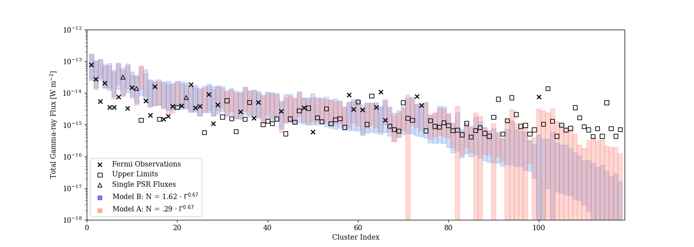
图注：Predicted gamma-ray fluxes for each GC based on the scaling laws we derived in Section \(\ref{sec:GC_abundance}\) for model A (red) and model B (blue), with the 90\% confidence intervals shaded. We also show the {\(\it\) Fermi} LAT measured GC fluxes (black crosses), measured bright MSP fluxes (black triangles), and upper limits (black squares) to demonstrate how well the modeled fluxes agree with these values. Cluster Index refers to how the GCs appear in descending order according to the median flux predicted by model B.
对应解读：对应“建议重点查看的图表”第1项，以及关键图表导读中的图1：星团γ射线观测通量与模型预测通量对比。
入选理由：这张图直接把模型A、模型B对每个球状星团的预测γ射线通量、90%置信区间、Fermi LAT实测通量、亮MSP通量和上限放在同一图中，是检验两个模型是否真正复现实测星团通量分布的核心证据。它也最能支持日报中关于亮星团、未检出上限和模型散布带的解读。
来源与置信度：\(arxiv_source\)；high；\(arxiv_source\) / manuscript.tex:figure[4]
Fig02
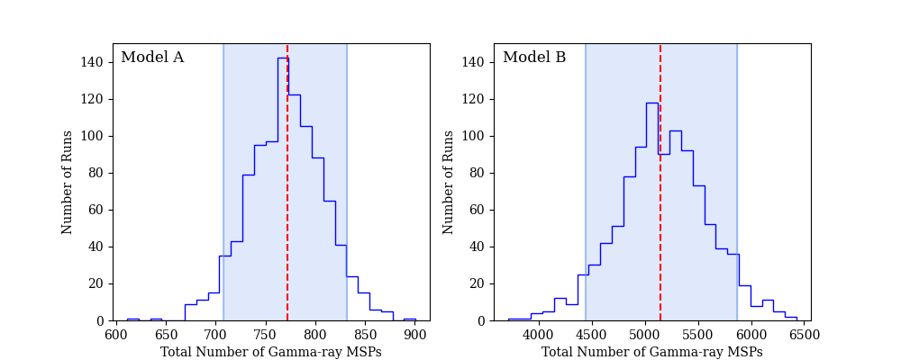
图注：Simulation results showing the total number of GC MSPs predicted across the population of 118 GCs for model A (left) and model B (right). The dashed lines show the medians of each distribution, while the 90\% confidence intervals are marked as shaded regions: $770\pm60$ (model A) and $5150^{+720}_{-710}$ (model B).
对应解读：对应“建议重点查看的图表”第4项，以及关键图表导读中的图4：总毫秒脉冲星数的后验或蒙特卡罗分布。
入选理由：这张图直接展示118个球状星团总体MSP数量的模拟分布，并明确标出模型A的770±60和模型B的5150^{+720}_{-710}及90%置信区间，是论文最重要结论——两种单源γ射线光度模型导致总源数相差约6到7倍——的最直接图形证据。
来源与置信度：\(arxiv_source\)；high；\(arxiv_source\) / manuscript.tex:figure[2]
Fig03
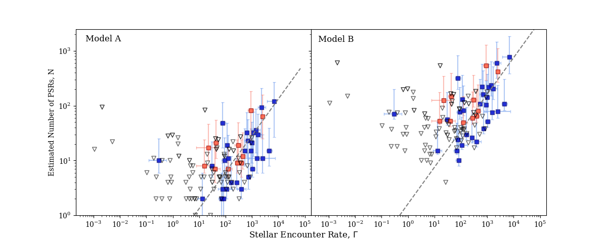
图注：Fits for model A (left) and model B (right) to the scaling relationship described by $N = \alpha \Gamma^{2/3}$ with a fixed exponent of $\beta = 2/3$. The squares are the results from GCs with measured {\(\it\) Fermi} gamma-ray fluxes, where GCs with no currently detected radio pulsars are colored red, while the triangles are the results based on upper limit estimates. The gray dashed line is the fit of all the squared symbols to $N = \alpha \Gamma^{2/3}$, and the best-fit constant is $\alpha_A = 0.29^{+.02}_{-.03}$ for model A and $\alpha_B = 1.62^{+.36}_{-.15}$ for model B, where the uncertainties are the 1$\sigma$ values from the fit.
对应解读：对应“建议重点查看的图表”第2项，以及关键图表导读中的图2：γ射线输出或推断源数与恒星遭遇率Γ的标度关系。
入选理由：图中拟合了N=αΓ^{2/3}的遭遇率标度关系，并区分Fermi测量星团、无已知射电脉冲星星团和上限估计，直接支撑日报中关于模型是否复现低质量X射线双星和射电脉冲星经验标度关系的讨论。α_A与α_B的差异也说明模型B需要更高的源数归一化。
来源与置信度：\(arxiv_source\)；high；\(arxiv_source\) / manuscript.tex:figure[3]
Fig06
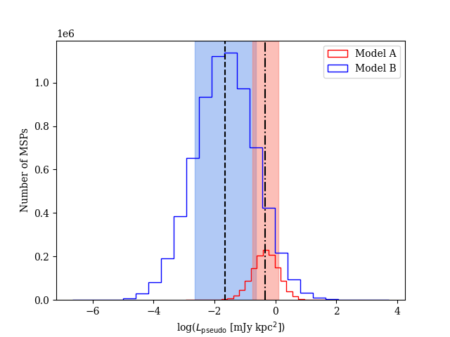
图注：Pseudoluminosities for the radio MSP populations predicted for models A (red) and B (blue). The vertical lines show the mean ${\rm log}$ $L_{\rm pseudo}$ for each model. The shaded regions show the 1$\sigma$ confidence intervals of the two distributions. The respective means and standard deviations in $\log L_{\rm pseudo}$ of --0.3 and 0.4 for model A and --1.6 and 1.0 for model B.
对应解读：对应“建议重点查看的图表”第6项，以及关键图表导读中的图5：射电伪光度分布。
入选理由：这张图直接比较模型A和模型B预测的射电MSP伪光度分布，标出均值和1σ区间，并给出模型A的log L_pseudo约-0.3、模型B约-1.6。它是支撑日报中“模型B预言大量更暗弱但可能被未来射电设施探测的MSP族群”这一解释的关键图。
来源与置信度：\(arxiv_source\)；high；\(arxiv_source\) / manuscript.tex:figure[6]
Fig01
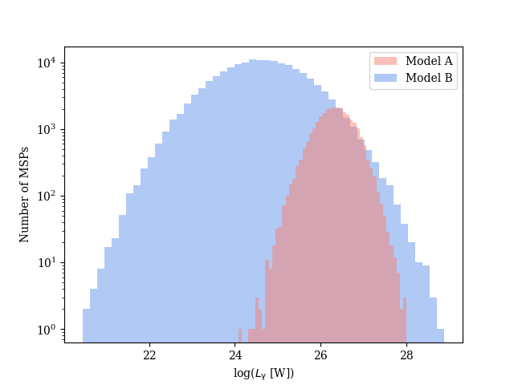
图注：A comparison of the gamma-ray luminosities predicted by model A and B.
对应解读：对应“建议重点查看的图表”第3项，以及关键图表导读中的图3：单颗MSP γ射线光度函数或模型A/B光度预测比较。
入选理由：候选图说明其比较了模型A和模型B预测的γ射线光度，是理解为什么模型A平均单源更亮、模型B平均单源更暗并因此需要更多源的基础图。虽然caption信息较简略，但它与日报中关于单颗源L_γ光度函数、均值和亮端尾部的讨论关系紧密。
来源与置信度：\(arxiv_source\)；high；\(arxiv_source\) / manuscript.tex:figure[1]
Fig05
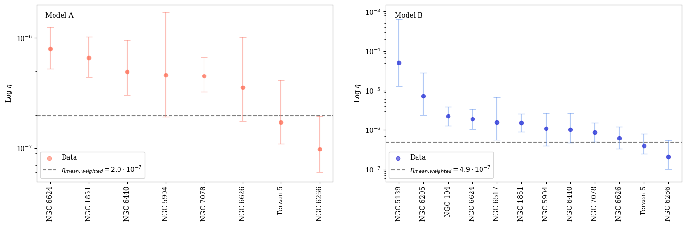
图注：Results of simulations to determine the relative radio-to-gamma-ray luminosity ratio, $\eta$ for model A (left) and model B (right). For four of the GCs that had at least five known radio pulsars with measured radio flux densities, we were unable to estimate $\eta$ for model A because this model estimated a total number of pulsars that was less than the number of known pulsars for that GC. Model B predicted a sufficiently large population to estimate $\eta$ in all cases.
对应解读：对应模型拟合段落中关于射电—γ射线光度转换，以及“建议重点查看的图表”第6项的补充诊断。
入选理由：这张图展示模型A和B下相对射电到γ射线光度比η的模拟结果，并指出模型A在若干已知射电脉冲星较多的星团中预测总数甚至少于已知数，因而无法估计η。它不是日报最核心的通量或总源数图，但能补充说明模型A在射电族群解释上的张力，以及模型B为何更容易容纳已知射电样本。
来源与置信度：\(arxiv_source\)；high；\(arxiv_source\) / manuscript.tex:figure[5]
强相关工作
这篇工作属于“球状星团毫秒脉冲星族群合成”和“费米未解析 \(\gamma\) 射线源族群”交叉方向。直接相关的同类研究包括费米对 \(47\) Tuc、Terzan 5 和多球状星团样本的 \(\gamma\) 射线观测，低质量 X 射线双星数量与星团遭遇率的经验标度，以及射电脉冲星目录对星团毫秒脉冲星的统计。检索关键词可用 “Fermi LAT globular clusters millisecond pulsars gamma-ray luminosity function”、“globular cluster encounter rate MSP population”、“47 Tuc gamma-ray millisecond pulsars”、“Terzan 5 gamma-ray pulsars”。
与本文可能存在张力的是那些倾向于用较高平均 \(L_\gamma\) 估算星团毫秒脉冲星数量的工作，以及把射电暗弱解释为本征低射电效率而非几何选择效应的研究。本文更支持大量低伪光度或几何上不利的毫秒脉冲星，因此未来深射电搜索若没有发现相应暗弱族群，就会反过来挑战模型 B 的低光度端或射电—\(\gamma\) 转换。检索相反观点可用 “MSP gamma-ray fundamental plane luminosity”、“radio faint millisecond pulsars beaming geometry”、“globular cluster MSP number estimates Fermi”。
同一事件 / 同类源线索：
- https://arxiv.org/abs/2608.02768
- https://arxiv.org/pdf/2608.02768
- https://www.atnf.csiro.au/research/pulsar/psrcat/
- https://physics.mcmaster.ca/~harris/mwgc.dat
- https://fermi.gsfc.nasa.gov/ssc/data/access/lat/14yr_catalog/
相似工作：
基础理论 / 方法工作：
相反观点 / 张力线索：
（未提供）
8. A "Neutrino Fog" For Gravitational Waves: The Stochastic Gravitational Wave Background from Supernova Neutrino Memory
- 来源：arXiv / astro-ph.HE
- 链接：https://arxiv.org/abs/2608.02747v1
- 作者：Alex Rojewski, Cecilia Lunardini
- 评分：novelty 8/10，importance 8/10，relevance 7/10，final 8.65/10
- 推荐理由：基于三维核心坍缩超新星模拟预测由中微子记忆产生的随机引力波背景，连接超新星中微子物理和未来空间引力波探测，虽非伽马方向但新颖性较高。
中文题目：引力波的“中微子雾”：来自超新星中微子记忆效应的随机引力波背景
做了什么：这篇文章估算了核心坍缩超新星在宇宙历史中累积形成的随机引力波背景，重点不是传统上较常讨论的高频近核物质运动信号，而是各向异性中微子辐射产生的引力波记忆效应。作者利用一组现代三维、多秒尺度超新星模拟来标定单次爆发的中微子记忆波形，再与宇宙核心坍缩率卷积，得到随机背景谱。主要结论是：中微子记忆分量在 \(f\sim 10^{-2}-1\,\mathrm{Hz}\) 形成峰值，尤其在 \(f\sim 0.1\,\mathrm{Hz}\) 附近可能落入未来空间引力波探测器的敏感频段；相比之下，近核物质动力学贡献主要在 \(f\gtrsim 10^{2}\,\mathrm{Hz}\)，探测前景更差。它重要之处在于，这个背景可能成为搜索暴胀或其他宇宙学随机背景时的一种天体物理“雾”。
为什么重要：核心坍缩超新星是宇宙中不可避免的瞬变源族，单个事件的中微子记忆信号很弱，但全宇宙未分辨事件的叠加可能在分赫兹频段形成可观的随机背景。这个频段正是未来空间干涉仪、原子干涉仪或月基构想希望打开的新窗口。如果该背景达到作者估计的上限，它不只是一个可探测目标，也会成为宇宙学随机引力波背景搜索中的前景污染项。
理论 / 观测 / 仪器方法价值：对理论而言，文章把三维长时程核心坍缩模拟中的中微子各向异性直接映射到随机背景，减少了过去依赖简化参数化波形的任意性。对观测而言，它给出了未来 \(0.01-1\,\mathrm{Hz}\) 探测器需要面对的一类天体物理背景谱形和幅度范围。对方法而言，它展示了如何把单源记忆波形、宇宙核心坍缩率、红移效应和探测器灵敏度连接成一个可检验的随机背景预测。
为什么应该关注：如果你关心下一代引力波探测器、核心坍缩物理、弥散超新星中微子背景，或原初引力波背景搜索，这篇文章都值得看。它提醒我们：分赫兹随机背景不一定是“干净”的早期宇宙窗口，普通恒星死亡也可能留下类似雾霾的不可分辨信号。它还把超新星中微子物理和引力波宇宙学联系起来，使未来探测到的随机背景可能同时约束恒星形成史、核心坍缩率和爆炸各向异性。
展开详细解读：文章讲解、背景、理论、重点章节、图表与相关工作
文章详细讲解
科学问题：文章要回答的是，宇宙中所有未分辨核心坍缩超新星叠加起来，会在引力波频谱上留下多强的随机背景。以往讨论超新星引力波时，重点常放在 \(f\gtrsim 10^{2}\,\mathrm{Hz}\) 的近核物质运动，例如反弹、对流、驻激波不稳定、旋转和原中子星振荡。但核心坍缩还会以中微子形式释放约 \(10^{53}\,\mathrm{erg}\) 的能量，只要辐射存在角向不对称，就会产生非振荡型的引力波记忆信号。这种记忆信号的单源频率较低，累积背景峰值可能落在 \(10^{-2}-1\,\mathrm{Hz}\)，恰好是未来分赫兹探测器的目标区间。
作者怎么做：作者使用一组先进的三维、多秒尺度核心坍缩超新星模拟，提取中微子各向异性辐射导致的记忆波形，同时也纳入近核物质动力学的高频引力波分量。这里的关键不是只选一个代表性爆炸模型，而是用多套模拟覆盖不同前身星、爆炸行为和中微子辐射各向异性历史，从而估计单源波形的不确定性。随后，他们把单次超新星的频域能量谱与宇宙核心坍缩率密度卷积，并考虑红移导致的频率移动和能量稀释，得到随机引力波背景的能量密度谱 \(\Omega_{\rm GW}(f)\)。
关键结果：文章的中心结果是，随机背景有两个物理来源清楚分开的分量。中微子记忆分量在 \(f\sim 10^{-2}-1\,\mathrm{Hz}\) 范围内占优，峰值约在 \(f\sim 0.1\,\mathrm{Hz}\)；物质动力学分量则在 \(f\gtrsim 10^{2}\,\mathrm{Hz}\) 较明显，但相对于地面探测器背景和灵敏度而言更难探测。作者特别强调，中微子记忆背景的峰值能量密度可能与慢滚暴胀或某些宇宙学遗迹产生的随机背景在同一量级，因此在未来空间探测器数据中，它既可能是新的天体物理信号，也可能成为宇宙学背景搜索的前景。
局限和下一步：最大不确定性来自两端：单源端的三维超新星模拟仍受数值方法、中微子输运、前身星结构、爆炸能量和模拟时长影响；宇宙学端的核心坍缩率依赖恒星形成率、初始质量函数、金属丰度演化和失败超新星比例。记忆信号尤其依赖中微子角向各向异性，而这是模拟中最难稳健收敛的量之一。下一步应扩大模拟库，纳入黑洞形成和失败爆炸情形，建立与弥散超新星中微子背景的一致约束，并将该前景放入具体探测器的贝叶斯成分分离框架中。
关键结果是怎么做出来的
本文最重要的证据链从单源模拟开始。作者没有把核心坍缩超新星当成统一标准烛光，而是使用多组三维、多秒尺度模拟来获得时间依赖的中微子发光率、角分布和近核物质引力波信号。这样的样本选择很关键，因为中微子记忆的振幅主要由辐射各向异性随时间的积分决定，短时二维模拟或参数化爆炸很容易高估或低估低频谱形。读者应特别关注论文中列出模拟集合的表格：前身星质量、是否成功爆炸、模拟终止时间、中微子总能量和引力波记忆振幅范围，基本决定了后续背景的不确定性带。
事件数不是以逐个可分辨事件计数出现，而是通过宇宙核心坍缩率密度积分进入。作者把单源能量谱 \(dE_{\rm GW}/df_s\) 与红移相关的核心坍缩率 \(R_{\rm cc}(z)\) 卷积，因此对背景贡献最大的不是任意高红移事件，而是由恒星形成史、宇宙体积元和红移能量稀释共同加权后的红移区间。检验这个结果时，应看作者是否给出不同核心坍缩率模型、不同最大红移和不同单源模拟集合下的 \(\Omega_{\rm GW}(f)\) 包络，而不是只看一条代表性曲线。
显著性或可探测性通常不是由本文直接报告一个已观测的 \(p\) 值，而是通过与未来探测器的功率律综合灵敏度、交叉相关灵敏度或等效噪声能量密度比较来判断。文章的关键图应当展示中微子记忆背景在 \(f\sim 0.1\,\mathrm{Hz}\) 附近与未来空间探测器曲线、暴胀背景参考线、相变或宇宙弦等宇宙学背景的相对位置。这里读图要注意：背景曲线接近灵敏度曲线并不等于一定探测，实际还取决于观测时间、独立探测器通道、前景成分分离以及谱形先验。
模型比较的核心是中微子记忆分量与物质动力学分量的频段分离。论文应通过单源频谱或背景谱图说明，低频峰来自记忆的缓慢累积，而高频尾来自近核随机运动。若图中同时画出两个分量，读者要检查交叉频段是否存在人为拼接、模拟时长截断或窗口函数导致的谱泄漏。对于记忆信号，低频端常受有限观测时间和波形截断影响，若处理不当会改变 \(f\lesssim 10^{-2}\,\mathrm{Hz}\) 的斜率。
主要系统误差包括核心坍缩率归一化、红移演化、失败超新星比例、前身星质量分布、中微子输运近似、三维模拟样本的代表性以及记忆波形的角向投影。稳健性检验应包括改变宇宙率模型、分别使用不同模拟波形、比较乐观与保守包络、测试模拟结束时间对低频谱的影响，并检查物质动力学分量是否依赖有限数值分辨率。若论文把这些不确定性以阴影带而非单线展示，这是比单一预测值更可靠的结果表达。
展开背景、理论、公式、模型、章节和图表导读
背景知识
核心坍缩超新星是大质量恒星生命终点的剧烈事件，核心在引力作用下坍缩为原中子星或黑洞，并通过中微子冷却、冲击波复燃和多维流体不稳定释放能量。绝大多数引力束缚能以中微子形式带走，电磁辐射只占很小比例。由于核心坍缩是强引力、核物质状态方程、中微子输运和湍流流体力学交汇的系统，它一直是多信使天体物理中的核心问题。
历史上，超新星引力波研究主要瞄准银河系或近邻星系中的单个事件。高频信号来自核心反弹、对流、驻激波不稳定和原中子星振荡，频率通常在几十赫兹到千赫兹，适合地面干涉仪。中微子引力波记忆则较早就被理论指出：如果中微子发射不是球对称的，逃逸辐射携带的动量通量会改变远区时空度规，留下低频、非振荡的永久位移型信号。这个信号单个源难测，但全宇宙叠加后可形成随机背景。
现在重新看这个问题有两个原因。第一，三维核心坍缩模拟已经能在多秒时间尺度上追踪中微子发射和爆炸几何，比早期二维或短时模拟更适合估计记忆效应。第二，未来分赫兹引力波探测构想正在成熟，例如空间干涉仪、原子干涉仪和其他中频段方案，它们的敏感区间正好避开了地面探测器的低频墙，也高于脉冲星计时阵列的纳赫兹频段。超新星中微子记忆背景因此从理论小效应变成了实际前景问题。
该领域常见误区之一是把“超新星引力波背景”简单等同于高频物质动力学背景。事实上，中微子记忆的低频分量和物质运动的高频分量来源不同、谱形不同、探测器不同，不能用同一套直觉判断。另一个误区是认为记忆信号是直流信号，因此无法在引力波探测器中看到；实际有限持续时间的记忆上升会在频域中产生低频功率。还有一个误区是只看单个银河系超新星的可探测性而忽略未分辨宇宙背景，后者在随机背景搜索中可能更重要。
基础理论 / 方法脉络
基本物理图像是：引力波由非球对称的能量动量分布产生。对于普通物质运动，时变质量四极矩产生振荡型引力波；对于高速逃逸辐射，例如中微子，如果能量通量存在角向不对称，辐射本身携带的动量会造成度规的永久变化，即引力波记忆。核心坍缩超新星中，中微子总能量极大，即使各向异性比例只有百分量级，也可能产生低频可积累的记忆信号。
本文涉及两个单源分量。第一是中微子记忆分量，它的波形通常表现为随时间逐渐增长或随机游走式增长的应变偏移，主要频率由中微子各向异性变化的时间尺度决定，落在毫赫兹到赫兹附近。第二是近核物质动力学分量，它来自原中子星表面振荡、下落羽流、对流和冲击波运动，频率更高，通常进入 \(10^{2}\,\mathrm{Hz}\) 以上。两者在随机背景中可以近似相加，但其系统误差来源不同。
从观测统计角度，随机引力波背景通常用无量纲能量密度 \(\Omega_{\rm GW}(f)\) 表示，即每个对数频率区间的引力波能量密度占临界密度的比例。对宇宙源族，\(\Omega_{\rm GW}(f)\) 由单源能量谱、事件率密度和宇宙学体积加权共同决定。红移会把源系频率 \(f_s\) 移到观测频率 \(f=f_s/(1+z)\)，也会稀释能量和事件发生率。
本文模型假设的关键量包括核心坍缩率 \(R_{\rm cc}(z)\)、单次爆发的频域能量谱 \(dE_{\rm GW}/df_s\)、中微子总辐射能 \(E_\nu\)、各向异性参数以及模拟给出的时间结构。主要退化关系是：较高的核心坍缩率、较大的中微子各向异性和较长的记忆增长时间都可提高低频背景；仅凭背景幅度很难区分这些因素。选择效应则来自模拟样本是否代表真实前身星族群，以及未来探测器是否能把该背景同白矮星双星、黑洞双星尾部和宇宙学背景区分开。
公式与推导
第一步是定义随机背景的能量密度。观测者常用无量纲量
这里 \(f\) 是观测频率，\(\rho_{\rm GW}\) 是引力波能量密度，\(\rho_c\) 是宇宙临界密度，\(H_0\) 是哈勃常数，\(G\) 是引力常数。这个定义把不同频段和不同探测器的背景强度放在同一尺度上比较。
第二步是把单源能量谱同宇宙事件率卷积。对核心坍缩源族，有
其中 \(c\) 是光速，\(R_{\rm cc}(z)\) 是共动体积中的核心坍缩率，\(H(z)\) 是宇宙膨胀率，\(f_s\) 是源系频率。因子 \((1+z)^{-1}\) 反映宇宙学时间膨胀，频率映射由 \(f_s=(1+z)f\) 给出。
第三步是给出单源频域能量谱与应变的关系。对一个源在距离 \(D\) 处的两个偏振 \(\tilde h_+(f)\) 和 \(\tilde h_\times(f)\)，近似有
这里的 \(D\) 应理解为源系局域近似下的距离标度；在宇宙学积分中通常直接使用模拟给出的源系能量谱，避免重复引入距离。
第四步是记忆信号的时域来源。对各向异性中微子辐射，一个简化表达可写成
其中 \(L_\nu(t)\)
) 是中微子光度，\(\alpha_\nu(t)\) 是角向各向异性的投影参数。该式说明记忆振幅由中微子能量输出和非球对称程度的时间积分控制。
第五步是解释为什么记忆落在低频。若记忆在时间尺度 \(T\) 内从零增长到 \(\Delta h\)，可用近似波形估计频域振幅
这里 \(W(2\pi fT)\) 是由具体上升形状和截断决定的窗口函数。当 \(f\lesssim T^{-1}\) 或波形被有限模拟时长截断时，谱形会对 \(W\) 很敏感；当 \(f\gtrsim T^{-1}\) 时，记忆的 \(1/f\) 型趋势使能量集中在低频到中频。
第六步是把核心坍缩率同恒星形成率连接。常用关系是
其中 \(\dot\rho_\star(z)\) 是恒星形成率密度，\(\phi(M)\) 是初始质量函数，\(M_{\min}\) 到 \(M_{\max}\) 是发生核心坍缩的质量范围。这个式子说明背景归一化同恒星形成史和初始质量函数直接相关。
第七步是探测器响应。随机背景常被换算成特征应变
这里 \(h_c(f)\) 便于同探测器噪声幅度谱比较。即使 \(\Omega_{\rm GW}(f)\) 在高频较平，\(h_c(f)\) 也会因 \(f^{-1}\) 权重在低频显得更大。
第八步是交叉相关探测的信噪比估计。对两个噪声近似独立的探测通道，常用
其中 \(T\) 是观测时长，\(\Gamma(f)\) 是重叠约化函数，\(P_1(f)\)
) 和 \(P_2(f)\) 是两个通道的噪声功率谱，\(S_h(f)\) 是背景应变功率谱。它说明可探测性不仅取决于背景峰值，还取决于频谱宽度、观测时间和通道几何。
第九步是 \(S_h(f)\) 与 \(\Omega_{\rm GW}(f)\) 的换算：
这条关系让读者可以把论文给出的能量密度曲线转换为数据分析中的功率谱模板，并检查中微子记忆背景是否会同暴胀、相变或双星前景的谱形发生退化。
模型拟合 / 应用方法
这类工作的“拟合”首先发生在单源层面：三维模拟输出中微子光度、角向分布和物质运动后，需要从有限时间序列构造 \(h(t)\)、\(\tilde h(f)\) 和 \(dE_{\rm GW}/df\)。这里并非简单做一个解析函数拟合，而是要处理模拟起止时间、采样率、窗口函数、低频泄漏和不同观测方向投影。对于记忆信号，波形末端是否达到平台、模拟是否覆盖完整中微子冷却阶段，会直接影响 \(f\lesssim 1/T\) 的频谱。
第二层拟合是宇宙源族模型。核心坍缩率 \(R_{\rm cc}(z)\) 通常由恒星形成率和初始质量函数推导，可能采用若干文献参数化形式。拟合量或超参数包括局域核心坍缩率归一化、红移演化斜率、高红移截断、前身星质量范围和失败超新星比例。如果文章给出不确定性带，读者应判断它是否只包括宇宙率不确定性，还是同时包括单源波形散布。
第三层是与探测器灵敏度的比较。真正的数据分析会把 \(\Omega_{\rm GW}(f)\) 当作一个谱模板，与噪声模型和其他随机背景模板一起进入似然。常见似然可基于交叉功率谱残差，拟合参数包括中微子记忆背景幅度、谱形参数、宇宙学背景幅度和仪器噪声校准项。若只用一条灵敏度曲线判断可探测性，容易忽略不同背景之间的谱形退化。
关键退化包括：中微子各向异性增强与核心坍缩率升高都能提高背景幅度；更长的记忆增长时间和更高红移贡献都会改变峰位；宇宙学随机背景若在分赫兹附近近似平坦，可能与超新星记忆背景的峰部重叠。残差诊断应关注谱形是否有中微子记忆特有的宽峰，而不只是总信噪比。模型失败的情形包括真实超新星族群与模拟样本严重不匹配、存在大量失败坍缩直接成黑洞且中微子辐射时程不同、或探测器低频噪声和白矮星双星前景没有被充分建模。
重点章节 / 结果段落怎么读
数据和模拟样本部分应首先阅读。重点看作者使用了哪些三维核心坍缩模拟、每个模拟持续到反弹后多久、是否覆盖完整爆炸和中微子冷却早期、前身星质量和爆炸状态如何分布。对于本文结论，模拟样本的代表性比单个最强模型更重要。
单源引力波构造方法部分是第二个重点。读者应看清中微子记忆波形如何从中微子角分布和光度计算出来，物质动力学波形如何提取，频域谱是否使用窗口函数或外推，以及不同观测方向如何平均。特别要注意低频记忆分量是否受有限模拟时长控制。
随机背景积分部分应检查宇宙核心坍缩率模型、红移积分范围和宇宙学参数。这里决定了从单源到背景的归一化和峰位。若作者比较多个恒星形成率或核心坍缩率模型，读者应把这些视为主要系统误差之一。
主结果部分应围绕 \(\Omega_{\rm GW}(f)\) 的双分量结构阅读：\(10^{-2}-1\,\mathrm{Hz}\) 的中微子记忆峰和 \(f\gtrsim 10^{2}\,\mathrm{Hz}\) 的物质动力学分量。比较探测器曲线时，要分清“可能达到灵敏度”与“可在多前景环境中可靠分离”之间的差别。
讨论和稳健性检验部分应重点看作者如何处理单源散布、核心坍缩率不确定性、未来探测器假设以及与暴胀或宇宙学遗迹背景的混淆。若附录给出不同模拟、不同窗口处理或不同率模型的曲线，应优先查看，因为这些图往往比摘要结论更能说明预测的可靠范围。
建议重点查看的图表
-
模拟样本表：检查前身星质量、模拟维度、模拟时长、爆炸状态、中微子总能量和是否包含物质动力学波形。这个表决定预测是否有代表性。
-
单源时域波形图：看中微子记忆 \(h(t)\) 是否持续增长、是否达到平台、不同方向散布多大，以及物质动力学分量的振荡幅度和频率是否明显分离。
-
单源频域能量谱图：看低频记忆分量与高频物质分量的交叉位置，检查低频斜率是否可能由窗口函数或模拟截断控制。
-
核心坍缩率或红移贡献图：看 \(R_{\rm cc}(z)\) 的采用形式，以及哪个红移范围对 \(\Omega_{\rm GW}(f)\) 贡献最大。
-
随机背景总谱图：重点看 \(\Omega_{\rm GW}(f)\) 在 \(f\sim 0.1\,\mathrm{Hz}\) 的峰值、阴影不确定性带、与探测器灵敏度的相对位置。
-
与宇宙学背景比较图：看超新星中微子记忆背景是否与慢滚暴胀、相变、宇宙弦等参考谱重叠，尤其要看谱形而非只看峰值。
-
稳健性或系统误差图：检查换用不同模拟、不同核心坍缩率、不同波形外推后，结论是否仍保持“低频记忆最有希望探测”。
关键图表逐图导读
图 1：若论文给出模拟样本或单源波形概览，横轴通常是反弹后时间，纵轴可能是应变 \(h(t)\)、中微子光度 \(L_\nu(t)\) 或各向异性参数。数据线代表不同三维模拟或不同观测方向。主要结论应是中微子记忆呈非振荡累积，而物质动力学信号是较高频的振荡。读图陷阱是把记忆的最终偏移量当作唯一可观测量；探测器看到的是有限时间变化对应的频域功率。
图 2：单源频谱图通常以频率为横轴，以 \(dE_{\rm GW}/df\)、\(f dE_{\rm GW}/df\) 或等效应变为纵轴。中微子记忆曲线应在低频占优，物质动力学曲线在 \(10^{2}\,\mathrm{Hz}\) 以上上升或出现峰。需要看不同模拟之间的散布是否大于同一模型的方向散布，以及低频端是否有由有限时长造成的转折。
图 3：随机背景 \(\Omega_{\rm GW}(f)\) 主图通常横轴为观测频率，纵轴为无量纲能量密度。模型线可能分为中微子记忆、物质动力学和总和，阴影带表示模拟或宇宙率不确定性。关键读法是确认 \(f\sim 0.1\,\mathrm{Hz}\) 峰来自记忆分量，而不是高频物质分量的外推。
图 4：探测器灵敏度比较图会叠加未来空间探测器或中频探测器曲线。坐标轴仍多为 \(f\) 和 \(\Omega_{\rm GW}\) 或 \(h_c\)。读者要注意灵敏度曲线可能是假设一定观测时间和背景谱形得到的功率律综合灵敏度，不等同于任意谱形的直接探测阈值。
图 5：如果有红移贡献或率模型比较图，横轴可能是红移 \(z\) 或频率，纵轴是对 \(\Omega_{\rm GW}\) 的微分贡献。它能告诉你背景主要来自近宇宙还是 \(z\sim 1-2\) 的恒星形成高峰。读图陷阱是忽视红移同时改变事件数、能量和观测频率，因此最高事件率红移不一定等于最大背景贡献红移。
图 6：稳健性图或附录图通常展示换用不同模拟集合、不同核心坍缩率和不同波形处理后的背景包络。这里应看峰位是否稳定、峰值不确定性有多大、低频斜率是否随处理方法变化。若只有归一化变化而谱形稳定，说明“中微子雾”的物理判断较稳健；若峰位大幅漂移，则未来成分分离会更困难。
论文原图 / 可嵌入图片
Fig06
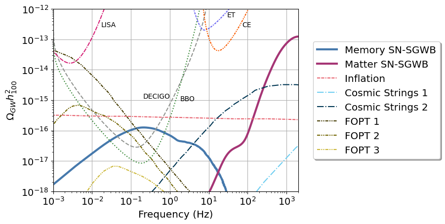
图注：Gravitational wave energy density of the \(\sngwb.\) The memory and matter contributions are shown separately, see legend. Five relevant detector power-law integrated sensitivity curves (PLISCs) are also shown (labels on curves), along with selected representative cosmological \gwb\ signals in the relevant frequency band: first-order phase transitions \protect\cite{Dunsky:2023ucb}, cosmic strings \protect\cite{Blanco-Pillado:2017rnf}, and inflation \protect\cite{Renzini:2022alw} (maximum allowed, see text for details).
对应解读：对应“建议重点查看的图表”第5、6项，以及“关键图表逐图导读”图3和图4：随机背景总谱、记忆/物质分量、探测器PLISC灵敏度和宇宙学背景比较。
入选理由：这是全文最核心结果图，直接展示超新星随机引力波背景的能量密度谱，区分中微子记忆与物质动力学两部分，并叠加未来探测器灵敏度及相变、宇宙弦、暴胀等宇宙学背景。它最能支撑日报中关于f~0.1 Hz峰值、低频记忆分量可探测性以及作为宇宙学背景前景的解读。
来源与置信度：\(arxiv_source\)；high；\(arxiv_source\) / main.tex:figure[6]
Fig01
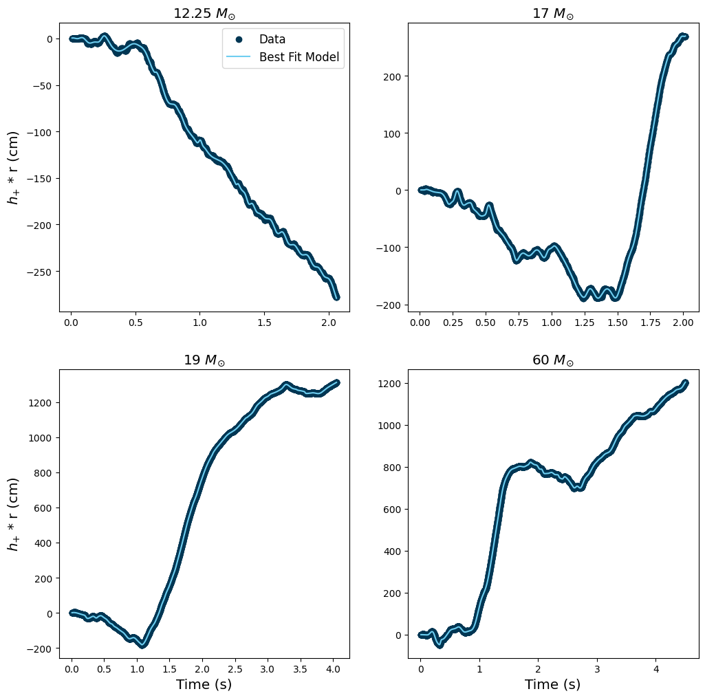
图注：Fits to memory strain profiles, for the plus mode, for representative progenitor models. The dimensionless strain has been scaled by the fiducial distance to the supernova, $r=10$ kpc. The dark blue points represent the strain profile from each simulation, while the cyan line represents our phenomenological fit.
对应解读：对应“建议重点查看的图表”第2项，以及“关键图表逐图导读”图1和“模型拟合”中单源记忆波形拟合段落。
入选理由：该图给出代表性前身星的plus模中微子记忆应变时域剖面及现象学拟合，能直接检查记忆信号是否呈非振荡累积、是否趋于平台，以及拟合如何从有限模拟时长外推到频域背景。相比Fig02的cross模，它已足以代表单源记忆波形的关键物理。
来源与置信度：\(arxiv_source\)；high；\(arxiv_source\) / main.tex:figure[1]
Fig03
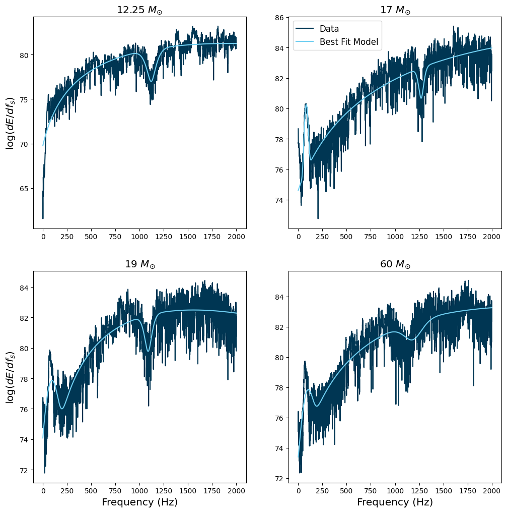
图注：Representative fits to the matter spectra. The dark blue line represents the natural logarithm of the matter contribution to $dE/df_s$, while the cyan line represents the phenomenological fit, Eq. (\ref{matterpheno}).
对应解读：对应“建议重点查看的图表”第3项，以及“关键图表逐图导读”图2和“模型拟合”中物质谱现象学拟合段落。
入选理由：该图展示近核物质动力学分量的dE/df_s频谱及拟合，是理解高频f≳10^2 Hz背景来源的关键。它可与记忆分量图形成对照，说明论文所说的低频记忆和高频物质分量为何在频率上明显分离。
来源与置信度：\(arxiv_source\)；high；\(arxiv_source\) / main.tex:figure[3]
Fig04
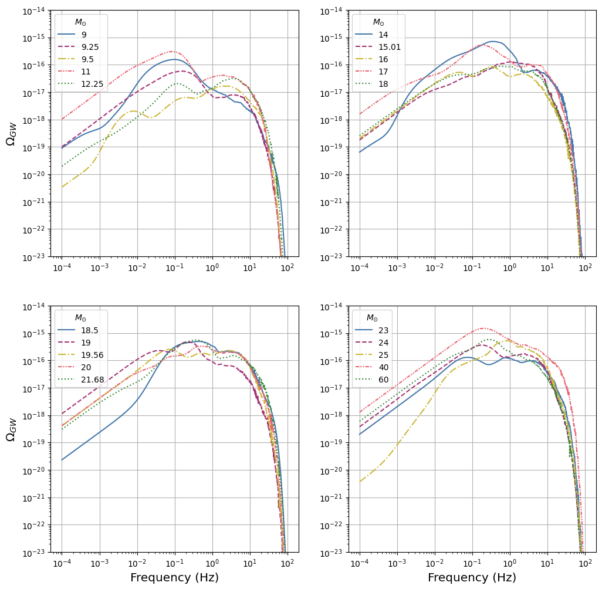
图注：Single-progenitor dimensionless energy densities for the neutrino memory component of the \(\sngwb,\) as a function of frequency, for the x-direction. Models are labeled by the progenitor mass, see Tab. \(\ref{table:1}.\)
对应解读：对应“建议重点查看的图表”第3、7项，以及“关键图表逐图导读”图2和图6：不同前身星的中微子记忆单源背景能量密度谱。
入选理由：该图按前身星质量展示中微子记忆分量对随机背景能量密度的贡献，能检查低频峰形、模型间散布和单源样本不确定性。它支撑日报中关于模拟库代表性、低频斜率和记忆分量主导性的讨论。
来源与置信度：\(arxiv_source\)；high；\(arxiv_source\) / main.tex:figure[4]
Fig05
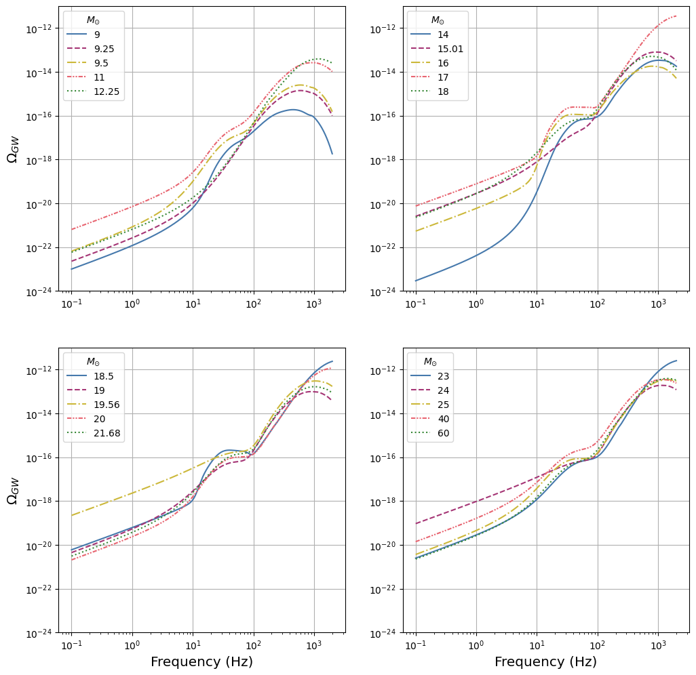
图注：Single-progenitor dimensionless energy densities for the matter component of the \(\sngwb,\) as a function of frequency, for the x-direction. The same labeling scheme is used as in Figure \(\ref{memoryfitcurves}.\)
对应解读：对应“建议重点查看的图表”第3项，以及“关键图表逐图导读”图2：物质动力学分量的单源能量密度谱。
入选理由：该图展示不同前身星的物质分量能量密度随频率变化，可用于确认物质动力学主要贡献位于高频段，并与Fig04的低频记忆分量作直接比较。它帮助读者判断两个物理分量的交叉和频段分离，而不是只看总谱。
来源与置信度：\(arxiv_source\)；high；\(arxiv_source\) / main.tex:figure[5]
Fig09
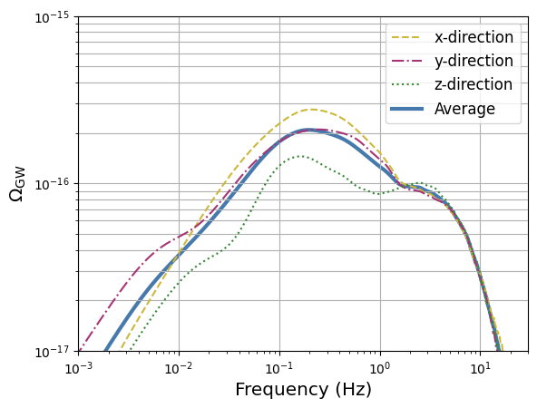
图注：Gravitational wave energy density of the total \sngwb\, for the x-, y-, and z-direction source orientations and source orientation-averaged total, Eq. (\ref{eq:avgorientations}).
对应解读：对应“建议重点查看的图表”第7项，以及“关键图表逐图导读”图6：不同源取向和取向平均后的总随机背景稳健性。
入选理由：该图比较x、y、z方向源取向与取向平均的总SNGWB能量密度，可检验方向投影带来的系统差异是否改变总体谱形和峰位。它对日报中关于观测方向散布、系统误差和结论稳健性的讨论最有补充价值。
来源与置信度：\(arxiv_source\)；high；\(arxiv_source\) / main.tex:figure[9]
强相关工作
这篇工作属于随机引力波背景和核心坍缩超新星引力波两个方向的交叉。与经典随机背景理论相比，它关注的不是紧致双星并合或早期宇宙，而是普通大质量恒星死亡产生的低频记忆前景。建议检索关键词包括 “stochastic gravitational-wave background core-collapse supernovae”, “supernova neutrino memory gravitational waves”, “anisotropic neutrino emission gravitational wave memory”, “DECIGO BBO supernova background”。
与超新星引力波模拟文献相比，本文的特色是把三维多秒模拟用于宇宙背景预测，而不是只讨论单个银河系事件。相近工作包括核心坍缩高频随机背景、弥散超新星中微子背景、以及由黑洞形成或失败超新星产生的中微子和引力波信号。潜在张力来自不同三维模拟对中微子各向异性的预测差异，以及未来分赫兹探测器中其他前景，例如白矮星双星混淆背景、紧致双星随机背景尾部、暴胀背景、宇宙弦和一阶相变背景。
同一事件 / 同类源线索：
相似工作：
基础理论 / 方法工作：
相反观点 / 张力线索：
（未提供）
说明
评分由 LLM 给出初评，再由本地阈值策略过滤；IACT、TeV 伽马射线和高能中微子天文学按重点方向处理。